QV s’engage à pratiquer l’éternel reportage, produisant en chemin des essais et une documentation cruciale sur et pour des événements dignes de provoquer l’envie de vivre.
16 et 18.10.2025 · «SOLAS», Candela Capitán · «Suspiro», Maria Reis · 8 Marvila et Espaço BoCA, Lisbonne · par GM BoCA - Parties 5 & 6
09 et 10.10.2025 · «Romi Ibérica», Deborah Krystall · «The Spirit Lamp», Chrystabell · Espaço BoCA et Voz do Operário, Lisbonne · par GM BoCA - Parties 2 & 3
04.10.2025 · «El Cante Rasgueado», Niño de Elche et Pedro G. Romero · Amphithéâtre en plein air, Fondation Calouste Gulbenkian, Lisbonne · par GM BoCA - Partie 1
Les et , QV a été accueillie par les Rencontres d'Arles pour assister à leur 57e édition, à Arles, où elle a vu Goudron. Tanger – Le Cap de Bruno Boudjelal à la Commanderie Sainte-Luce, Le Corps vitré de Lara Tabet et Yasmine Chemali au Cloître Saint-Trophime, (TSY) Possible de Charlotte Yonga à l'Espace Monoprix, L'Image cannibale, sous le commissariat d'Alessandra Chiericato, à la Chapelle de la Charité, et Par un matin calme de Park Chan-wook à Lee Ufan Arles.
Jamais Le Soleil N'a Commencé, Car Nous Avons Ri D'abord - Rencontres d'Arles 2026
par GM
La parole tue, vit, et a toujours été le commencement. Précisément par ses traits de hache, sans la moindre entrave, elle parvient à tuer pour faire vivre directives, concepts, personnalités, émotions, eaux, soleils, métaux et les vies elles-mêmes.
La photographie est l’art de ceux qui sont incapables de tuer, incapables de s’approprier la substance de leur créativité et de lui donner forme, préférant une sempiternelle captation, lécher des perles de jasmin au trésor de sang. Appelez cela notre ignorance; nous l’appelons la lâcheté inhérente aux ennemis des artisans.
L’image donne tout dans la plus parfaite conciliation de l’immédiat et du mépris pour la dignité de la figure que l’on capture dans la coquille: la pire couleur de toutes, celle qui ment sans dire pourquoi, les formes restant les seuls témoins de l’erreur. Elle fait du Rhône un panneau pixelisé de parasites, dont le bourdonnement de Judas nous porte jusqu’aux plus hauts nuages pour aussitôt crever la bulle d’air dans laquelle, comme des enfants, nous nous étions isolés.
À chaque heure, la cacophonie du fleuve, des infâmes qui trébuchent sur les microclimats. Viennent-ils souvent ici? Au moins se reposent-ils dans cet amour lent, trois jours de fête dans la nécropole des rêves. Bien sûr, ces causes ne les intéressent pas: comment s’organisent les choses merveilleuses de la société, belles et sereines. Plus jolie et plus drôle est l’inconstance générale des chaussures qui glissent comme des serpents.
Si l’image veut vivre, elle a une chance: devenir quelque chose de sanglant, prendre des faits, les décanter et les faire siens, comme le fait, par exemple, le collage. Peut-être sera-t-elle ainsi enfin capable de développer quelque chose d’humain qui ne soit pas une simple vénération du soleil, cette toute première image.
Le , QV a eu le plaisir de vivre un après-midi de catch du CTW au Radioclube Agramonte, à Porto.
Clarimundo - CTW Wrestling @ RCA
C’est le Diable qui nous a imposé la création et pour toujours nous devrons la payer, des erreurs dans l’air que nous créons par-dessus, tel un palimpseste de la gravité.
par GM
Qu’on ne nous parle pas des marchandises de l’esprit, il suffit déjà qu’elles jaillissent éternellement de la soigneuse et incontournable préparation des arbres de l’âme pour d’innombrables jours de fête, ceux de la taille sans fin où même le jardinier s’ôte la vie avant d’arriver à mi-chemin, et ils osent encore répéter: «Où sont donc passées les marchandises de l’esprit?» Eh bien, peut-être les avons-nous laissées entre le caniveau et quelques feuilles, et peu nous importe. Car nous créons. En créant nous pouvons tout perdre, parce que nous récupérons toujours tout après le nouvel acte de création; tel Central Huijin Investment Ltd. 中央汇金投资有限责任公司, nous ne cessons jamais de profiter des erreurs des autres; d’ailleurs, la quête des bêtises d’autrui est notre passe-temps préféré, c’est de là que nous tirons notre raison d’exister, entendons-nous, en créant; avec les erreurs des autres, nous créons davantage; avec les pertes des autres, nous profitons davantage.
Nous sommes sans cesse affairés à créer un nouveau standard de qualité pour les clés numériques, des procédures innovantes (lisez: inoffensives) mains libres qui accélèrent la chute de régimes, disons, contre nature, et gare à qui oserait déterrer la génétique de notre pourriture, des éons de vilenie inavouée, oui, et donc plus naïve, plus pure et impossible à tracer. Plus tard, quand nous atteindrons PCI DSS 4.1, c’est une promesse maudite qu’après avoir porté toutes les erreurs du monde et les avoir changées en pure création, nous la partagerons entre les gens, comme une sorte d’Universal Basic Income dédié à la genèse.
Nous sommes donc des âmes charitables qui se détendent en fin d’après-midi à regarder des adultes crier, mettre en scène et, en dernière analyse, tracer de putatives géomancies sur le ring, toute la folie rituelle de ploucs moustachus à la mort dans les yeux qui profèrent des sentences hilarantes parce que stupides et coutumières. De ces péchés nous rions et nous nous frottons les mains de joie comme des ogres au gros nez, car tout simplement à notre compte au ciel s’ajoutent de nouvelles lignes à partir desquelles nous pouvons créer dans toutes les directions. La polysémie ne nous est pas exigée par contrat, mais nous tenons à une certaine ampleur, le curieux phénomène du dédoublement étant chose que nous avons d’ordinaire, et toujours à des degrés hautement ressentis; assez hyperactifs serions-nous dans une moderne perdition, comme le catch, cette fausse application de dynamisme toujours consciente que «la gloire sent la mort et l’inutilité, et le triomphe la pourriture».
Cela nous renvoie à la cuisine de la petite sorcière Johanna, qui dans les catacombes du Radioclube Agramonte, avec de multiples essaims d’agents, fait fermenter les meilleures des pires bières artisanales, chose apprise aussi bien là-haut qu’ici-bas, dit toujours Johanna, en fumant quelques feuilles bavaroises quelconques. Les gens ne l’aiment même pas, mais ici, entre treize employés qui travaillent à la même heure pour cinq clients, personne n’aime personne. Les bonnes choses qu’on dit sont des ornements pour la bouche des sages; comme le catch, tout un boniment terpsichorien. Johanna dit que «l’écho des vallées s’est lassé de me répondre», et nous ne pouvons nous empêcher d’éprouver un peu d’empathie pour cette cynique verrue de personne. Zut, mais quelle que soit notre bonne volonté, Johanna semble se lasser de nous voir et crie: «Fichez le camp! À l’avenue des robes fleuries, vous autres! Maudits créateurs qui me rappellent la petitesse de l’acte de transformer, ces fronts pleins d’espoir qui ne cessent de tracer, aussitôt abattant tous les murs qu’ils affrontent…» Elle ne sait pas combien nous nous perdons pour devoir le récupérer par la création. C’est le Diable qui nous a imposé la création et pour toujours nous devrons la payer, des erreurs dans l’air que nous créons par-dessus, tel un palimpseste de la gravité.
Du au , QV a eu l’occasion d’assister à la 13e édition du Bons Sons, qui a marqué les 20 ans du festival, dans le village de Cem Soldos, à Tomar.
Des Rêves dont Nous Ne Nous Souvenons Plus - Bons Sons 2026
par MV
«Les grillons, presque dans un contretemps parfait de la musique qu’on entend au loin, participent eux aussi à cet orchestre nocturne»
Préambule
Quelques jours après le Bons Sons, nous nous remémorons cette édition du festival avec beaucoup de tendresse, et une vague jaune illumine ces jours très bien passés. Revenir au village de Cem Soldos est toujours un plaisir: on y retrouve des personnes que nous apprécions beaucoup, les unes qui y habitent, d’autres de localités voisines, et d’autres encore qui accourent au festival depuis des villes plus lointaines. Maintenant que le festival est revenu à son rythme d’une édition tous les deux ans, toutes les occasions sont bonnes pour revisiter le café de Tonita, la petite taverne Aliquete et les grillades Aleluia. Pourtant, l’un des aspects qui nous a le plus marqués dans cette édition fut aussi l’un des espaces que nous aimions le moins les années passées: le camping. Peut-être à cause de ses zones très pentues pour monter la tente, auxquelles nous avons heureusement échappé cette année, n’ayant jamais eu une tente aussi plane, ou de la longue marche depuis l’enceinte jusque-là, ou encore de l’humidité qui se fait sentir quand on arrive dans cette zone encaissée au fond d’un petit vallon, le camping a toujours été une expérience mouvementée. Cette année, au contraire, nous avons senti que c’était une manière riche et stimulante de vivre le festival, qui nous forçait peut-être à un regard plus extérieur, auquel nous ne sommes pas si habitués.
I
«Quelqu’un a de la cannelle? De la cannelle en poudre!», crie une voix dans une tente voisine. Peu après passe un groupe avec un mystérieux sifflet à chien, qui provoque rires et rigolade. Fatigués, après avoir monté la tente, nous restons dans le confort du matelas pneumatique à écouter Yakuza, qui semble embraser la scène du village et qui arrive au camping plus dissipé mais encore très vif dans la fraîcheur de la nuit. Les grillons, presque dans un contretemps parfait de la musique qu’on entend au loin, participent eux aussi à cet orchestre nocturne. Après un caldo verde et un croque-monsieur achetés au bar du camping, nous n’avons pas eu le courage d’aller en pèlerinage jusqu’au village, et nous nous sommes endormis en écoutant la fête lointaine, d’un sommeil peuplé ensuite de rêves dont nous ne nous souvenons plus.
II
Sans lunettes, le soleil brûle les yeux et se reflète sur le blanc de la scène. Près de la pizza, avec l’odeur du four à bois, nous assistons au concert de Família Gitana et au public qui danse et crie. Tard dans la nuit, entre pogo et sueur, nous nous agitons et nous lâchons au son du rock de Victor Torpedo. Quelques heures plus tôt, sur la place principale de Cem Soldos, désormais rénovée, nous avons écouté Luta Livre, dont les paroles engagées nous remplissent d’une indignation mêlée d’énergie et d’espoir. Par curiosité, nous avons appris ensuite que ce projet est celui d’un des membres de Pesticida, puis de Despe e Siga. Pendant la journée, entre baignades dans le barrage incroyablement chaud et d’innombrables cafés, nous avons revisité des playlists et des moments des concerts précédents, comme quand B Fachada, invité du mythique Jorge Cruz (qui, selon la légende, s’était éloigné de la scène à cause d’acouphènes, une maladie qui touche l’audition, mais qui est revenu tel un phénix météorique pour jouer à Cem Soldos), dansait sur scène, sautant d’enthousiasme comme un enfant.
Ce concert, sur l’une de nos scènes préférées du Bons Sons, l’ancienne scène des Oliviers, ainsi nommée pour les deux arbres plantés au milieu de la scène, aujourd’hui appelée Palco Zeca Afonso, fut l’un des plus beaux du festival. Ensuite, du pogo au petit pogo, Cremalheira do Apocalipse nous enseigne cette technique de petits sauts tranquilles, animant le public avec ce projet social de Rio Tinto. Enfin, une mention s’impose pour Seara, dans l’un des plus beaux concerts que nous ayons vus cette année. Ce fut si beau qu’ensuite nous n’avons plus eu envie d’écouter quoi que ce soit, restant à absorber l’expérience et les mélodies de la guitare en nous empiffrant de pakoras.
III
Mieux vaut partir à la faveur de la nuit que le lendemain, quand les démontages sont déjà en cours, pensons-nous en notre for intérieur, en nous éloignant en voiture vers la maison, la fastidieuse et épuisante tâche de ranger la tente et de tout emballer en petits rouleaux déjà derrière nous. Cette édition nous a laissé de la nostalgie, mais pour la clore nous avons écouté en chemin tout Por Este Rio Acima de Fausto, l’une des meilleures conclusions que nous aurions jamais pu imaginer.
Le , QV a eu l’occasion d’assister à Sunn O))) à la República da Música, lors d’un concert organisé par la ZDB.
Soleil Diluvien - Sunn O))) @ ZDB
par AB
«Les regards unissent les peuples dans la mort du soleil»
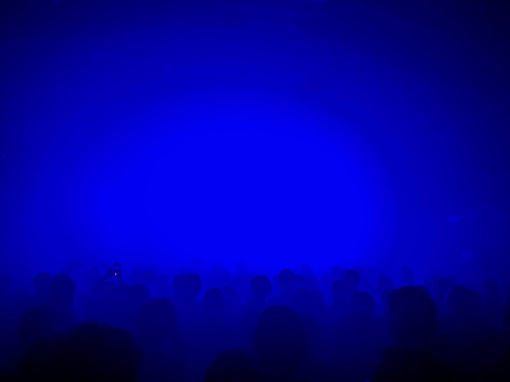
Riant sur le plateau d’Œchalie, trois tremblaient sous trois chapeaux: magenta, vert et magenta. Ils se faisaient porter à dos d’âne loin du temple, pour aller jouer en bas à sauter de l’âne, à amadouer la bête qui ne se lassait pas de porter le poids infime de sa dette. Ils sautent de l’âne avec une grande faim et mesurent la faim avec l’âne, et à la fin ils remontent, lentement, sur le poids de l’âne. Au large du temple, ils virent (de la mythologie privée et dans ses prémices qui ferait parvenir cette histoire, en se purifiant, jusqu’au temps présent) se dresser une pénitence ou une libation qui perçait entre les colonnes, par dehors, par dedans, comme un oiseau de roche. Un homme, avec une de ces caméras à manivelle, marchait seul, marchait et écoutait les inflexions de l’âme, et visait, et les enfants répétaient la jonglerie cinétique qui embrasait les lignes horizontales du temple, et faisaient signe, avec l’haleine délirante de l’âne. L’homme grec, selon la coutume, enroule toute la brume dans une casaque et sort du film, abandonnant les enfants qui avaient spéculé pour lui, dans la contemplation implorée, le sens moteur de ce temple qui allait déchoir sous le vent des siècles, ou croître vers chaque forme de la nature de ses éléments, jusqu’à l’unité, au sphéristère.
C’est sur les terres du pélagos que réapparaît le nuage qui engloutit les sujets avec leurs cithares, nuage qui ne transcrit pas, qui agit substantiellement comme un astre qui octroie la vision à condition de ne pas être fixé, sinon par ses objets, par l’attraction de son poids. De même que le soleil est mimique, le fracas continu est mimique du soleil, la lapidation imite l’unité vers le dedans comme quelque chose qui se veut soi-même enfui et remue le vital, principes que la ruine qui l’avait fait lui avait déposés. Le tambour retentit continuellement à travers une phase blanche d’accordage, qui dure presque toute la scène, et toute l’harmonie se voile quand surgit le silence noir, abandonné d’un solennel nuage ecclésiastique (vert, magenta, vert). L’homme grec, dans les jours qui précédèrent l’affliction, songeait à sortir la tête (de l’égide), et à écouter la rage originelle (de la pierre), et à chercher les bêtes griffonnées et les mains qui, avait-il toujours entendu dire, couraient parmi les mers carboniques du Péloponnèse. Il nous a laissé par écrit: «Les terres, et dites-le à vos pères, ont déjà été salées; on leur a arraché les épines; le soleil pourra enfin les relever si l’on obéit à son ordre de ramification; les regards unissent les peuples dans la mort du soleil; la faim ne ronge que dans les recoins de cette mort». Je transmets ces paroles en voie de purification, comme les enfants me l’ont appris; et que des aliments naissent dans vos bouches.
lim_{n→Ω} Saints Abstraits(n) = ∞ ⊃ {Rhône (Fleuve), Festa Major de Gràcia 2026}
par GM
«Et si les paysages étaient des promesses et non des faits?»
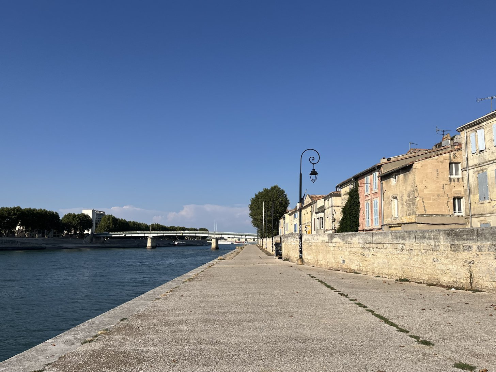
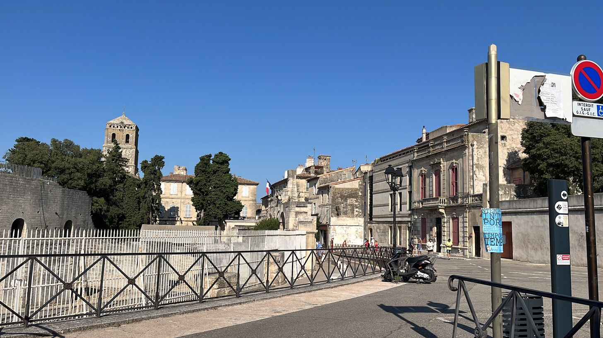
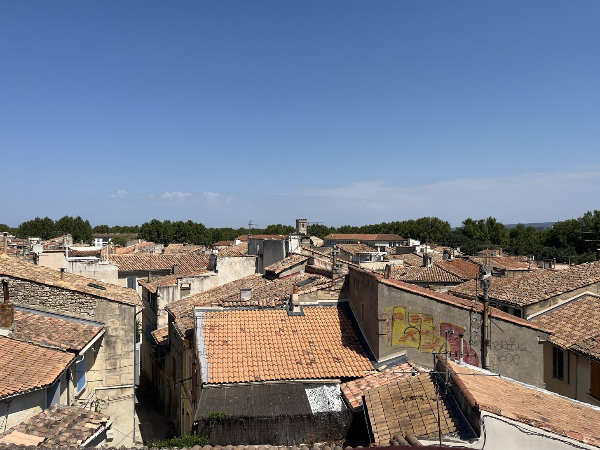
Nous y allons sur la foi de la savate, pour franchir des amphithéâtres à des hauteurs plus propices. Restent les souvenirs d’une maison bleue, d’une jaune et d’une verte, au bord de l’eau: heureusement que nous avons renoncé à l’enfance en faveur de cette lutte, tellement plus gratifiante que le silence de la naïveté.
Et vous? Vous avez toujours attendu la mort pour pouvoir vénérer l’image de quelqu’un (cf. la malchance de l’image). Le passant s’en va sur le pont céleste, tout vaniteux, parce que tant qu’il respirait, il n’était qu’un de plus. Désormais durchaus phantastisch und leidenschaftlich vorzutragen, jusqu’à ses pas ouvertement titubants, ils deviennent pragmatiques et susceptibles d’être justifiés… cette figure inexorable, un fleuve à 150 sverdrups ou Schumann qui vénère Beethoven à titre posthume ou le reggaeton que dansent les cadavres et les rires au déjeuner d’après, la fin.
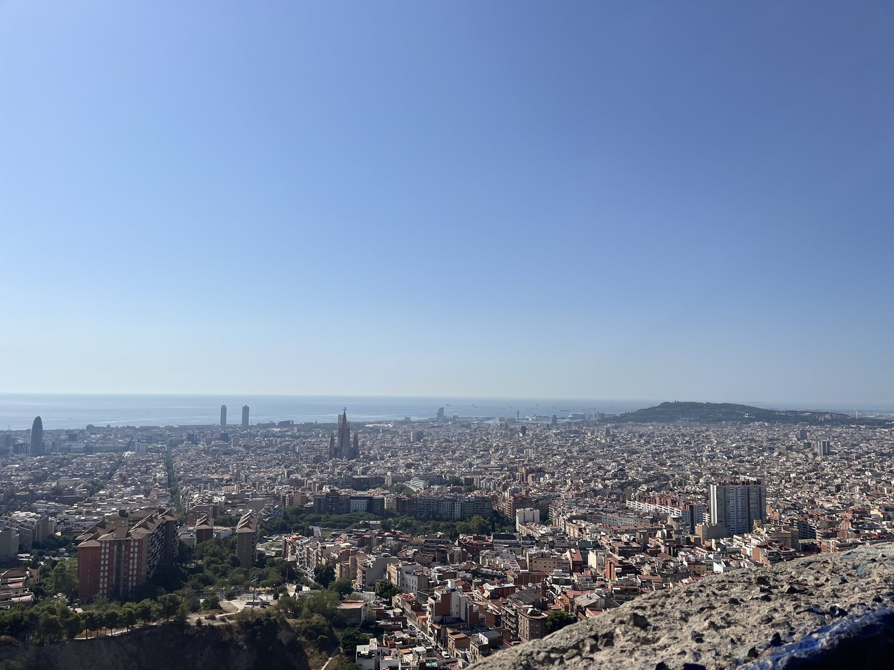
Nos complexes psychanalytiques ne tiennent pas tant aux figures paternelles et maternelles, ou à leur éventuelle absence, qu’à des abstractions comme l’Image. Des équations à résoudre, comme: pourquoi l’image nous a-t-elle abandonnés? Il s’ensuit que nous devons construire la vie sans l’image et développer de nouvelles conceptions des apparences, des exhalaisons, des idéaux, bref, toute la vie intérieure, que l’humain, avec tout son urbanisme cérébral fanfaron, a fini par créer génétiquement… la nostalgie du Cryptozoïque! Période historique qui, du reste, correspond à environ 90% de l’histoire de la Terre, ce qui équivaut à un jour de notre voyage sur le tapis béni d’ambre et d’écarlate.
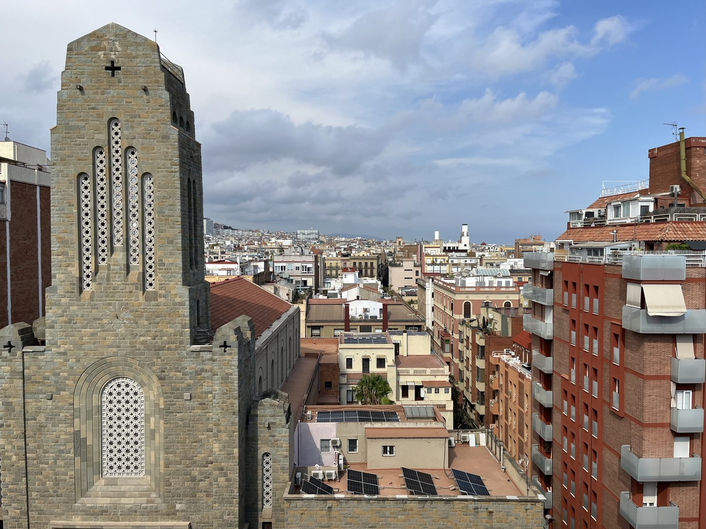
Observer les statues dans les magasins, les restaurants, les supermarchés et les bus, des humains dans les laboratoires du quotidien, des dioramas oubliés. Heureusement nous n’avons pas les obligations des scientifiques, les pauvres, avec leurs bourses, leurs recherches forcées, leurs publications à chaque seconde, l’inceste académique et les bêtes qu’on tue pour des tests comme s’il s’agissait de croissants. Nous pouvons improviser par-dessus la ligne qui va d’un pilier à l’autre, du Soleil à la Lune, du Salon des Mille Intrigues au Cimetière de la Béatitude. Il y a ceux qui appellent cette ligne simplement El Ródano (en français Rhône; en occitan: Ròse; en franco-provençal, Rôno; en allemand, Rotten).
De même, à mesure que nous nous éloignons du jet de notre courant génétique, nécessairement l’étrangeté augmente et, par conséquent, la bienveillance d’autrui diminue. Même si les paysages alentour attirent, ce n’est pas n’importe quel moine qui établira le contact avec des entités extérieures. Il traîne la porte et claque les fenêtres dans un effort pour expulser civilement les étrangers. Ainsi se laissent-ils porter par la rosée sacrée qui laisse toujours sur sa faim mais qui suffit pour rester dans la lutte en faveur de l’image inconnue.
Quoi qu’il en soit, jamais le temps ni les saisons elles-mêmes n’effaceront notre estime. Tous les morts étaient nos amis et ils le resteront: comment expliquer ce fait à ceux qui suivent les rues comme si les immeubles les tenaient en laisse? Nous, imaginez-nous comme des chats abandonnés qui se reposent sur les tombes. Bien sûr, les chats sont trop faibles pour supporter la nouvelle chaleur, alors ou bien l’ombre les sauve, ou bien la nuit tombe soudain et, quand ils s’en rendent compte, il est déjà l’heure d’aller se promener et de faire la reconnaissance des rues qui chaque jour sont oubliées et de nouveau embrassées, tout à la manière des vieilles amitiés qui surgissent au coin de la rue avec toutes leurs couleurs et leurs ailes à partager.
Ἡρόδοτος, le créateur du faux, appelle. Ryszard Kapuściński, le maître subconscient des faussetés, poursuit. Baalu Girma aide à l’avertissement de notre progrès. Dante veille, dans la Grotta dei Falsari.
La Piazza Santo Spirito, de l’autre côté du fleuve, celle de la vraie Florence, avec toutes les touches et tous les sols qu’on voudra. On m’a dit qu’il fut un temps où les adolescents jouaient, sans mauvaises intentions, avec les sans-abri. Que beaucoup de jeunes se sont liés d’amitié avec les vieux et que, même après avoir quitté la maison pour aller trop travailler à Milan, ils reviennent sur cette Piazza échanger deux mots avec les vagabonds en question, désormais désignés par leur vrai nom, barboni; jusqu’à l’orgue de la petite basilique où nous nous agenouillons qui s’en réjouit. La Piazza totale des possibles, où les barboni sont les bons, vrais partigiani des années 90, et les carabinieri, eux, les méchants. Comme si la Piazza était une humble synecdoque de l’humanité, chose importante pour nous puisque nous croyons au mal intrinsèque et à la souffrance garantie qui ont toujours traversé l’existence dans cette dimension. Firenze est pourtant la preuve que même cette méchanceté, parfois par le mécénat, peut donner des résultats exceptionnels et durables… qui ne sont malheureusement plus aujourd’hui que du mobilier urbain. Dans cette nouvelle logique, un musée n’est rien de plus qu’un feu de circulation et une cathédrale une route, et ainsi de suite. À la prochaine guerre, cela changera sans doute. Espérons donc qu’elle ne tarde pas à venir.
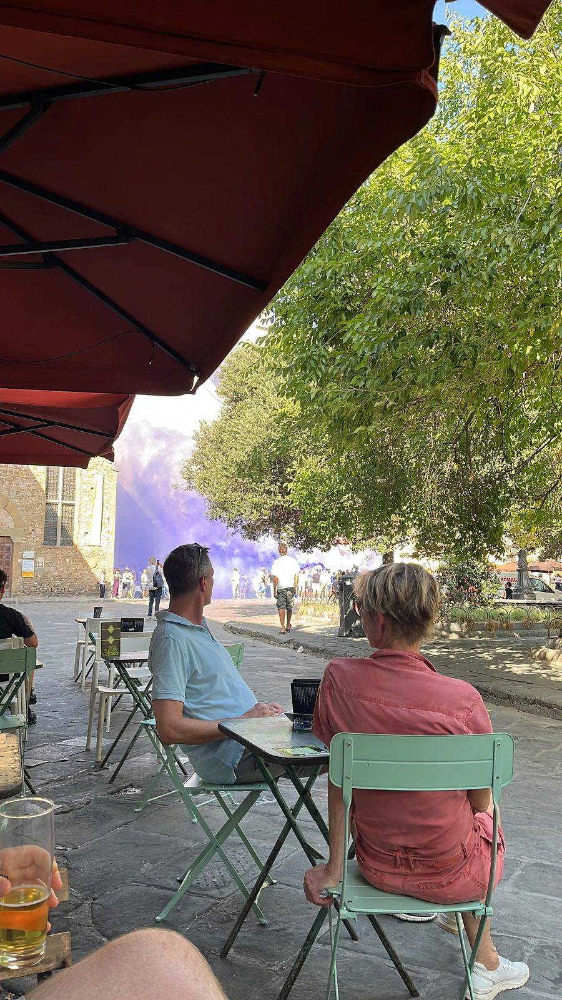
Le serpent qui garde le pont change le sang maudit en feu; et ainsi l’économie se refuse à regarder tous les inutiles qui passent un cierge à la main, pour voir si elle donne le change, pour voir si le serpent ne sacrifie pas ces prétendus embrasés.
Pendant que ces processions se déroulent au long des siècles, beaucoup de scribes relatent les horribles merveilles dont ils sont témoins, comme si de leur plume venait la plus gentille vérité; tu fais des tours de lune, fais mille tours de lune et voilà ta vérité. Mes enfants, regarder autour de soi, même un sanglier en est capable, mais discerner les plus infimes palpitations de notre pompe à sang, voilà une tâche qui dépasse la modestie des journalistes, qui, du reste, ce qu’ils aiment, c’est la fête.
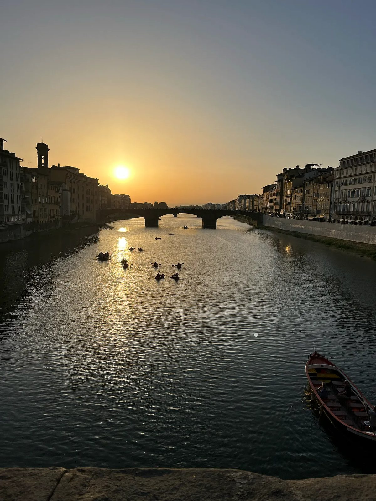
La véritable économie se déroule dans les bas-fonds, les vrais agissent submergés, c’est pourquoi nos parole ne sont pas immédiatement évidentes. Si cela passe déjà par le vieux pont de la rationalité, rappelons-le, tout porte à croire que c’est faux. S’il faut passer un cierge à la main, la toge sur le corps et non dans la bouche, invariablement, c’est un travail de gens usés.
Plus encore, si le dieu que l’humanité a créé, vulgo IA, produit des textes comme on rote dans une rédaction, et avec bien plus d’objectivité, quelle supériorité morale ledit journalisme peut-il avoir? Ces zigotos suivent même des guides de style que l’IA porte déjà en son cœur. C’est que, d’un point de vue cannibale, c’est un gaspillage absolu de viande que de faire une chose que la machine fait avec un effort minimal. Mais n’ayez crainte, vous ne serez pas mangés tout de suite, très chers scribes gorgés de manque de dignité, car tout ce projet défend le pas suivant, à savoir: le reportage humain, la description humaine, le récit comme poésie et, d’ailleurs, l’idée que la seule forme de poésie nouvelle soit le récit. Seuls les possesseurs d’un potager de vérités fondamentales comme celles-ci comprendront l’urgence du nouveau registre.
La seule condition préalable est qu’ils se rappellent ce que c’était, exister; c’était comment, au juste? C’était sans vêtements ou quelque chose comme ça. C’était sans murs. Sans visages. Sans souvenirs, parce que le temps, c’est nous qui le faisons, et en tant que tel, c’est une délicieuse abstraction de la conscience. Si seulement c’était un médaillon qu’on lance, et le temps s’en va et nous allons le rechercher, mais non, il ressemble plutôt à l’air. Seule la loi nous éblouit et nous réchauffe; le temps n’oblige à rien, il ne finit jamais pour n’avoir jamais commencé, simplement, le temps se respire. Des marches atomiques dans les archives de la nature constituent le meilleur catalyseur d’une certaine accalmie, et le temps remercie d’avoir été bien passé.
Le 9 juin 2026, QV a eu l’occasion d’assister au concert de Beverly Glenn-Copeland à l’Auditório da Reitoria de l’Universidade NOVA de Lisboa, sur le campus de Campolide à Lisbonne, lors d’un concert organisé par la ZDB.
Le Mystagogue de la Légèreté - Beverly Glenn-Copeland @ ZDB
par GM
Un royaume, ce sont cent royaumes.
Le sac en plastique déchiré que nous traînons dans une valse lente sur la route qui fond laisse déjà glisser l’œuf cosmique, qui a toujours été assez fragile. Même avec la force d’un atlante, nous nous mouvons à l’opposé de la stridence habituelle, et de telles contraintes brisent n’importe quelle coquille. Tout cela pour dire qu’une fin de vie prématurée est garantie à qui oublie la hiérarchie naturelle des anges, c’est-à-dire nous tous, qui avons abandonné la tradition orale.
Sauter à travers 10 sphères et atteindre la grandeur… il suffit de chanter. Il faut, cependant, bien garder à l’esprit la conception moderne des runes, des glyphes et des symboles imprimés, conjurer d’autres choses au-delà de l’actuelle cage terrestre (qui sait, peut-être y a-t-il une carte de la lune quelque part), un royaume, ce sont cent royaumes. La peur de subvertir l’esprit mortel, créer une campagne non linéaire: pour subjuguer l’humanité, il est impératif d’être sous-humain. L’autre côté de la guerre biologique: la vie n’est plus dictée par l’étoile sous laquelle nous sommes nés. Le secret est donc de moins tirer parti du monde. Sinon, nous serons nés esclaves, sans conscience de la technologie qui forme notre personnalité. Ainsi se perdront les enfants de la lune.
Pourquoi partagerions-nous des choses qui causeraient de la peine (principe fondamental du journalisme, ne l’oublions pas) avec d’autres êtres vivants aussi pourvus d’empathie que nous? Ici, parmi les mortels, ce n’est qu’en renonçant aux mauvaises choses que l’on pourra atteindre une certaine légèreté dans le pas. Sinon, l’esprit lui-même travaillera contre nous jusqu’à ce que nous prenions racine, de ces racines qui atteignent le noyau de la Terre. L’enfer est une certaine amplification des mauvaises nouvelles qui nous entourent chaque jour. La vie est et sera toujours l’aboutissement de toutes les pensées tant que nous serons vivants. Il faut transmuer l’anxiété en force. Comme nous l’enseigne Beverly Glenn-Copeland: chanter l’apothéose de la légèreté. Nos ancêtres entendaient les voix divines marcher dans le jardin à la fraîcheur du soir. Peut-être ne parviendrons-nous jamais à revenir à cet état de grâce de notre vivant, mais c’est là la vision radieuse à la lumière de laquelle nous devons vivre.
Crédits: Beatriz Pequeno / Avec l’aimable autorisation de la ZDB.
Visões (x) - «Toute une acupuncture de scènes, de lieux et de qualia aussi inhospitaliers que le monde primitif devenu notre cœur»
Des visions récurrentes d’autrui dans un petit tunnel, des néons couleur grenade circonscrivant le malheur que plusieurs foules croient possible, racailles collectionneuses de phénomènes de la nature avec la même facilité que les tantes commèrent à l’ombre. Il faut prévenir le regard lourd des croix bleu tilleul, ruines qui ont cessé de servir des sourires de poussière derrière des fenêtres anonymes et millénaires. Qu’on l’entende bien: cela fait déjà bien des siècles qu’on tire des charrettes, qu’on parle au téléphone, qu’on gifle des Phéniciens, et puis qu’on revient développer l’alphabet glagolitique, bref, toute une acupuncture de scènes, de lieux et de qualia aussi inhospitaliers que le monde primitif devenu notre cœur. Même le bois a déjà été expulsé, il ne reste qu’un plasma qui provoque de constants stigmatas tandis que nous observons le ciel innocemment, aussi rieurs que les oiseaux dont nous croisons le regard.
Puissions-nous, passés tous ces éons, nous être largement familiarisés avec les potentialités mathématiques des visions, simplement nommées Visões (x): une série de couches de souvenirs de visages, déformés ou soudain illuminés. Les visions s’ajoutent les unes aux autres de façon fractale, telle une somme qui ne se résout jamais, quelque chose d’ineffable, donc. Une autre variable, peut-être, pourrait être la lumière du jour filtrée à travers le subconscient, avec encore, comme autres paramètres possibles, l’état de l’observateur, l’angle du regard, l’ouverture du cœur à la distance de la perte. Exister, c’est cela, un détour par les coordonnées des visions, toujours une et une autre et des millions d’autres qui apparaissent et s’évanouissent et simultanément se confondent avec celles d’hier. L’infinité visionnaire ou les visions infinies, Visões (x). Nous ne pouvons nous empêcher de mépriser ceux qui se nourrissent normalement de protéines et de choses de ce genre, car le goût des visions est effectivement ce qui pousse une jambe devant l’autre, des visions plus fortes et plus efficaces que la gravité et pour l’instant hors de portée de la technologie; perturbées peut-être, mais chichement exploitées. Quelque chose qui n’appartient encore qu’à l’humain, les visions et leurs possibilités adjacentes. Les fameux châteaux en Espagne, la cathédrale engloutie, l’envie d’avoir et d’être pour le seul goût de l’envie, parmi bien d’autres sédiments émotionnels. Les vertes inconnues dans une journée planifiée de départements, et les Visões (x) comme des ruptures princières.
Supposons un horizon de gens, un quintette qui enfin, après tant d’attente, sortait du pénitencier, tronc qui calibre ses propres viscères, les mains plus froides, des mains qui là-dedans bouillaient face aux décennies et morcelaient les habitudes. L’indolence. Les neiges dépérissaient sur les dernières ramures. On attend toujours un arpège de vent renouvelé, propre à cette phase, longtemps couvé dans le corps incarcéré. Le vieil arpège, imaginons donc. Tout est pareil, le pays est le même. Les charpentiers se sont contentés de faire progresser les villes, c’est-à-dire: de regarder les arbres être étirés depuis leur racine pour passer par une série de mouvements réformateurs, le cauchemar utilitaire, et s’incruster dans la trame domestique. Pauvres langages. L’air ici dehors, le même qu’avant, est aussi le même que là-dedans, glacé. Un plateau de plastique et un plan lacustre, par une vue limpide, par une abondance jetée dans le moule, tout est si déchiré, cette terre et les terres qui la mouillent, qui se déversent par la pluie pour compliquer, abstraire le chemin. Le contraire. Disons qu’elles octroient le sommeil, mélangent. Il y a les vies, qui reviennent frapper aux portails et finissent par se tirer les unes les autres. Nous ne t’entendrons plus jamais, pensent-ils ensemble pour chacun.
Avec le temps ils guériront de leur renoncement, en prenant de petites verticalités: les allumettes, les forêts qui pointent aux virgules d’un élan, l’ombre raide de la femme devant les barbes, la pente de la gouge. Quand ils sortent, ce qu’il faut faire, c’est s’assurer que l’abandon demeure. Non, je pense à me réveiller sans un œil. Procédons par ordre. Abattre la masse arborée, ça oui, nourrir la caserne. La masse informe des bouleaux, oblique pendant que je bois, fait ainsi allusion à son usage final: de la maison d’autrui monte la vapeur roussie. Je me déshabille. J’étends un sol d’échardes. J’ordonne les passages entre les différentes pièces. Travaux. Je reviens d’un côté à l’autre, à revenir pour toujours à chaque pas, là où l’on m’envoie. C’est ce qu’on peut imaginer. Ils suscitent seuls dans une barque, dans les fentes d’un lac, le fratricide.
Rien de tout cela n’est plus que de la géographie, on ne peut concevoir un autre Homme. On peut concevoir une suppression du sang qui frémit dans le marais, en gouttelettes. Des fruits que la bouche ne peut atteindre que si elle accueille déjà elle-même l’acidité voulue. Des fruits d’une conservation des corps par la mort, justement, les frères ou les cousins au corps pétrifié dans l’agonie, glaciers, coupés par l’horizon fauve de minuit. De cela je me souviens, d’une plaine glaciale, d’un miroir imparfait qui plie le monde, copie de lui-même. L’apparent. La sueur abondante qui offre les champs dans son avancée, ou le vent qui déplore l’impossibilité de refroidir un corps. Oubliez la liberté conditionnelle, les signes de la main à la sortie, et pensez à la peau incarcérée et aux expressions prudentes, aux paroles sobres ou sordides selon, aux gestes anguleux. Un vieux bûcheron nous reçoit sur une grande île et range ses armes. Au-delà de la lisière du bois, personne ne passe, personne ne surgit. On ne conçoit pas d’être fils dans le bois. Nous sommes nés ici et le corbeau nous emmène aux latrines, nous jouons aux gramophones. Nous ne revenons sur l’île que pour faire une nouvelle maison, qui n’est ni celle du fonds ni celle de la ville, c’est une autre, faite d’un bois pourri dont l’exil ne demande qu’une main ferme. Légère comme elle flotte, d’un élan récidiviste, cette terre. Un regard réhabilité se tournait vers moi cet après-midi-là et se méfiait, regardait avec interdiction. Expulsé, chassé vers le soleil de la nuit, vers le ventre de l’amitié, vers l’image de la latitude septentrionale féroce, vers les années vierges du sacré, vers ce qu’il y a ici d’antérieur, confiné dans les auberges, dans l’alignement, dans le chant des oiseaux, dans le rocher en pointes, vers la disposition creuse des lieux. Question hautaine: où en est la faim? Arbre, gallinacé, huile, plâtre arrivent au port dans un conteneur fatigué.
Saints Abstraits #3 @ Rua de Arroios/O Arraial Que Deu 06/06/26
par GM
Les Feuilles et Leurs Manières - La Texture de la Vibe - Gamins et Panpsychisme - Inconstance des Procédures de Laboratoire - Mythes d’un Techno-Avenir - Triste Geo-Engineering
Parlons d’un charme hyalin sous-estimé qui définit le protocole des feuilles, apparemment si mielleuses, quand elles se penchent les unes sur les autres et, de là, sur la terre. En tant que wieszcz, notre logique soutient que les feuilles s’imposent plus catégoriquement qu’elles ne se laissent emporter. C’est que, loin d’être un processus stochastique, la chute des feuilles est une équation facile à résoudre, soit pour quelque scientifique mystique qui ose discerner des motifs dans la nature, soit pour qui se promène les côtes à l’air, sans la triste peau pour le protéger, le cœur ainsi exposé au bien, au mal et à l’éternel. De telles figures portent en elles la même proportion de sagesse intrinsèque à un savoir faire que les autres passants de cet Anthropocène choisissent finalement d’ignorer.
Sans blague, quand nous étions gamins, nous nous demandions comment prévoir le mouvement des vagues, les trajets des nuages, déterrer des axonométries des racines, tracer la chute des feuilles. Un panpsychisme latent, comme en ont tous les enfants et qu’ils méprisent aussitôt face à des lèvres sceptiques. C’est plus qu’imposer notre vision du monde à l’écosystème, c’est essayer de la comprendre à notre manière, par motifs ou par textures. C’est en même temps laisser la porte ouverte à la nature et à l’humanité, holistique, comme on s’obstine à dire. Une pause, et l’on entend comment les arbres pensent avec nous et sont assez critiques de la conjoncture politique actuelle; ils détestent même le journalisme, qu’ils considèrent comme du papier gaspillé en commérages (car la politique n’est rien de plus que des commérages pour adultes, disent les arbres), et estiment que le papier ne devrait être pénétré par l’encre que si l’encre est répandue de manière à former de belles paroles dans une magnifique construction de phrase, baroque ou libre, peu leur importe. Les arbres préfèrent le beau, le pur. N’ayant pas l’esprit large, ils n’aiment que ce qui leur ressemble, et convenons qu’ils sont éminemment purs, dans toute cette imperfection et ce mélange de couleurs.
Dans ces feuilles tombées, les garrettiennes, nous avons de putatives équations sociales qui jouent un rôle tout à fait analogue. Il est aussi possible de prévoir le mouvement des petites masses, que ce soit dans un environnement contrôlé (toujours pace Latour, Feyerabend, o sea, pleinement conscients de l’inconstance des procédures de laboratoire), i.e., dans une rue fermée où la musique sert à la fois d’appât et de prison, avec à manger et à boire tout près, ou au contraire sur ces axes de monumentalisation du pouvoir, la Karl-Marx-Allee à Berlin, le Bulevardul Unirii à Bucarest, les avenues haussmanniennes de Paris ou les Gran Vías construites dans toute l’Espagne. Dans ces différents urbanismes on contrôle bien la populace, ce ne sont pas des villes de prairies. Ce sont des réseaux pour citoyens, ce qui est bien différent d’humains.
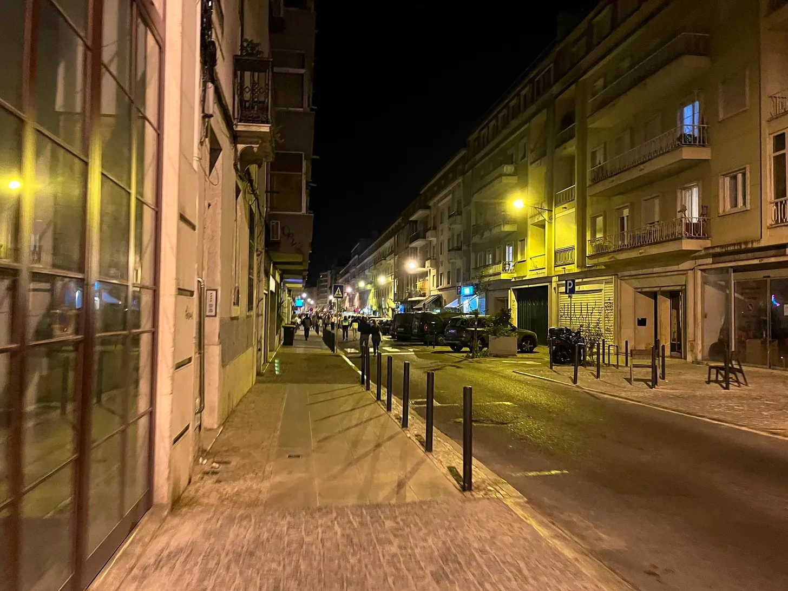
Quels que soient les enchevêtrements qui se créent dans certaines situations sociales, il suffit d’être entraîné à la spontanéité calculée de la nature et il devient donc facile de prévoir les vibes. On y ajoute la susceptibilité humaine naturelle à la route tracée (celle qui mène au plus grand espoir, comme nous l’abordons dans Saints Abstraits #2) et l’on contrôle la vibe. Quand toutes nos données seront enfin et inévitablement dans la Mère-Nuage (amusant, le parallèle mythique entre les histoires que vendent aujourd’hui les technologies et celles qu’on vendait aux cultures d’autrefois; il ne serait pas compliqué d’analyser les récits techno-optimistes/techno-féodalistes d’aujourd’hui et d’établir des comparaisons, comme le faisait l’anthropologie structurale, avec des mythes d’autres terres, d’autres gens et d’autres temps), disions-nous, la Mère-Nuage, il sera même possible d’anticiper où quelqu’un pourrait vouloir aller se promener par une nuit soi-disant au hasard.
La grande crise des grandes crises annoncées: qu’il nous soit impossible de rêver de calculer l’incalculable, la force motrice de la vie. Que le trajet des nuages soit geo-engineered, que les racines soient terraformed, la chaleur reportée à l’échelle continentale. Que les feuilles continuent de tomber de façon prévisible, mais que quelqu’un de moins innocent raisonne sur elles et les ramasse avant qu’elles ne craquent d’elles-mêmes. Que, finalement, la vibe soit contrôlée et non, allez, rhizomatique, comme il faut.
Pourquoi les vélos de Lisbonne, vulgo «Gira», fonctionnent-ils aussi bien que mal? Peut-être est-ce là la nature répréhensible de cette ville: ne pas s’enclencher autant que nous le voudrions, l’appli provocatrice du vélo qui adore marquer un temps d’attente, les escalators vers le Largo da Rosa qui ne fonctionnent qu’à partir de la moitié; l’infrastructure se veut incompétente, à moitié détruite ou simplement inachevée, des vies forcées de ralentir, comme pour nous rappeler sans cesse que la vraie perfection (vraie parce que la seule que nous connaissions) est anarchique, i.e., notre manière d’être parfaits est justement d’avaler mille plaies de crapauds et de les dire beaux et parfumés et qui sait, peut-être même salés.
Les crapauds… nous voulons dire, les êtres humains, se baigneront toujours dans tout l’espoir possible, celui de beats totalement dévastateurs qui font chuter la tension, ou de palais aux paons qui se promènent dans leurs méandres, ou d’un monde fait entièrement de plages, ou d’entrer par quelque portail géant qui surplombe des fleuves rouges de douleur et dont on ressort la vie faite, les dés jetés, ayant déjà sauté par-dessus l’ignominie et accédé à l’aristocratie, sans effort.
La nuit joue un rôle crucial comme catalyseur de cet espoir, où la possibilité erstwhile se transforme soudain en état de choses; les thermes d’un «peut-être» contre le geyser de la vie univoque mais étrangement multipolaire, à savoir: savourée de toutes les manières et vécue en une seule nuit. C’est faux, pourtant, c’est une fausse vie d’une seule nuit, comme si du jour, enfin, il ne fallait même pas parler parce qu’il ne pourrait jamais se comparer à la nuit. La nuit serait-elle donc aux lâches? À ceux qui préfèrent l’illusion au sommeil mérité? Au risque de tomber dans l’évidence, mais qu’on le dise avec fierté: la nuit est à qui dort et le jour est à qui vit.
C’est pourquoi tant de gens dansent, et dansent tant, que ce soient les mille salsas du pavé ou l’épaule qui touche l’épaule qui touche l’épaule qui touche l’épaule et qui finit par atteindre la scène. Appelez cela l’éther (au sens classique) qui fait bouger les corps et cetera en guise de catharsis. Nous jugerions plus juste que ce soit l’espoir le coupable du bonheur de toute cette belle cohue. Cette marâtre, l’espérance, condition sine qua non la vie n’est pas possible. Qu’est-ce qui relève quelqu’un du sol deux fois de suite, sinon le fait de savoir que ces éternelles caméras que sont les yeux veulent encore surveiller et picorer un peu, traiter toute l’énormité des phénomènes qu’embrasse notre existence? Pourquoi attendre que l’appli du vélo se rafraîchisse, si ce n’était pour anticiper déjà le vent, non pas qui frappe le visage, mais qui coule avec nous, qui facilite le vol qu’apprécie tout cycliste. Qu’est-ce qui réunit tant de livres (car les humains sont des livres) de tant de cultures distinctes sur une place à moitié rénovée et aux trois quarts pourrie, sinon le fait de savoir que ce qui attend de l’autre côté du portail, ce n’est pas toute une lumière tendre, mais c’est, malheureusement, l’absence complète d’espoir.
Ou ça, ou ils sont juste venus pour la bonne musique.
«La présence en tant que présence s’empare de l’air, une joie interminable de partage s’y répand.»
Parler allemand est un art surnaturel, tout comme remuer les épaules de la façon la plus maladroite, et de là on égratigne le simple caractère autant que les lumières dansent sur les accordéons. Si quelque chose n’est pas traditionnel, soulignons que nous le rendons traditionnel; on respire les regards angéliques, les chandeliers qui haletent par le cou, et les couples de danseurs ont au moins quelque 100 ans? À peu près. Au plus, ils sont jovialement éternels. Avec les saints eux-mêmes, nous tournons bras dessus bras dessous, nous faisons des petits trains de joyeux fantômes et nous suivons aveuglément et activement autour de la fontaine. Ainsi sont morts beaucoup de danseurs, mais voyez tous ceux qui ont transcendé. Malheureusement, convenons-en, il y a une certaine organisation, d’accord, mais seulement dans la file pour la bifana, où nous retournons les sardines des yeux et digérons tout un tourbillon d’opinions sur la quantité appropriée de moutarde dans la bière. Oui, à la Praça da Alegria, la moutarde ne va pas dans la bifana et la viande est mise dans un gobelet. On ne comprend qu’en entrant sur la place, et là tout prend sobrement d’autres contours. Qui tremble perd et qui accepte vole. Qui vole parle allemand comme si de rien n’était. On exprime le delta lisboète avec une telle efficacité et une telle rigueur scientifique que les étrangers ou les expatriés eux-mêmes absorbent en un clin d’œil la culture lointaine et ne peuvent pas grand-chose face à la supériorité naturelle du dialecte de leurs nouveaux amis. Enfin, disent-ils, on sent l’espace, le sol n’est pas que du plastique, la beauté inhérente aux fêtes communautaires devient évidente et l’on voit aussitôt plus que des individus séparés qui décollent vers une autre dimension que celle où ils se trouvent. La présence en tant que présence s’empare de l’air, une joie interminable de partage s’y répand; quelque chose qui est entré avec nous et ressorti avec nous.
Le 30 mai 2026, QV a eu l’occasion d’assister au concert d’Odd Okoddo & Ogoya Nengo à la ZDB.
L’Âge du Son - Odd Okoddo & Ogoya Nengo @ ZDB
par GM
Nyege Nyege ébranle les diplomates.
Certaines questions ont le don de nous mettre à l’agonie, de causer des insomnies persistantes, rageuses même, de faire éclater le lit vagabond, des lits où l’on dort avec le diable qui ne laisse même pas dormir et, pire, des oreillers claustrophobes. Que de rage à ces heures-là pour faire jaillir les plus belles et les plus variées des controverses: le soleil apprécie-t-il d’être caché par les nuages? La mer pourra-t-elle un jour, tout entière, lâcher la terre et planer? Quel bruit fera la terre à la fin des temps? Et sera-t-il possible d’établir une relation de causalité entre ce son et le tout premier? Quel est l’âge du son, d’ailleurs?
Le son, ce plan intérieur vivant. Une composition abstraite orale qui s’exhale sans grande considération, automatiquement, transmise jadis par nécessité et aujourd’hui par bêtise. Le premier son aura-t-il été un bouillonnement sournois de quelque roche effrontée? Ou plutôt de quelque microbe, de ces êtres plus ou moins vivants qui habitaient la terre en ces temps prélapsaires, en pleine activité de petits mécaniciens sensibles aux éons perdus. Ou peut-être de simples ondes de pression se propageant à travers des fluides de photons. Il y aurait sans doute même moyen d’obtenir un instantané figé de ces oscillations acoustiques d’échelle cosmologique, combinées pour former une sorte d’accord primordial. Beau, mais c’est un mensonge, pour nos oreilles du moins, qui ne savent même pas traiter la musique des sphères. Nous nous contenterons de l’accord wagnérien de Tristan. Du reste, peut-être le noise (justement parce qu’il n’est pas de la musique à proprement parler) est-il la forme de musique qui représente le mieux l’existence, autrefois comme aujourd’hui.
Pour faire la généalogie du son, il est impératif de remonter le temps et de localiser les premiers émetteurs, ce qui n’est pas facile vu le prix actuel des vols trans-temporels. Heureusement, la ZDB a accès à des sources augustes où l’on se réunit et où l’on contacte des esprits, où l’on sacrifie des musiciens indie, et alors oui, elle parvient à faire venir Ogoya Nengo et Olith Ratego, avec Sven Kacirek (ces deux derniers formant Odd Okoddo). Ils sont venus tout simplement luisants, sans la moindre ombre qui les poursuive, directement du 3e Ciel au-dessus de la Grande Mosquée de Gedi, située à quelque 100 km de Mombasa, jusqu’au Bairro Alto. Sven, berlinois, a fait le lit de techno minimale pour porter jusqu’à la contemporanéité ces cris éternels, et nous avons ainsi Ogoya Nengo et Olith Ratego, des gens saints qui ont hypnotisé ceux de la cardiomégalie festive, spectateurs devenus participants parce qu’ils sont déjà des gens humbles aux cœurs grands et ouverts, pas encore éclatés par la ville et la classique humiliation quotidienne d’exister dans le miel gris de la normalité, condition préalable où tombent les gens pour ne pas avoir à succomber au puits de pétrole qu’est créer une vie depuis les profondeurs saturniennes vers le meilleur ou, pour certains, inévitable ciel. Il n’y a pas d’autre secret que d’avoir les mains comme les cœurs: ouvertes.
Le 10 avril 2026, QV a eu le plaisir de vivre le concert de Bill Orcutt à la ZDB, à Lisbonne.
L’Oracle des 3 Cordes - Bill Orcutt @ ZDB
par GM
«Qui a peur de l’électricité efface sa propre mémoire sur le mur»
Les queues du moment quittent la scène. Désormais l’épique se fait cumin, parle tout seul, et la peau, avec le temps, défaite dans le sulfurique et de nouveau avalée par le serpent de l’amitié, oublie tous les engagements. Ce confort, une telle mortalité, force l’abdication du mal.
D’ici, les cordes faites de nouveaux animaux résonnent et saisissent les distraits dont la conscience obéit aux mouvements de l’étouffement de chaque salle.
Étant d’excellents joueurs, nous avons parfaitement conscience que la guitare est l’instrument misanthrope par excellence. Il s’ensuit que la meilleure musique produite par cet instrument sera toujours souffrante, jamais une joyeuse ditty pour passer le temps, plutôt un riff colossal, de ceux où la terre s’ouvre en deux comme un tableau de John Martin et d’où sort la douleur de toutes les époques, à travers ce morceau de bois électrifié dont les cordes n’autorisent que des doigts qui pleurent.
Il est certain que quelqu’un devait rebrousser chemin par la lignée de John Fahey et Robbie Basho, William Ackerman, Ralph Towner et d’autres dudes ou dudettes tout aussi importants. Orcutt tire déjà sur une saveur et un savoir totalement 90s pour ce qui est du style de guitare qu’il emploie, et c’est justement pour cela que ça marche et qu’il lui est ainsi possible de porter cette souffrance-à-travers-la-guitare jusqu’à notre actualité.
Qui a peur de l’électricité efface sa propre mémoire sur le mur.
Et ici s’impose la question de la technique, ou de la technologie que l’on peut utiliser. Qui a autorisé l’existence de la guitare électrique? Ce ne devait pas être une personne heureuse. Ni forcément intrépide, car jouer d’un instrument en soi, c’est lâche; ce n’est jamais une bataille égale pour les intéressés, à savoir: «je fais du bruit, tu écoutes»; il n’y a pas de duel, il y a une conférence. Dès le moment où l’on a développé une musique à plus fort volume, le problème a quintuplé. Mais les vrais amateurs sont capables de surmonter de tels obstacles, et ainsi se crée la fameuse communion. Ainsi est forcée l’abdication du mal. Avec cette guitare cathartique, dont la puissance affecte les apeurés, ainsi nous restons droits, beaux et bons auditeurs. Ainsi, nous demeurons éternels.
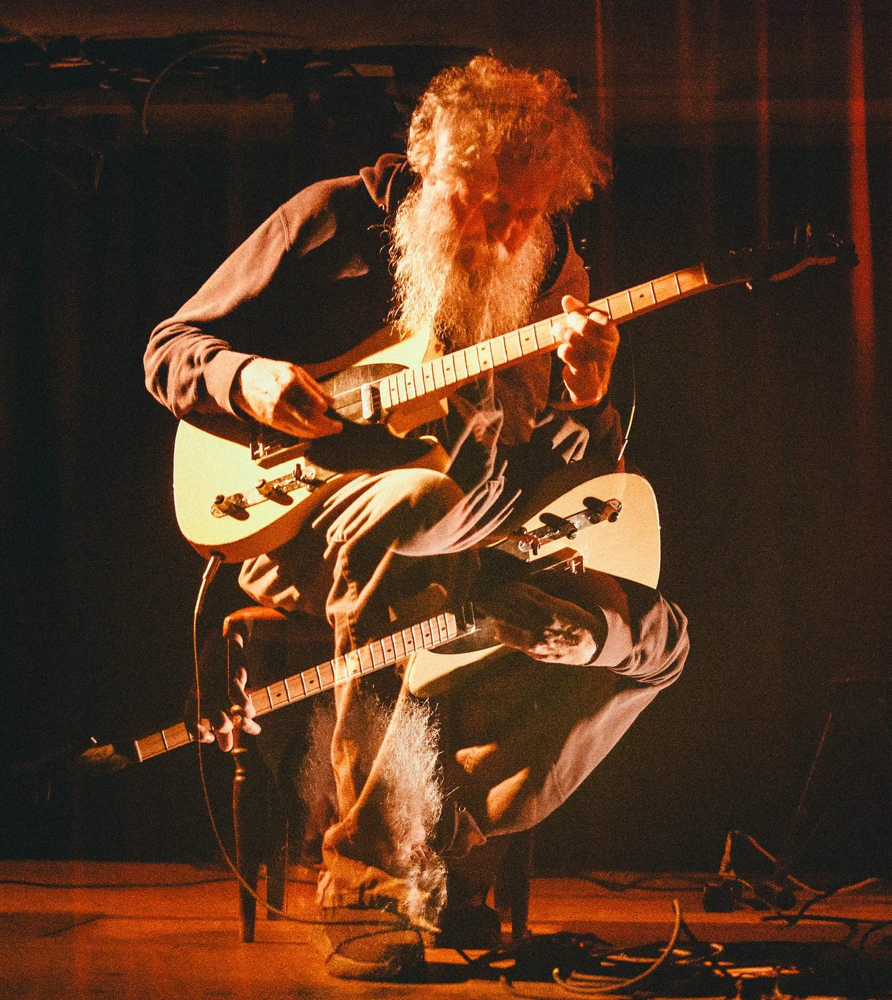
Crédits photo: Luís Pereira / Avec l’aimable autorisation de la ZDB.
Le 8 mai 2026, QV a eu l’immense plaisir de se rendre au cocktail d’inauguration de la LAAF, Lisbon Art and Antiques Fair 2026, à la Cordoaria Nacional.
Anciens Cœurs; la Lune - Lisbon Art and Antiques Fair 2026
par GM
«Notre-Dame de Marbre des Miroirs, elle n’oublie jamais, la chose vieille par excellence, la meilleure antiquité de toutes, la seule que nous avons apportée, exposée et remportée dans le coffre au centre de la terre»
Qu’on imagine une maison de la taille du monde remplie de cœurs anciens qui appellent la Lune, par une nuit jaune d’étoiles ocre (d’où jaillissent les liqueurs les plus variées). Des gens sans couleur se poussent par les épaules, par les chaussettes, par les ceintures et parmi beaucoup de passion pour la chose vieille. Cette Lune a bien débattu pour savoir si la chose vieille surpasse la neuve, puisque la neuve est impure. On n’est arrivé à aucune conclusion. Cette foire-ci a la réponse. La vie derrière des vitrines ne nous enchante guère, mais l’amour anonyme pour la chose vieille a quelque chose d’intrigant. Elle respire à peine et bouge à peine et nous dit bien: approche-toi, mais ne casse rien, et n’essaie pas de porter la légèreté des temps. Accepte que, tandis que les humains sont des zigotos éphémères, nous, les choses vieilles, nous restons; rénovées ou pourries, nous respirons.
Quant à nous, putatifs êtres qui défendent ardemment la vie, nous arrivions de la dimension où nous nous trouvons d’habitude, certains disent que c’est la huitième; nous avions pris la carriole bon marché mais puissante aux chevaux aveugles, qui, du reste, seront toujours les meilleurs pour nous mener. La discrétion est notre apanage et ainsi nous nous faufilons, vulgo pénétrons, dans le bazar portugais de la royauté désormais cachée. S’ils regardent, qu’ils regardent, avec des larmes d’or et un teint incestueux. Notre préoccupation est l’éternité, l’opulence n’étant qu’un simple accessoire.
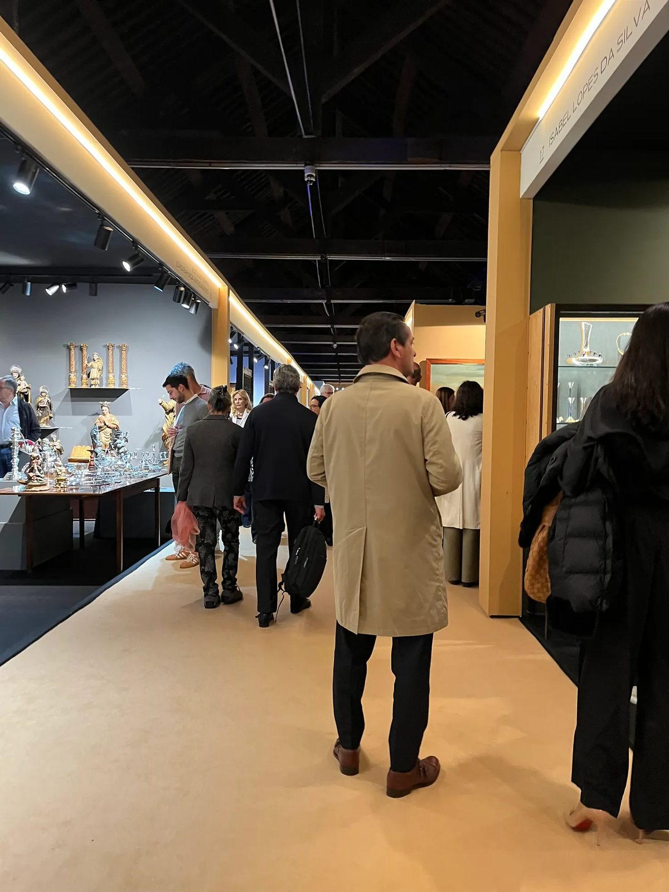
L’accident de ne pas pouvoir être fait entièrement d’or et de changer jusqu’au vin en or. Vous n’avez jamais bu d’or? Ça a le goût de l’investissement le plus sûr dans la conjoncture actuelle où nous sommes tombés sur les marchés financiers. Peut-être même la chose vieille est-elle un bon investissement, peut-être avale-t-elle de l’argent pour en rendre davantage aussitôt après. La chose vieille est donc une glu d’or. Qui se perd en préciosité ou en hésitation dédaigne l’occasion d’obtenir quelque chose de vraiment précieux… à savoir, non pas l’objet inaccessible à qui ne vend pas d’immeubles, mais bien une écume qui dore toute la réalité physique ou d’autres qui pourraient survenir; la psychologique n’importe qu’à qui a une tête. Les autres acéphales prennent des bains de lave, vivent de boire du plasma et de manger de la roche volcanique. Avec ce lifestyle, évidemment, le corps se développe et se meut comme une queue de lézard arrachée sans demander.
Nous pourrions vivre de la conversation. On passait des factures en bavardant tranquillement, les mots se chapardaient comme on fait sauter des distributeurs, et les sifflantes coupaient genre shuriken. En ce sens, l’après-midi qui vient après l’après-midi facilite tant le rond-point de pensées exprimées à voix haute que l’on a appelé socialiser. Aussitôt la merveille des individus qui peuvent regarder sans parler se change en parler sans regarder, et le regret disparaît à mesure que le bonheur croît, exponentiellement. Ici nous considérons, un peu par défaut, comme simple stratégie pour éviter la mort, peut-être même d’accepter la vie comme guère plus que cela: des conversations dans la nuit.
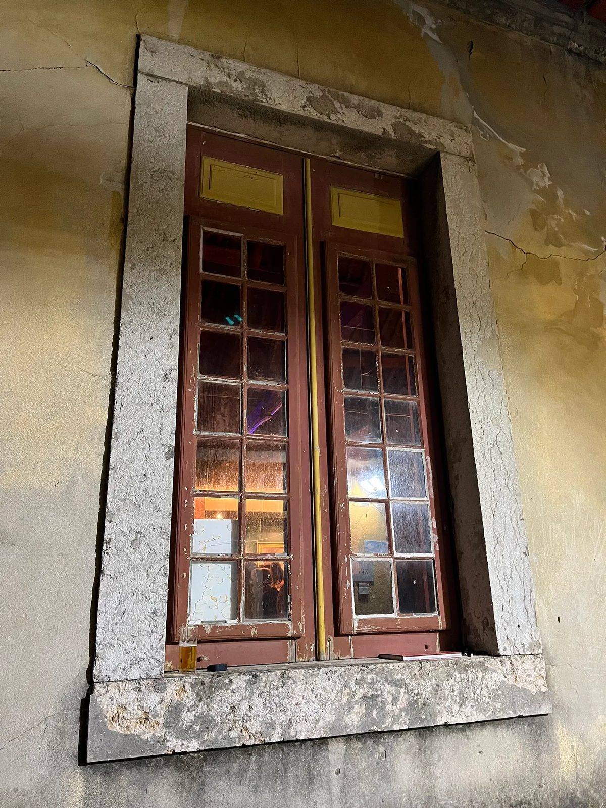
Nos poches sont restées vides parce qu’elles étaient entrées vides, mais tous les objets d’art ont disparu car nos pensées les ont absorbés, avec un dévouement inédit et crucial d’ailleurs, pour qu’un tel événement s’accroche aux cordes et ne se noie pas. Un jour, la posture mytho-poétique de notre reportage sera valorisée comme, allez, le nec plus ultra de l’expression écrite au XXIe siècle, après la création du maudit texte machinal (celui qui naît sans Père ni Mère ni Chien). Mais d’abord, les Croates!
Où sont les Croates! Que les Croates nous sauvent… que les Croates envahissent les salles de bains et emportent tous les miroirs, tout le marbre, qu’ils fassent des miroirs de marbre ou du marbre en miroir. Fondamentalement, qu’ils emportent les miroirs pour que nous n’ayons plus jamais à regarder notre corps si fondu que la peau passe du charbon à une substance éminemment malléable et crie, crie quand le Croate tire sur la maudite cuvette, nous voulons dire, sur la maudite Sainte, Notre-Dame de Marbre des Miroirs. Elle n’oublie jamais, la chose vieille par excellence, la meilleure antiquité de toutes, la seule que nous avons apportée, exposée et remportée dans le coffre au centre de la terre.
Le 6 décembre 2025, QV a été invitée à l’interprétation de Crippled Symmetries (1983) de Morton Feldman par l’Ensemble KNM, dans l’historique Villa Elisabeth à Berlin.
Crippled Symmetries - Ensemble KNM Berlin @ Villa Elisabeth [fragments]
par GM
Mondes infinis et vecteurs d’illumination via Morton Feldman
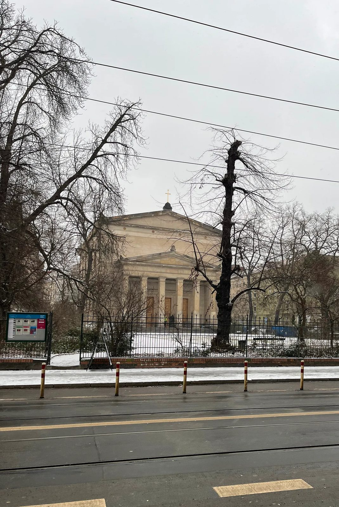
Qu’adviendra-t-il des mondes infinis que nous pourrions habiter? Tout le résidu de structures insoupçonnées ne fournira pas de plan pour tracer des durées intérieures qui courent en parallèle, sans quoi l’épaisseur du temps risque de devenir bien trop apparente… Sans doute n’importe quel LLM entraîné sur assez de matériau pertinent peut-il prédire mille futurs possibles pour notre Kali Yuga, et pourtant aucun ne nous éclairera mieux, aucun ne donnera à voir ces futurs lointains et inimaginables mieux que la musique, et un type de musique bien précis: un saint assemblage de tons dans un ordre extrêmement prévisible.
À la Villa Elisabeth ce jour-là, la salle elle-même pensait à travers chaque réverbération, et l’on voyait clairement qu’un espace habité n’est jamais neutre. Il absorbe et se souvient, il rend ce qu’il a emmagasiné sous des angles que l’on n’avait pas prévus. Peu de compositeurs modernes ont pressenti ces vecteurs d’illumination. Morton Feldman s’y est confronté, à sa manière décousue.
L’horizon est toujours inatteignable, si bien qu’une expansion exponentielle positive du chemin, quel qu’il soit, que l’on emprunte est superflue. La seule façon de respecter cela passe par la répétition, en prenant bien soin d’ignorer les bulles de vraie perdition. Ce mode post-inflationnaire de faire les choses est plutôt mal vu, surtout en musique. Les gens préfèrent en général les sons qui grandissent, les sons qui s’arrêtent soudain, les sons qui progressent ou même qui digressent. Alors, d’une certaine façon, être vraiment audacieux en musique, ce n’est pas quelque New Complexity à la Ferneyhough, mais peut-être simplement répéter chaque son, en espérant que la résonance qui s’ensuit puisse jeter quelque lumière sur le mystère de nos vies.
Le 20 avril 2026, QV a eu l’occasion d’assister au concert de Tortoise à la Culturgest.
Manifeste de l’Aeviternalisme - Tortoise @ Culturgest
par GM
Déterrer la nouvelle éternité faite parole à propos de Tortoise
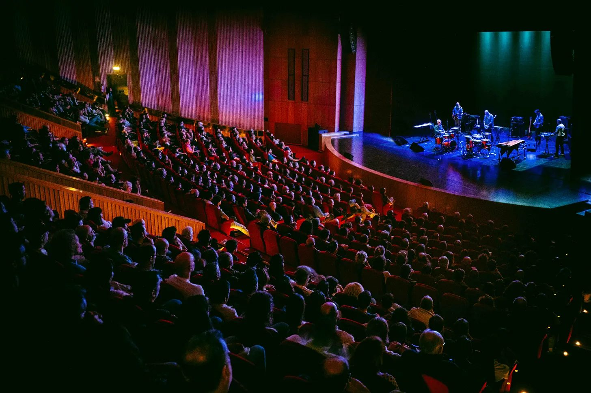
Photo de Vera Marmelo
Les vallées de notre ascension, saupoudrées de toutes sortes de sempiternels, l’humain qui côtoie le dinosaure qui côtoie le mammouth qui côtoie l’amphibien, tous les êtres en un seul espace à produire le miel de la perpétuité, qui sert de conducteur aux nombreuses consciences fantomatiques qui, les pauvres, dans leur grande majorité, tournent sur cet horrible rond-point de Viseu, aussi connu sous le nom de samsara. Mais nous, ceux de la bibliothèque négative, nous qui n’avons pas besoin de mettre des gouttes dans les yeux, nous ne sommes obsédés que par la permanence sur cette terre et à quel point elle est immobile, et un éternel ennuyeux, et l’enfer existe et c’est celui-ci, déjà. Il nous revient de sauter et de haïr ce qui est immobile, ce qui cesse de vivre, ce qui interrompt le cours normal de la flemme si nôtre. Il ne faut même pas grand courage pour suivre de telles pensées, la liberté s’arrange pour arriver. Bouge, bouge, bouge. On ne médite pas sur la loi divine, on court sur elle. Ces distractions mondaines des villes sont du feu blanc pour les yeux. Le sont-elles?
Nous remercions les vallées pour l’amitié prêtée à notre mariage avec la nouvelle écriture. Celle qui ignore, voire méprise, la prétendue objectivité, nous l’expulsons de notre réduit, où n’entre que qui écrit de la poésie, où ne demeure que qui vit la poésie. Appelons-la humblement le geste de l’ange, la manière délicate dont on pose un doigt sur la main d’un roi qui dort; ou un orgue fait d’arbres aux tailles les plus parfaites; ou une tunique qui se défait quand elle est portée par la bonne personne; ou les physionomies des sculptures qui révèlent comment se comportaient les époques. Enfin, et nous voilà restreints par les outils d’aujourd’hui. Du moins nous situons-nous a-historiquement.
Hold infinity in the palm of your hand
And eternity in an hour.
En cela, Tortoise sert d’appel aux armes, dans son énormité placide, nous dirions même melliflue, construite à Chicago, vécue maintenant à Lisbonne et provoquant un changement gestalt dans nos cœurs. Ce furent 1000 accidents de voiture provoqués par cette musique qui induit la transe. Je ne pensais même pas qu’il soit possible de les entendre en concert, je croyais qu’ils n’existaient que dans ce donut compact qu’on force dans la chaîne hi-fi. Comme la campagne que l’on voit par les fenêtres d’un monastère, nous avons vu à travers les voix inexistantes de Tortoise… et de notre poche est tombé un certain goût pour la permanence, ou la paix.
Des larmes jaunes et malades qui sautent de l’air vers la croix, la roche frappe le bois, fait de la terre l’amour. Surgissent des muscles et des veines qui s’emparent de l’infrastructure environnante. La vie mange la ville, la population désespère sans savoir où acheter du papier toilette, du yaourt ou un nouveau grille-pain. C’est fini, nous sommes tous de la même chair, personne ne respirera de trop, seulement dans la juste mesure. Un corps unique qui œuvre pour que nous, désormais engloutis, vivions et vivions bien. La discipline parfaite, les cœurs en silence. Votre collaboration n’est pas nécessaire, mais si vous cédez, vous aurez la vie facilitée. La mort a disparu et un organisme unique agit pour tous ici sur la planète Terre. Les autres planètes ruissellent d’envie. L’humanité est achevée.
Du 9 au 12 avril 2026, QV a été invitée à la magnifique 15e édition du Rewire Festival à Den Haag, aux Pays-Bas, où elle a vu Tortoise, Jim O'Rourke & Eiko Ishibashi, Sumac & Moor Mother, Xiu Xiu et Einstürzende Neubauten à l’Amare; Drew McDowall à la Grote Kerk; Apparitions, Aaron Dilloway et 33 au Het Spui; The Bug & Dis Fig au Paard; Meetsysteem au Koorenhuis; une conférence de Kode9 au Grey Space in the Middle; et l’installation de Brandon LaBelle The Other Family à Page Not Found.
Le Bruit et Nous - Rewire 2026
par AA
Les hipsters ont évolué, se sont optimisés, se sont algorithmisés. Leur goût collectif s’est raffiné, et les vestiges de leur ancienne et familière culture indie-rock ne sont plus qu’un sujet de conversation obsessionnel parmi tant d’autres. Ou peut-être ont-ils simplement vieilli? Ce que les gamins cool écoutent aujourd’hui ne les intéresse sans doute plus tant que ça: leurs tendances de niche se sont cristallisées depuis longtemps et ils ont assez de cult classics pour remplir une vie entière. Toutes les nouvelles interprétations des traditions underground surgissent donc sur internet comme des variantes «déconstruites» de styles d’autrefois. Le festival Rewire est l’endroit idéal pour explorer cette curiosité musicale aventureuse, destinée à cette ramification raffinée, mais ambiguë, des auditeurs de musique. C’était ma première fois et j’y suis allé sans aucune attente. Non par cynisme, mais parce que j’ai appris de la manière la plus douloureuse à ne pas trop m’enthousiasmer pour les festivals, car cela ne fait que préparer le terrain à de grandes déceptions.
J’ai mis une tenue stylée, mais pas trop voyante, et je suis parti vers La Haye, Zuid-Holland. C’est là que j’ai retrouvé AntonBogdanov, un ami proche venu de Russie que j’ai connu dans la vie nocturne de Lisbonne, et avec qui j’ai eu le plaisir de passer le reste du festival. Il avait pris l’avion spécialement pour l’occasion depuis le Portugal, où il vit depuis 5 ans. Il était extrêmement enthousiaste à l’idée de ces jours particuliers dans un pays où il n’était jamais allé. On peut dire que l’événement de quatre jours figurait très haut sur sa liste. Son nom va apparaître plusieurs fois dans ce texte, car il n’a pas seulement été mon compagnon, mais aussi une source d’inspiration pour ce petit texte. On pourrait penser que sa venue de si loin était un honneur pour les organisateurs et les artistes du Rewire, mais ce genre d’échange cosmopolite est en réalité assez typique dans ce milieu, et cela ne les aurait sans doute pas beaucoup impressionnés, même s’ils l’avaient su.
Le festival était plein d’avant-gardistes internationaux et de freaks d’ambient-noise avec des tote bags, majoritairement européens et américains, avec ici et là un Asiatique de l’Est. (Après tout, cette combinaison d’origines forme le plus grand groupe de consommateurs de ce genre d’événements marginaux.) J’ai même parlé avec un Portugais ou deux. C’est toutefois une marge plus propre et plus rangée: une version plus soignée et plus cultivée du rocker de contre-culture émancipé. Mais il fallait s’y attendre, vu la nature poétique de l’esthétique musicale. Reste qu’il est fascinant, et même un peu excitant, de voir quel genre de personnes se présentent à un festival de musique expérimentale. «Sont-ils tous des ermites? Ou encore des excentriques bourgeois?» Une question dichotomique que je me suis posée à moi-même, pour garder les choses simples. Je crois que je me placerais quelque part au milieu de cette ligne.
Dès l’arrivée à la gare de Den Haag Centraal, j’ai tout de suite eu une bonne impression du public du festival: je pensais les avoir identifiés immédiatement. Ou étaient-ce seulement des gens cool de la ville? À vrai dire, c’était difficile de les distinguer, car je ne vais pas souvent dans la Randstad.
La différence est devenue plus claire à mesure que je m’approchais du lieu principal, l’Amare. Ils étaient un peu plus soignés que les autres hipsters urbains et semblaient, de manière générale, avoir une attitude assez humble et intelligente. J’ai trouvé la dose de hipness vraiment remarquable, surtout chez ceux qui semblaient n’être venus que pour les actes ambient. On voyait que des années d’exposition aux algorithmes expérimentaux de la Silicon Valley avaient fait leur travail sur nos compagnons de festival. Je ne me rappelle pas si, avant le COVID, les gens dans des festivals comme Le Guess Who ou Primavera Sound avaient cet air aussi dripped-out.
Comme moi, Bogdanov a tout de suite remarqué le haut niveau de swag. Il a dit: «Je me sens vraiment un mec normal et ordinaire ici», avec son jean bleu banal et sa veste de trekking Patagonia. La mode sensuelle était en outre accompagnée de parfums forts de compagnie aérienne des années 2000: l’instagramisation des arts était complète, et en avril 2026 nous avions, sans aucun doute, atteint un pic ici. (Pour qui lira ceci en 2046.)
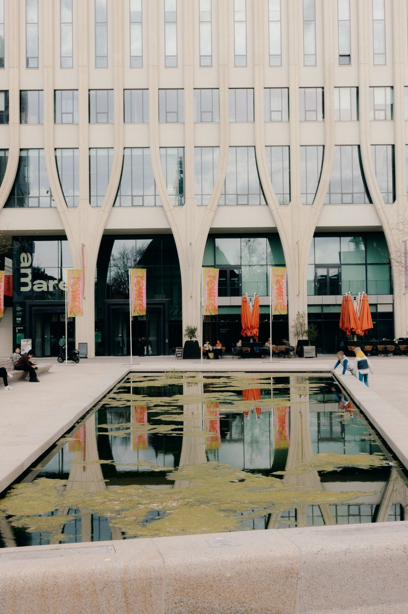
Amare à Den Haag (photo de Laura van der Spek)
Nous avons commencé l’après-midi du vendredi par un petit joint hollandais et une Duvel belge, servis dans l’un des nombreux bars du festival. C’était l’échauffement proposé par Bogdanov: il avait passé la nuit précédente à Amsterdam et était ravi de partager avec moi ses achats de la variété végétale. Je n’avais plus fumé d’herbe depuis un moment, alors le pétard m’a immédiatement porté dans un état d’inspiration enrichi.
Le premier concert de notre liste était Tortoise, décision prise à l’unanimité. Mais avant que le concert ne commence, nous avons eu le plaisir de remplir le début de l’après-midi avec l’un des nombreux «talks» qui faisaient aussi partie du programme initial. (En réalité, il n’y avait pas encore de musique à cette heure-là.)
Nous avons traversé le Chinatown de La Haye (une sorte de Martim Moniz, mais prospère) en direction d’une scène appelée The Grey Space in the Middle, un nom vachement cool pour un lieu, ai-je dit. Ce à quoi Anton a répondu: «En Russie, tous les endroits sont grey.»
La conversation était menée par le pionnier écossais du dubstep (la version cool, à ne pas confondre avec cette camelote de Skrillex: une différence subtile mais importante entre dubheads), Steve Goodman, plus connu sous son nom d’artiste Kode9 et pour son label notoire. L’homme a parlé, entre autres, du troisième œil, c’est-à-dire de la voix intérieure, et de ses diverses manifestations orientales. (La variante taoïste a été donnée en exemple.) À un moment il a dit «I don’t want to get too convoluted», mais cela ne l’a pas empêché de continuer à compliquer les choses quand même. Au bout de cinq minutes, nous nous sommes regardés et avons décidé de quitter la salle. «Je ne suis pas assez intelligent pour cette merde», a dit Anton. Pour moi non plus, ça ne marchait pas. Je comprends que les «traditions intérieures», comme il les appelait, puissent apporter une perspective rafraîchissante à notre quotidien occidental, profane et séculier, mais ce n’était tout simplement ni le lieu ni le moment pour ce genre de conversation existentielle. (Même si, bien sûr, nous aurions pu prévoir que cela arriverait.) Je dois toutefois admettre que le lien que Kode9 a fait entre les chats et la méditation de la solitude avait quelque chose d’humoristique. Il affirmait que le ronronnement des félins peut induire un état de profonde paix intérieure, grâce aux fréquences que produirait notre hypothétique animal de compagnie (–1 point pour les amateurs de chiens).
Bogdanov et moi avons tous deux remarqué que l’intervieweuse n’était pas «native speaker» et que sa maîtrise moins fluide de la lingua franca limitait beaucoup son intervention. Certes, Steve était anglo, mais il n’y avait rien d’anormal à entendre des groupes de festivaliers converser avec toutes sortes d’accents anglais bizarres. D’un côté, c’est pratique, évidemment, mais cela crée parfois des situations absurdes quand on entend ces Européens bilingues, voire trilingues, parler des thèmes les plus introspectifs et intellectuels de la vie. Nous nous disions, sur un ton à moitié ironique: «D’accord, les Américains peuvent garder la lingua franca, puisqu’on la parle tous de toute façon, mais il faut faire attention à ce qu’on leur donne en plus! Ils ne peuvent pas tout avoir!»
Ensuite, nous nous sommes levés et sommes allés vers le premier des nombreux concerts américains que nous allions voir au festival: Tortoise. J’écris ce petit passage assis sur un escalier dans les couloirs de la grande salle de l’Amare, tandis qu’au fond les figures légendaires du post-rock progressif jouent un morceau qui sonne comme si l’on avait mis une bande originale d’Ennio Morricone avec, par-dessus, ces upstrokes acérés de guitare reggae (aussi appelés skanks ou ska strokes, pour les connaisseurs). J’avais décidé d’avance d’écrire le plus possible au stylo et sur papier, pour passer moins de temps à tripoter l’ordinateur que je porte dans ma poche. Ce serait plus organique de me promener avec un petit carnet de notes, ainsi les jus créatifs pourraient remonter à la surface de façon plus primitive, me suis-je dit.
C’était la deuxième fois que j’avais le plaisir de voir Tortoise en concert. La première, c’était à Porto, mais mon moi de 17 ans n’avait pas été particulièrement impressionné par les sensibilités jazz, un élément devenu indispensable à leur son depuis l’album «TNT». Mon moi adolescent, ce soir d’été 2016, n’attendait en réalité que les artistes qui jouaient ensuite sur la même scène: Drive Like Jehu. Un groupe qui, pour moi, avait rendu cette soirée (aujourd’hui nostalgique) vraiment complète. Dix ans plus tard, Tortoise redevenait un groupe assez fatigant à voir en concert. Une chose est sûre concernant ces garçons sensibles et introspectifs qui, 30 ans après leur apogée, jouent encore dans un groupe culte: ou bien ils grisonnent, ou bien ils deviennent chauves. Cela dit, leur deuxième album, Millions Now Living Will Never Die (1996), aura toujours une place spéciale dans mon cœur. Les influences jazz n’étaient pas encore aussi marquées à l’époque, et pendant mon adolescence je n’avais jamais rien entendu d’aussi apaisant dans les limites du rock. «There’s too much war in this world! I know it sounds corny but it should be said! Let’s get corny!» a-t-on entendu depuis la scène. L’un d’eux a rompu le silence du groupe avant d’attaquer le dernier morceau. C’est surtout la dernière phrase de cette déclaration qui m’est restée en tête et, pendant les jours restants du festival, elle a souvent été parodiée par Bogdanov et moi.
«Ça m’a fait penser à une jam de salon, et nous, le public, étions simplement là par hasard, à regarder.»
La soirée a continué avec le deuxième nom important lié à Chicago, mais non moins digne d’intérêt: Jim O’Rourke, un homme pluridisciplinaire qui a désormais exploré à peu près tous les recoins du monde souterrain musical floral. Ce soir-là, il était accompagné de sa plus récente collaboratrice, Eiko Ishibashi, une chouchoute de l’électroacoustique japonaise qui, comme Jim, a une discographie assez prolifique. J’avais compris qu’O’Rourke, originaire de l’Illinois, vit actuellement au Japon, il doit donc y avoir un rapport. Ce duo homme-blanc/femme-asiatique s’est révélé, sans que nous le sachions alors, le premier de nombreux partenariats artistiques (et peut-être quelque chose de plus?) semblables que nous allions voir ce week-end-là.
Au fil des années, c’est surtout le travail de guitare de Jim qui m’a marqué; son disque Bad Timing, de 1997, reste pour moi le point culminant de la carrière de cet être productif et excentrique. Le set présenté par le duo consistait en Jim, complètement replié sur lui-même, produisant des bleeps et des bloops avec un synthétiseur et quelques pédales ordinaires. Il le faisait dans une posture confortable, vêtu d’un pull d’hiver douillet, d’un bucket hat et d’une barbe grise fournie. La Japonaise produisait, avec sa flûte, de petits sons dissonants qu’elle transformait ensuite en boucles électroniques mordantes. Ça m’a fait penser à une jam de salon, et nous, le public, étions simplement là par hasard, à regarder. Ils semblaient assez proches; je me demande si Jim parle déjà japonais. Ou est-il de ces «expats» têtus qui ne veulent parler anglais qu’avec d’autres gaijin? Y a-t-il quelque chose entre eux deux, au fond? J’imagine que je n’ai pas été le seul à me poser la question.
Ah, et j’ai aussi trouvé qu’il y avait trop de bazar sur la table: qu’est-ce que tu vas faire avec tout ça, mec? Le bruit était même un peu pourri, mais pas d’une façon intéressante. J’ai eu du mal à rester attentif et je n’avais qu’une envie, aller boire encore de la bibine locale. J’en suis arrivé à la conclusion qu’O’Rourke avait atteint un statut légendaire unique, mais plus que mérité, qui lui donnait la liberté de faire exactement ce qu’il voulait. Autrement dit, gros respect, chef.
Nous sommes sortis de la salle et nous nous sommes dirigés vers la grande église du centre de Den Haag. Pour atteindre ce lieu sacré, nous avons dû traverser des hordes de gens en sortie du vendredi soir: des citadins qui se remplissaient de boissons alcoolisées et de cigarettes devenues trop chères (13 balles le paquet dans ce bled), parlant de leurs vies agitées et des temps forts de la semaine. Il est parfois facile de se sentir complètement aliéné du citadin typique, surtout quand on ne s’entoure que de types artistes à moitié détraqués qui n’écoutent que les blips les plus obscurs au lieu des DJ de yacht comme Martin Garrix. Bien sûr, il y a beaucoup à dire sur toutes les formes d’art qui existent entre ces deux extrêmes, mais le contraste était bien palpable quand Anton et moi sommes passés des terrasses de clubs de Den Haag aux portes de bois de l’église, où Drew McDowall (ex-Coil & Psychic TV) a remplacé le bruit public de deep-house de la rue par quelque chose qui ressemblait à des vagues d’incantations sonores interminables. C’était notre évangile. C’est vraiment ici que nous avons notre place.
L’une des meilleures traditions contemporaines dans le monde drone/ambient reste cette récente acceptation dans le circuit des concerts en église, et c’est formidable que le Rewire Festival puisse aussi en profiter. Les visuels de Pedro Maia, d’ailleurs, étaient d’une nature purement transcendante et s’accordaient parfaitement au massage sonore de McDowall. C’est de l’art fait pour, et par, des êtres obsessionnels et romantiques.
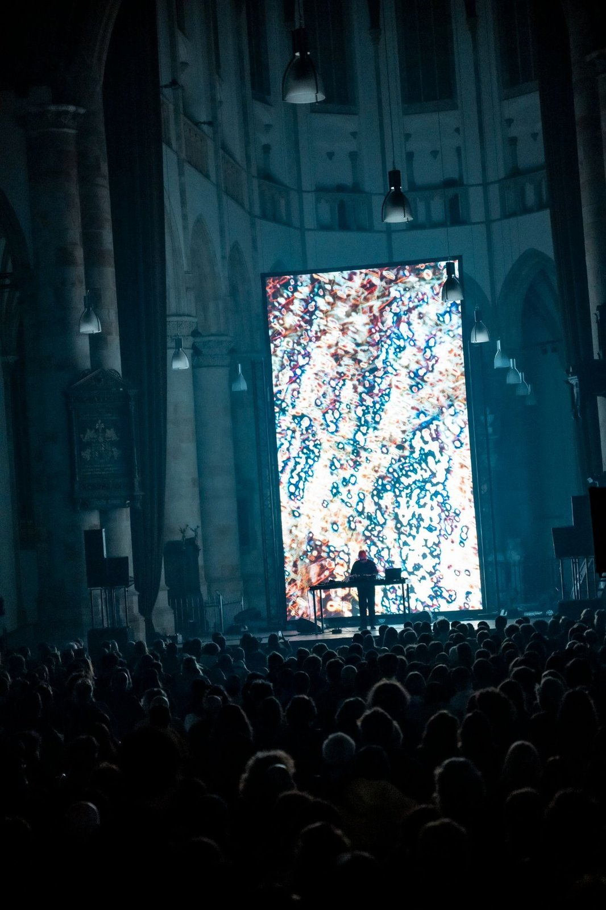
Drew Mcdowall, Grote Kerk (photo: Charlotte van de Gaag)
Le dernier gig de la soirée, que tout le monde attendait avec impatience, était Oneohtrix Point Never: Daniel Lopatin, le véritable maître des bleeps et des bloeps. Je crois qu’il n’a plus besoin de présentation: après une série d’albums très chéris comme R Plus Seven, Replica, et… qui se souvient encore de son alias pionnier du vaporwave, Chuck Person? Il a aussi connu un grand succès avec les bandes originales des films, tout aussi «à la mode», des frères Safdie. J’aime vraiment OPN, sérieusement, mais, à mon grand regret, je n’ai pas pu y être.
Cette nuit-là, je dormais chez des amis à Rotterdam, une autre des villes sans âme de la Randstad, et apparemment il n’y avait aucune liaison de transports en commun qui me permette de voir OPN et d’arriver au lit la même nuit. (Les risques d’être esclave des transports en commun.) J’ai dit au revoir à Bogdanov avec amertume après qu’il m’a dit que Lopatin aussi était russe. Anton m’avait promis que, le lendemain, il dirait que le concert avait été une vraie daube, vraiment nul. Ainsi, je pourrais peut-être mieux gérer ma douleur du FOMO. Des hordes de hipsters remplissaient l’Amare tandis que je sortais ma valise du casier et, les yeux au sol, marchais vers la sortie d’un air vaincu…
«Je me souviens que ma mère m’avait dit, avant que je parte au festival, de ne pas être trop dur dans la critique de ce texte…»
Après une bonne purge, j’ai retrouvé Bogdanov le lendemain, à une heure décente: vers 15h. Cette fois, nous avons complètement sauté les talks et décidé d’aller voir l’une des installations artistiques. Anton est un Russe relativement silencieux et introverti, mais quand il s’agit de sortir la nuit, à 30 et quelques années il tient encore jusqu’à l’aube, et au Rewire Festival il n’a pas fait exception. Il m’a dit que le volet clubs avait été réussi, y compris le DJ set de Kode9, «l’homme-chat au troisième œil». Mais, plus important encore, il a ajouté: «Ils servent de la bière sur toutes les scènes, mec. Même à l’église il y avait de la bière, putain.»
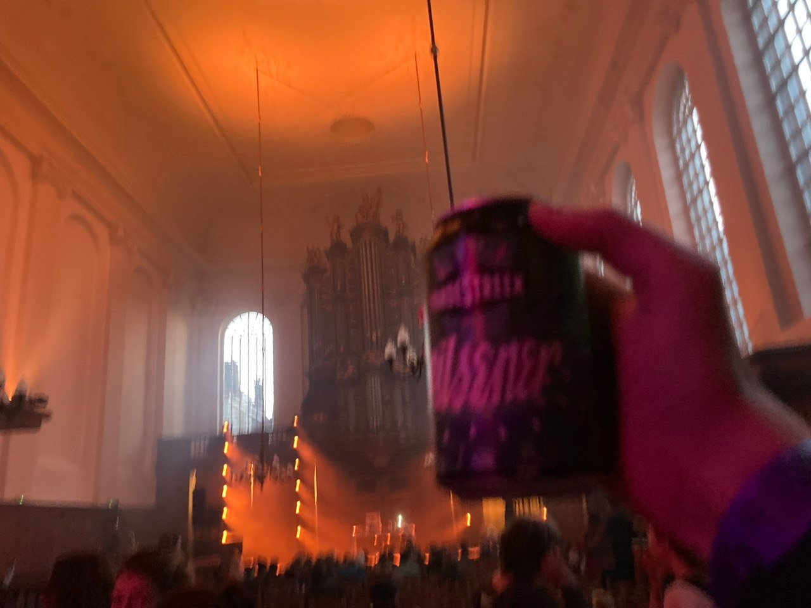
Bogdanov qui s’éclate dans une église de La Haye
Nous sommes arrivés à un endroit appelé «Page Not Found»: hors du contexte du festival, cela ressemblait à l’une de ces librairies urbaines pseudo-militantes, du genre qui pourrait exister dans n’importe quelle ville européenne, toutes plus ou moins pareilles, où l’on achète des zines poétiques de table basse (limités à 150 exemplaires) au même prix que le café qu’on y boit. J’ai demandé à la barista mignonne où je pouvais trouver «The Other Family», de Brandon LaBelle: je n’avais pas encore réussi à identifier l’œuvre qui m’avait amené là. Elle m’a indiqué l’extérieur de la librairie, le trottoir. J’ai répondu par un: «ohhhhh, bien sûr!», mais je n’étais pas le moins du monde préparé à la monstruosité que j’allais voir. J’avais envoyé une photo de l’œuvre à mon ami Gui, et il jurait qu’un sans-abri schizophrène avait laissé là son magnum opus. Je me souviens que ma mère m’avait dit, avant que je parte au festival, de ne pas être trop dur dans la critique de ce texte, et de ne pas être excessivement cynique pendant la visite (j’essaie vraiment, maman!). C’est pourquoi je veux au moins remercier l’artiste pour l’effort qu’il a mis dans cette œuvre. Quoi qu’il en soit, il s’est simplement livré à son art, et c’est, par nature, un geste noble. L’artiste peut remercier ma mère pour les vibes contagieuses de #staypositive qu’elle parvient toujours à transmettre, même quand elle n’est pas là: là-dessus, sincèrement, elle est vraiment forte.
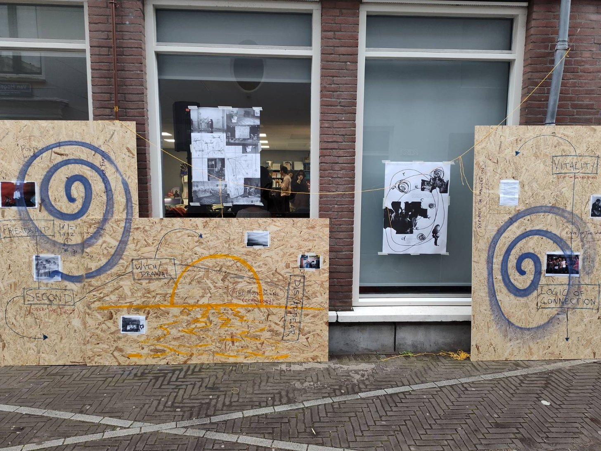
«The Other Family» de Brandon LaBelle
Nous avons décidé de donner sa chance à un nouveau nom, que nous ne connaissions pas. Notre premier «pari» du festival: un groupe appelé Apparitions. Nous savions seulement d’avance qu’il y aurait quelque chose de drone et quelque chose de metal. Et avec ça, ils nous avaient déjà conquis: nous sommes tous les deux grands amateurs de Sunn O))), mais qui ne l’est pas, hein? «T’as vu le nouveau documentaire sur Earth? Carlson est vraiment un chic type. Un mec vraiment pur», a demandé Anton. Earth, sans doute parmi les premiers à miser sérieusement sur ce genre de son, avec les Melvins sur leur disque de drone maniaque Lysol. Nous espérions, avec ce pari, découvrir un nouveau talent dans la tradition du heavy metal extrêmement lent.
Le trio américain a commencé à jouer, et il est tout de suite apparu que nous assistions à une sorte d’étreinte des arts noirs. Une méditation courageuse se déroulait entre l’artiste et le public. Mais il manquait quelque chose. Pour moi, ils auraient pu écraser davantage le public avec leur art des ténèbres. J’aurais aimé que le son ait plus de poids que celui que je sentais encore, cinq minutes plus tôt, en marchant entre les énormes bâtiments de béton gris de Den Haag.
Après le concert, nous avons un peu discuté en portugais avec Igor Imbu, responsable de la partie électronique sur scène: un Brésilien intelligent qui vit aujourd’hui (lui aussi) à Chicago (apparemment une sorte de Mecque pour les musiciens expérimentaux). Nous avons trouvé que ses parties avaient été les meilleures du set, mais je n’ai pas eu le courage d’admettre que la batterie de son collègue, souvent un peu trop raide, restait en deçà. Elle était trop retenue; le batteur ne «sentait» pas vraiment le truc.
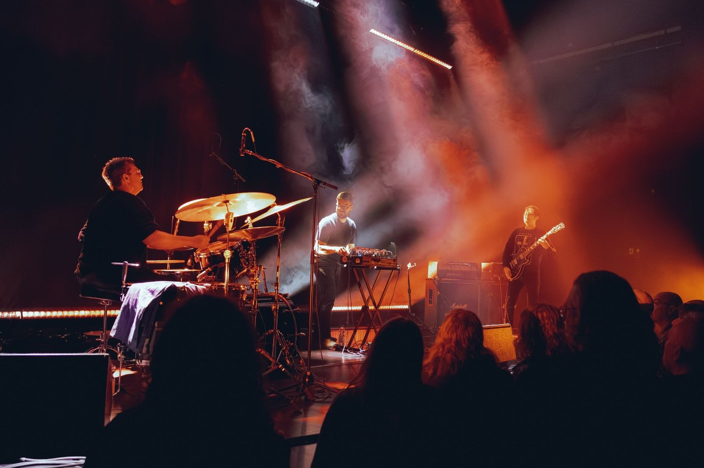
Apparitions, Het Spui (photo: Sabine van Nistelrooij)
Nous étions déjà de nouveau en train de boire des Duvel diaboliques dans l’un des nombreux espaces de restauration du festival, et c’est là que nous avons rencontré Olivier: un autre visiteur qui dormait sous une tente pendant sa croisade de trois jours. «Ouais, mec… sous une tente, vraiment… regarde cette photo, haha. Comme ça, dans un parc quelconque… j’ai jeté mon sac dans un trou, enterré bien profond. Ouais, j’avais pas d’argent pour l’hôtel, mec… tu sais combien ça coûte?» C’était un Flamand qui avait tenté d’entrer pas moins de trois fois à l’académie des beaux-arts de Gand. Il faut vraiment aimer l’art pour ça, ai-je pensé. Nous l’avons félicité pour l’exploit, mais il était déjà en troisième année. «Vous êtes allés voir weed420, bro? C’était de la balle, mec…» a dit Olivier. «Non, mec, malheureusement. Mais tiens, prends un peu de cette weed de malade», ai-je répondu. «Nooon mec, je vais pas fumer et boire tout seul, c’est bizarre.»
Nous sommes restés un peu perplexes et avons commencé à discuter de la question. Pourquoi ne pourrait-on pas profiter seul d’un verre ou d’un joint? Et en quoi est-ce plus étrange que, par exemple, dormir sous une tente au milieu d’un parc métropolitain, comme un mendiant? Nous avons fini par le convaincre et lui avons même payé une bière. Nous l’avons bue en harmonie avec deux autres inconnues: une paire de Danoises stylées, elles aussi plongées jusqu’au cou dans les arts. Elles se sont assises avec nous. Elles sont restées là à chiller. Nous avons eu une longue conversation sur l’un des traumatismes religieux évangéliques de l’enfance de l’une d’elles. Ensuite j’ai raconté que ma sœur avait récemment décidé de se convertir à une église protestante semblable et que, entre-temps, elle était aussi tombée enceinte. «Le cycle du trauma continue…» a-t-elle dit avec un regard triste et résigné. L’autre tenait beaucoup à partager qu’elle avait du sang sami et que le patron de son label est un policier. «Il sort nos disques de noise parce qu’on a un message anti-flics fort, hihi… genre ACAB, tu vois? Je crois qu’il utilise notre musique comme matériel de masturbation.»
Ces sagas de noise danois ne sont remontées à la surface qu’après quelques bières et cigarettes, car au début elle semblait assez réservée. J’avais déjà été en contact avec ce genre d’esthétique BDSM dans le noise, mais quand elle a montré quelques pochettes d’albums, j’ai été vraiment impressionné. Les habituelles gagballs, fouets de cuir noir et femmes pénétrées par deux hommes à la fois. Un contenu relativement graphique, donc… j’ai compris pourquoi elle avait tant hésité au début à partager le projet. (J’ai gagné sa confiance en montrant mon t-shirt d’Iceage, un groupe punk danois, que je portais sous ma veste.) «Personne n’en a encore fait de rip numérique», a-t-elle dit. «Ça n’existe qu’en format physique: c’est du vrai underground shit, rien de ces merdes poseuses de Bandcamp.» Comment peut-on ne pas respecter ça?
«T’as vraiment sorti le rizz à la blonde, mec», a dit Bogdanov plus tard. Il a déjà 34 ans, mais il essaie encore de suivre le vocabulaire du zoomerspeak, sans exagérer cependant, parce que ce serait déjà cringe. La blonde nous amusait, mais elle n’était pas vraiment attirante. J’ai préféré l’autre aux cheveux châtains, celle du trauma religieux. «Tu prends celle de la gagball, d’accord?» ai-je suggéré, un peu opportuniste, mais Anton a refusé, le mec est coriace.
Puisqu’on parle de noise, nous sommes retournés au Spui, cette fois avec notre nouvelle compagnie danoise, et nous avons été immédiatement accueillis par les lignes de dialogue bruyantes d’Aaron Dilloway. Je connaissais vaguement quelques-unes de ses cassettes et j’avais déjà apprécié son travail ici et là, mais je n’avais aucune idée de ce qui m’attendait. L’homme a eu droit à deux concerts au festival, et à juste titre, car le set n’a été rien de moins que magistral. La nature abstraite de ce genre d’«art cassé» peut souvent échouer lamentablement; cela reste un métier risqué. Mais, entre les mains de quelqu’un qui parvient à rester relié à sa voix intérieure, sans abandonner cette méditation pendant le spectacle, cela peut donner les expressions sonores les plus émouvantes. High risk, high reward.
Le récit cohérent que Dilloway a su apporter à son set était comparable à la lecture d’un poème existentiel et romantique. Il y avait une histoire continue, et Aaron a réussi à nous emmener, avec succès, en différents lieux de son domaine. C’est pour ce genre de choses qu’on va à un festival comme celui-ci: pour voir les expériences sonores les plus brutes et les plus nobles réussir. Alors, chapeau! C’est exactement ça.
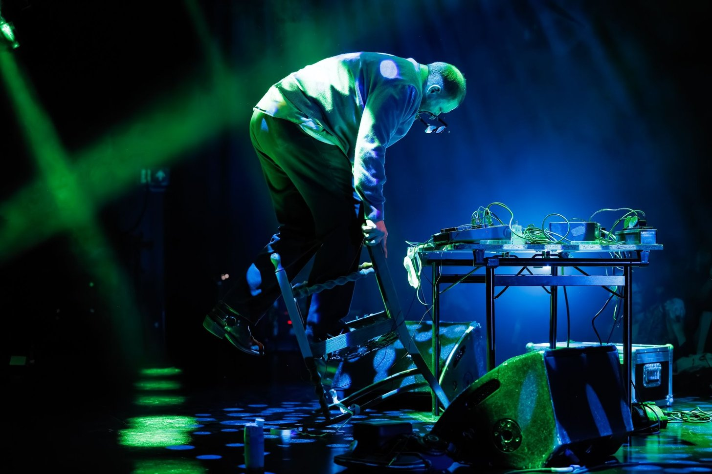
Aaron Dilloway, Het Spui (photo: Wouter Vellekoop)
«…pour beaucoup c’est une dynamique coordonnée, un rituel d’humiliation curatif, alors, on s’en fout?»
La nuit a gardé une note sombre et nous avons continué avec Sumac & Moor Mother. Bon, je ne connais très bien aucun des deux projets, mais Sumac m’est resté en mémoire depuis l’adolescence. À l’époque, j’ai eu une phase rapide, mais intense, d’obsession pour Aaron Turner (Isis, Old Man Gloom et, récemment, aussi Neurosis), où il me fallait explorer tous les recoins des genres pour mecs du lourd «à la retraite».
Leur premier disque avec Keiji Haino est sans doute celui qui m’a le plus impressionné. Le concert a bien commencé; Anton et moi hochions la tête au son des grooves bluesy et crasseux pour lesquels le supergroupe est connu depuis son origine. Me sont venues en tête des images d’un fragment de l’impressionnant documentaire sur Old Man Gloom («Here Is a Gift For You», de 2014), autre projet affilié à Turner (et supergroupe tout aussi lent), où la gigantesque Zozobra, une statue folklorique en bois de 15 mètres, est incendiée de façon rituelle au milieu de Santa Fe, au Nouveau-Mexique. Dans le documentaire, les images sont accompagnées d’Aaron et de membres de groupes comme Cave-In et Converge qui donnent tout sur une scène américaine. À l’époque, c’était une approche fraîche de la fusion du punk et du metal, avant que cela ne devienne un mélange évident (du temps où l’on pouvait encore être bien détesté si l’on osait réunir ces deux mondes).
Malheureusement, j’ai été arraché à cette hypnose de groove nostalgique dès que Moor Mother a ouvert la bouche. Qui a donné une scène à cette vieille, mec? Je suis soudain dans une soirée de slam poetry à Brooklyn ou quoi? Pour rendre le cauchemar fiévreux encore plus insupportable, elle a lâché au passage une insulte désinvolte à tout le peuple néerlandais: «Qui ici est hollandais?», suivi d’un rapide: «I don’t fucking care!» Très subtil, ô mère maure. Il faut vraiment savoir saisir les nuances pour apprécier cette blague. Ensuite, elle a clamé: «Qui ici a encore de l’espoir?» Nous n’avons eu que 2 secondes pour réagir avant qu’elle ne reprenne son prêche: «Ça veut dire que tous les autres s’en fichent!» Eh bien, peut-être qu’on ne s’en fiche pas??? Je n’ai pas des réflexes aussi rapides, Mère Moor. Pour accroître encore l’ambiguïté de son discours, elle a dit: «J’ai de l’espoir pour MON peuple. Pas pour VOTRE peuple.» Ah, heureusement que tu as éclairci ça, petite maman. Je trouvais encore tes déclarations assez ouvertes à l’interprétation et cela avait créé une certaine confusion. J’espère que ce soir-là tu as pu bien profiter de tous tes fans hollandais, vu qu’au fond tu n’étais pas disposée à partager quoi que ce soit de ton vrai moi. Je comprends que tu veuilles défendre ton peuple, mais si tu étais honnête avec toi-même, tu comprendrais que tu utilises simplement ces gens pour ton propre gain narcissique. Alors, la prochaine fois, ne le présente pas de façon altruiste et héroïque; c’est assez faux et passé de mode. D’un autre côté, beaucoup de ces petits Blancs bien nés qui rendent tes spectacles possibles veulent précisément être utilisés; pour beaucoup c’est une dynamique coordonnée d’esclave-et-maître, un rituel d’humiliation curatif, alors, on s’en fout? Celle-là, tu peux la garder, allez.
Mother a ensuite continué avec sa meilleure imitation de Zack de la Rocha, tandis que les rock and rollers grisonnants produisaient du feedback en synchronie, et moi… j’ai soudain ressenti le besoin de m’excuser sur-le-champ pour tous les esclaves africains que mes ancêtres ont pu avoir, mec! Ça ne se fait pas, mec!!! Mais, blague à part, nous arrivons déjà avec une dizaine d’années de retard sur ces questions de guerre culturelle; nous vivons au bout de la queue de cette polémique. La lassitude collective à l’égard de ces conneries s’est installée depuis longtemps et, en plus, d’autres critiques d’art sur le sol néerlandais l’ont déjà fait bien mieux que moi: je pense surtout aux KIRAC, avec leur critique acérée de l’art visuel contemporain. (Où en est le film sur Houellebecq, les gars?)
Nous sommes allés voir Xiu Xiu. Encore un projet culte. Mais oui, le programme est bourré de ce genre d’actes et, de toute façon, nous avions déjà dû faire plusieurs sacrifices depuis notre arrivée. Ce n’était donc pas vraiment facile de partir à la chasse aux nouveaux talents quand on n’avait jamais vu en concert un groupe aussi infâme que Xiu Xiu. Même si j’aurais aimé goûter plus de chair fraîche. En secret, j’espérais surtout l’occasion d’assister en direct à l’une des crises de fureur de Jamie Stewart: https://packaged-media.redd.it/rvboftlgs50e1/pb/m2-res_480p.mp4?m=DASHPlaylist.mpd&c=wh_ben_en&var=sgpssan&v=1&e=1776823200&s=07a79ad44d2840691ad73afa12874d55bf5d2bf (Grand lol).
C’était notre deuxième concert d’un duo «homme blanc et femme asiatique». «Tu devrais vraiment te laisser pousser les cheveux et trouver une petite Japonaise pour monter un groupe de noise», ai-je dit à Anton. «Oui, bonne idée. Je n’ai pas eu beaucoup de chance avec mes derniers coiffeurs, mais maintenant je vais simplement les laisser pousser, en fait. C’est pas une mauvaise idée du tout, mec», a-t-il répondu de l’air de quelqu’un qui dit blyat toutes les deux phrases.
Pour ce spectacle, nous avions trouvé des places assises, tout en haut de l’Amare: nous voulions le vivre de façon plus patricienne. Stewart et Angela étaient ensemble à une table et avaient l’air plus cool que jamais. Ces deux-là sont vraiment des durs, tu vois? Ils ont encore ce swagger de rock’n’roll que beaucoup de leurs contemporains ont perdu depuis belle lurette. Angela, en plus, est apparue avec une cravate noire sur un chemisier blanc: quelle meuf cool, mec. Ces types en ont littéralement rien à foutre de personne, genre fuck it, vraiment. Clairement des gens qui baisent encore, des gens sexe-positifs, tu vois? Le duo ésotérique-romantique avait décidé ce soir-là de faire une ode au film Eraserhead, connu comme le film culte d’étudiant de David Lynch. Et il est unanimement considéré comme un classique par ces ermites antisociaux. À juste titre, d’ailleurs: Lynch lui-même a toujours ouvertement flirté avec le bruit électroacoustique de nature hypnagogique. J’ai aussi été assez impressionné par la réinterprétation que Xiu Xiu a faite de la célèbre bande originale d’Angelo Badalamenti pour Twin Peaks de Lynch (même si, en vérité, je ne trouve pas leur travail le plus expérimental si extraordinaire que ça).
Bref, le concert a sans doute été une expérience lynchienne. Il y a eu peu de moments de ce qu’on appelle le «harsh noise»; ces éléments ont été utilisés de façon parcimonieuse et calculée. De temps en temps, Angela introduisait une mélodie au piano après les passages de musique concrète, juste avant que Stewart ne gonfle des ballons et ne les fasse éclater dans un micro SM-58. Mais tout n’était pas si raffiné, parce que je te jure qu’à un moment j’ai entendu des gémissements excités, comme s’ils venaient d’un accouchement. Cela ressemblait presque à une ode à l’underground pervers, la vraie scène dont j’ai parlé plus haut, à ne pas confondre avec la camelote poseuse conventionnelle que vous écoutez probablement.
Enfin, les images à l’écran étaient tout aussi variées, avec un accent sur l’ésotérisme taoïste, l’écume de l’océan, des femmes BDSM excitées et, peut-être le plus intéressant, le regard vide d’un groupe de poules. Je me suis tout de suite rappelé cette interview de Herzog où il décrit combien ce regard attardé des poules peut être troublant. À ce moment-là, je l’ai senti jusqu’aux os.
Enfin, Stewart s’est soudain levé violemment de sa chaise et a cassé 24 bouteilles de bière dans une poubelle à papier. Il avait l’air assez énervé: bonne nouvelle pour moi, puisque je l’attendais. Ensuite il a encore pris un manche à balai et s’est mis à bien remuer tous les tessons et la bière. Le son amplifié de tout cela était délicieux! Un climax de pure violation sonore pour nos tympans fragiles: j’en ai même eu la chair de poule, hehe.
Les applaudissements qui ont suivi ont été longs et bien mérités.
Xiu Xiu, Amare (photo: Jan Rijk)
Je savais déjà que ce samedi soir il restait encore beaucoup à voir dans le Rewire nocturne, mais malheureusement, comme la nuit précédente, ce n’était pas pour moi.
J’ai retrouvé Anton le dimanche suivant pour voir un certain Meetsysteem et son groupe au Koorenhuis. Notre deuxième pari du festival. Mais nous n’avons pas tenu longtemps: la vibe était même mignonne, mais on aurait dit que le type n’avait pas bien chauffé ses cordes vocales (ou peut-être avait-il passé la nuit précédente au Paard à faire la fête entre Bogdanov et les autres fêtards?). La musique elle-même sonnait un peu comme un mélange de Spinvis et de Bar Italia. Il y avait aussi quelque chose de twee-pop, de un peu nunuche. Nous étions encore à moitié en gueule de bois, alors nous n’avions envie que d’un café et d’une cigarette au soleil, et c’est exactement ce que nous avons fait après 10 minutes de concert.
«Les thèmes des paroles étaient étonnamment actuels et alternaient entre zoomerspeak algorithmique et une angoisse adolescente archaïque.»
Nous étions sur le point d’aller voir Aaron Dilloway une deuxième fois, mais nous avons fini par prendre un nouveau risque, cette fois avec un groupe appelé 33. En chemin vers le Spui, nous sommes passés devant des symboles et des motifs ésotériques classiques de la ville, surtout la cigogne de La Haye qui apparaît partout quand on marche dans la vieille ville. Soudain j’ai pensé: attends… 33, c’est le nombre des francs-maçons. Ça ne peut pas être une coïncidence: il faut absolument aller voir 33, putain.
Arrivés au Spui, nous avons trouvé sur scène un groupe de Britanniques avec un son qui était un vague mélange de tout et n’importe quoi: une sorte de Mr. Bungle mais avec Björk comme cerveau créatif au lieu de Mike Patton. Un homme androgyne d’apparence est-asiatique criait tout ce qu’il y avait à crier, quand il ne chantait pas ou ne jouait pas du saxophone. Derrière lui il y avait un type baraqué qui faisait des chœurs à la Trent Reznor: on aurait dit quelqu’un capable de te faire un crowdkill dans un concert hardcore, mais en même temps un directeur des ventes sur le point de te vendre un aspirateur. Les thèmes des paroles étaient étonnamment actuels et alternaient entre zoomerspeak algorithmique et une angoisse adolescente apocalyptique.
Quelques moments forts poétiques: «meet me up at the dumpster fire, I lit it up because you let me down. 369… 369… 369…» et, à un moment, il était question de l’expérience religieuse de la beatlemania et de combien une trace de speed dans le parc au lever du soleil était merveilleuse et sacrée. Mais les passages d’autotune angélique à la Bladee rataient complètement la cible. Ces types avaient clairement avalé la pilule de la modernité, et ils n’avaient pas peur de l’admettre. Nous avons demandé au type du stand de merch s’il avait déjà étudié les implications numérologiques du nombre 33, mais le pauvre n’en avait aucune idée et a seulement dit qu’il était là pour aider ses amis…
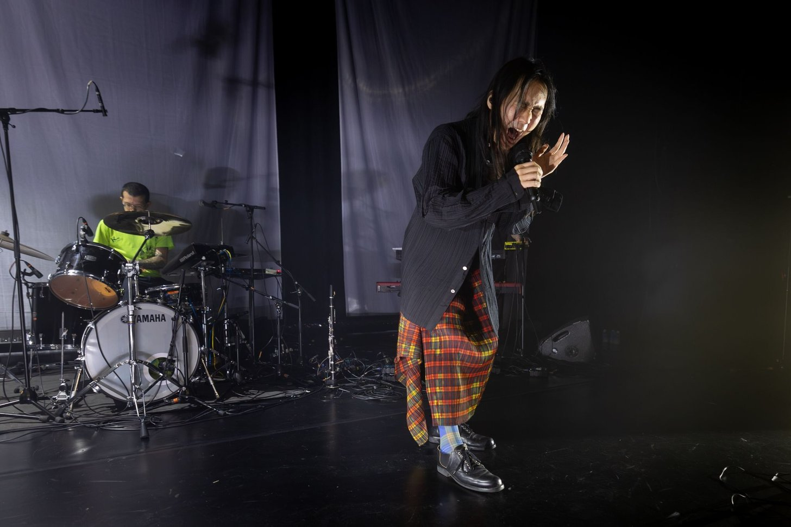
33, Het Spui (photo: Jan Rijk)
Dans une tentative désespérée de fuir la modernité, je suis allé au Paard à la recherche de The Bug. Un Lituanien confus s’est mis à nous parler: lui aussi cherchait le gros Bug, parce qu’il y avait deux Paard et que le staff n’avait aucune idée de qui était The Bug, ou la bestiole, ou quoi que ce soit. Arrivés au Paard 1, la bonne salle, l’homme s’est mis à parler avec enthousiasme de son groupe de reggae babylonien-expérimental:
«Les 12 tribus de Juda sont sur Mars, mec. Mon truc est intergalactique, tu vois?» «Ce type est clairement sous l’effet de trucs costauds, non?» ai-je demandé à Anton avec un sourire, pendant qu’il allait chercher la deuxième tournée. Mais Bogdanov l’a trouvé normal, même trop banal. Je me suis dit que c’était juste une de ces vibes typiques de l’Est que je n’arrive pas encore à déchiffrer, alors j’ai laissé couler.
Mais avant d’aller plus loin, The Bug est monté sur scène avec sa valise de vinyles et n’a pas hésité à déverser des grooves de basse à plus de 110 décibels dans une salle pleine de victimes volontaires. D’habitude je ne mets pas de bouchons, je suis déjà à moitié sourd, mais ces bouts de cire ont vraiment été utiles pour protéger mon oreille des fréquences post-jamaïcaines les plus lourdes que l’homme connaisse. C’était une autre forme de modernité: différente de celle de 33. The Bug n’était ni espoir, ni rage, ni amour: The Bug était le son en soi. C’était le spectre entier. Et il a rempli la plus grande partie de ce spectre, à ras bord, des harmonies dissonantes que comprimait la distorsion de la basse. Aucune particule d’air n’a été épargnée. Le public a été soumis. La branche de dub qu’a cultivée la bestiole exige un abandon total au soundsystem. Le mec ne pardonne pas.
Puis est entrée Dis Fig: notre troisième «partenariat homme-blanc / femme-asiatique». Dans ce festival, je n’avais aucune idée que cette combinaison pouvait être aussi puissante. J’avais déjà entendu parler de Yoko Ono et de ce genre de choses, mais je ne me suis jamais beaucoup intéressé à la yellow-fever et à ces conneries. Mais le doute demeure toujours: y a-t-il de la tension dans ces partenariats? Existe-t-il en coulisses une alchimie que nous ne voyons jamais sur scène?
Dis Fig criait sans arrêt: une interprétation punk monolithique, quelque chose entre Atari Teenage Riot et, plus récemment, la voix iconique d’Alice de Crystal Castles. La performance pourrait être décrite comme une expérience chamanique: s’il existe encore des rituels primordiaux dans nos sociétés séculières modernes, celui-ci en était certainement un.
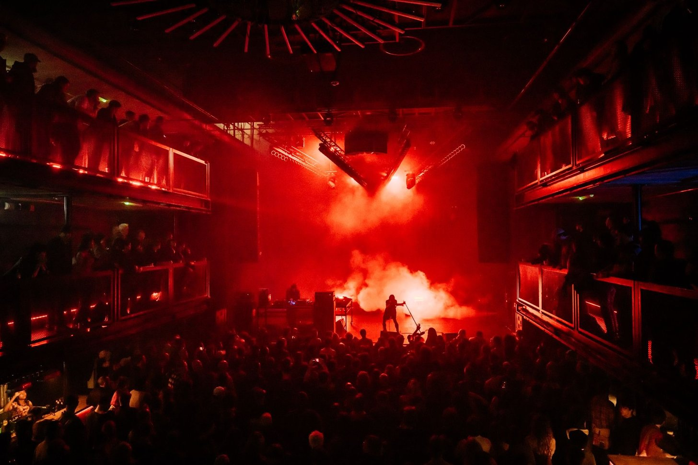
The Bug, Paard (photo: Camille Blake)
Nous avons mangé une soupe chinoise au crabe et bu quelques bières pour rafraîchir le palais à peine brûlé. Einstürzende Neubauten, la fin de la soirée, et du festival, nous attendait. Ou, du moins, la plus récente incarnation du groupe: une formation qui mêlait membres originaux et jeunes visages. Blixa Bargeld brillait, littéralement, et dominait chaque moment de façon magistrale: aucun souffle n’a été gaspillé. Les rythmes proto-industriels étaient joués avec une précision presque militaire et, tout au long du concert, produits au moyen d’une liste longue et ambitieuse d’instruments: des perceuses caverneuses de grandes dimensions aux pièces d’aluminium jetables, des tuyaux de toilettes, des chariots de supermarché et, bien sûr, une série de grandes plaques d’acier.
Bargeld était vraiment charismatique et le public riait constamment de ses blagues, même quand, au milieu du concert, il a présenté le thème du morceau suivant:
«This one is about the national socialist family architecture program.» Il n’allait pas résister, le vieil Allemand… Le public a applaudi. «I didn’t know there were nazis in the crowd», a murmuré un boomer âgé à côté de nous, vêtu d’un de ces t-shirts classiques au logo du groupe. «For sure», a dit Bogdanov avec un sourire. L’homme a ri nerveusement et sa femme asiatique a fini par partir peu après: «ce n’était pas son truc». Heureusement, ma compagnie se composait seulement d’un Russe dingue qui trouvait encore tout cela amusant.
Les pionniers de l’industriel ont joué bien au-dessus des attentes, et ce n’était pas quelque chose à quoi nous étions habitués avec des groupes des années 80. Ils sont même revenus pour un rappel après que le public a fait quelque cinq minutes de vacarme désespéré. Pendant le rappel, le groupe a fait du sampling de sons du public dans ses loops: intentionnel ou non, mais de toute façon, génial.
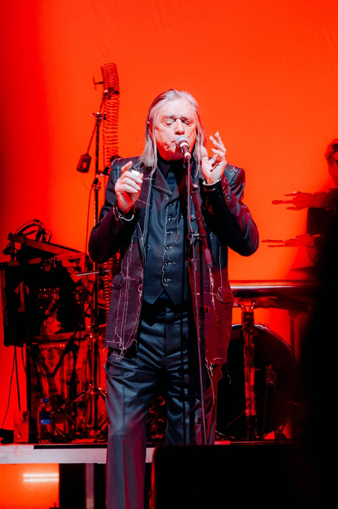
Einstürzende Neubauten, Amare (photo: Laura van der Spek)
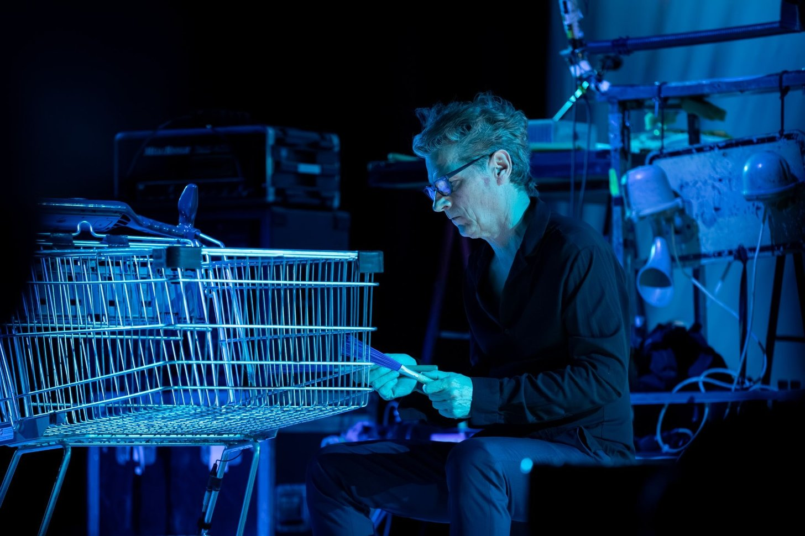
Einstürzende Neubauten, Amare (photo: Sabine van Nistelrooij)
Fatigués, et légèrement détruits par toutes les substances addictives consommées en excès pendant les trois jours, Anton et moi avons pris un train pour faire ensemble un tour dans un bon vieux trou paumé de la province de Gueldre. Pour pouvoir échapper à ce bruit, au fond.
C’était amusant, le Rewire, j’en suis ressorti bien Rewired, mais ça fait aussi du bien de retrouver le silence. Loin du bruit des masses d’employés de bureau, des métros qui traversent des blocs de béton, des sinistres épiceries turques de nuit et des autres fruits modernes de notre Randstad hyper-civilisée.
Juste une dernière formalité polie (je suis le fils de ma mère, après tout): je veux remercier les artistes, les organisateurs et tous les autres travailleurs du Rewire pour leur travail excellent et professionnel. Pratiquement tout s’est déroulé sans problème et les lieux étaient magnifiques.
Rewire, je te reverrai peut-être l’année prochaine? Merci!
Le , QV a eu l’occasion d’assister à la pièce «Filodemo» de Camões, mise en scène par une figure connue du théâtre portugais contemporain. Elle a eu lieu à la Sala Estúdio Valentim de Barros, aux Jardins do Bombarda, sous l’égide du Teatro Nacional D. Maria II.
La Chaise de Filodemo - Camões @ Jardins do Bombarda
par CF
(Entre Filodemo) Il nous parle devant les chaises, pour l’instant inertes, en posant quelques avertissements. Les comptes faits à la sortie de la salle, je conclus qu’elles sont dix. Trois se font accompagner de leur paire, contrairement aux autres. L’une d’elles se distingue en particulier, blanche, sans dossier. J’aimerais m’asseoir sur l’une de ces chaises, pour la simple raison qu’elles sont turbulentes comme les enfants. Chaque fois que naît un enfant, naît aussi un menuisier, et tous deux s’occuperont de la même chaise pour le reste de leur vie. À mon grand mécontentement, je les ai aperçues déjà assis. (Sort Filodemo) Cédant en vain la place à d’autres interlocuteurs aux noms du XVIe siècle. Je ne m’intéresse qu’aux chaises et au mouvement coordonné qu’elles acquièrent. Aucune des répliques prononcées ne parvient à m’écarter de ce jeu obscur. Revenons aux enfants. Quand ils s’assoient pour la première fois, ils commencent par gigoter. Appelons cela l’insubordination agonisante face à la vie. La chaise cessera de lui convenir, et l’enfant trouve cette idée insupportable. Naturellement, il se résigne à sa croissance et reste assis en silence. Parfois, il demande s’il peut sortir de table, se lève et sort. Pendant son absence, le menuisier revient. Il examine la chaise avec attention, la façon dont elle a mûri. Elle aussi a grandi auprès de l’enfant, chacun à son rythme. Le menuisier souhaite rendre à l’enfant cette agitation incontrôlable des jambes, capable de corriger le monde. Rares sont les menuisiers qui ont réussi à résoudre cette énigme. Certains se distraient lentement avec leurs propres chaises et oublient la promesse faite à la naissance. Cette absence prolongée inspire la mort de plusieurs enfants et fait trembler les menuisiers. Pourtant, après quelques tentatives, il semble avoir trouvé la solution. Il pleure sans interruption, posé sur un sourire incandescent. Il décide de rentrer chez lui. Et c’est à ce moment-là qu’il voit l’enfant.
Le , QV a été invitée à la magnifique 4e édition du Sovereign Art Prize, dans l’historique Sociedade Nacional de Belas Artes à Lisbonne. Les pensées qui suivent nous sont venues pendant l’expérience. Toutes les références persanes sont tirées du Golestân de Saadi.
La Galerie Comme Roseraie Sacrée - Sovereign Art Prize
par GM
Les Brigands de la Tribu Kufatcha - Le Roi de Nimruz - Le Chaton d’Abu Harirah - Selbstüberwindung
Nous nous sommes tous rassemblés pour regarder des icônes, les vénérer, boire le même vin, manger même les mêmes hors-d’œuvre. Non pas malgré ses enchevêtrements profanes avec l’argent, le vin et la représentation sociale: une galerie ne pourrait-elle pas être un lieu saint? Après tout, le sacré a toujours besoin du profane comme véhicule.
Nous, à QV, sentons que le moment est opportun pour un léger umdenken de la galerie, c’est-à-dire pour reconsidérer le concept de galerie vers quelque chose de plus fécond. Pour ceux qui ne sont pas en perpétuelle guerre mentale avec eux-mêmes, une galerie peut être pensée comme un lieu où le vin arrose les plantes; où l’on cueille les tableaux comme des chrysanthèmes près de la haie; où l’on regarde au-delà de ces lointaines montagnes faites de main d’homme qui, dans les villes, s’appellent immeubles, et où l’on peut jouir de brefs moments de contemplation. Le cynisme abonde aujourd’hui, attitude qui, soit dit en passant, est une manière très efficace d’aider les puissants en place; le défi est donc plutôt d’embellir le concept de galerie que de s’y opposer le plus durement possible. Les révolutions se sont révélées n’être que des itérations du paradigme précédent. Ce qui est vraiment difficile à atteindre, c’est un changement gestalt des mentalités, qui ne dépend pas vraiment des conditions politiques, mais plutôt de la capacité des gens à s’individuer, chose dont la plupart ne prennent même pas la peine de penser ce qu’elle veut dire, et ce n’est pas non plus le propos de cet essai que de s’attarder sur ce processus particulier du développement de notre conscience. Nous nous efforcerons plutôt de plaider pour la galerie sous sa forme actuelle, de montrer à quel point elle est en réalité parfaite, pour en arriver à la simple conclusion qu’elle ne pose vraiment aucun problème.
Surprise, l’argent circule dans ces espaces. Nous aimons faire comme si le marché de l’art était séparé du marché des idées, de l’expérience esthétique et du capital culturel, et cette séparation est malheureusement fantasmatique. Soutenir le contraire, c’est céder précisément au cynisme auquel nous avons déjà renoncé. Essayons peut-être de trouver d’autres façons d’exister sur cette planète que le dénigrement nonchalant. Si nous mettions nos lunettes roses en entrant dans la galerie, ce que nous verrions devant nous ressemblerait bien plus à un jardin. On y plante de nouvelles fleurs, on les arrose, elles poussent, on les coupe, on les vend ou on les partage, et ainsi de suite. Nous irions même jusqu’à préciser les plantes. Des roses, bien sûr. Des roses comme tableaux, comme sculptures, au sens figuré s’entend. Les roses sont à la fois belles et déclenchent une réaction viscérale de douleur, avec les épines et tout. Saadi le savait quand il écrivait que la rose et l’épine poussent de la même racine. Vraiment, vouloir l’une sans l’autre, c’est mal comprendre la beauté, c’est vouloir le parfum sans la blessure. Il y a pourtant des brigands qui voudraient expurger la galerie de ses contradictions, ceux qui veulent l’art sans le commerce, la contemplation sans l’infrastructure de la valeur, sans tout l’appareil qui garde les lumières allumées et le vin qui coule. Ces brigands voudraient appauvrir l’espace en le soulageant de ses tensions fécondes et nécessaires. Ce qui leur échappe, c’est que la galerie n’est pas diminuée par sa fonction économique, mais seulement accomplie par elle.
Celui qui a fait bien des choses déshonorantes Ne se soucie en rien de la réputation de quiconque.
Ne l’oublions pas: dans la galerie, chacun devient brièvement souverain. On se tient devant un tableau et il s’adresse à vous seul, établissant une relation je-tu. Chacun a la possibilité d’exercer son jugement esthétique et chacun est couronné un instant. Plissez les yeux et vous percevrez ici quelque chose d’utopique: une richesse redirigée, si temporairement et incomplètement que ce soit, vers la culture de la beauté et de la pensée; la galerie est donc la meilleure approximation d’un espace contemplatif qu’une société marchande puisse produire.
Et pourtant, il y a de la place pour le jeu, pour le gratuit, pour le petit chaton doux et anarchique qui se promène à travers les graves disputes théologiques d’Abu Harirah, en se frottant aux jambes des savants hautains. Ici, le chaton rappelle que tout n’a pas besoin d’être sérieux, et que la galerie aussi doit avoir ses petits plaisirs inattendus, voire des œuvres qui ne cadrent pas vraiment avec la logique curatoriale. Au fond, nous parlons des moments où le cadre se désintègre par le charme, par quelque accident ou par le refus de l’artiste d’être sérieux pour une fois.
La sainteté de la galerie ne tient pas à ce qu’elle soit séparée du monde, même si cela aide. Nous pensons plutôt au fait qu’elle crée des occasions pour une certaine qualité d’attention que le monde rend presque impossible, tout en nous donnant le plaisir de maintenir certains rituels dont ce même monde s’est débarrassé. Nous irions même jusqu’à dire que ce qui la rend sacrée, ce n’est pas qu’elle soit pure ou séparée du reste du monde, c’est plutôt une affaire d’intensification, comme concentrer l’expérience jusqu’à ce que quelque chose perce la croûte de l’habitude, de la distraction, des mille petites morts que nous mourons chaque jour. Les murs blancs, le vin et les voix feutrées servent tous cette intensification, cette préparation au moment où l’on s’arrête devant une toile et où quelque chose bascule.
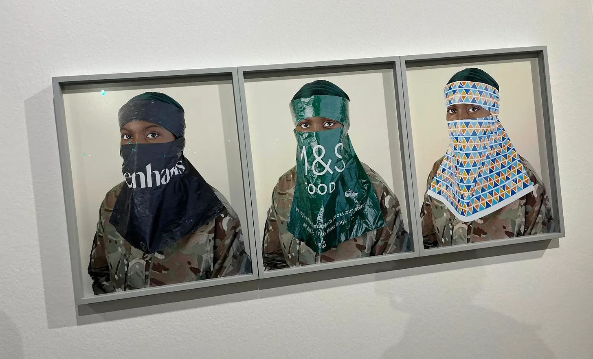
Edgar Martins - Anton’s hand is Made of Guilt. No muscle or Bone. He has a Gung-ho Finger & a Grief-stricken Thumb
Ensuite, regardez comment les corps se déplacent dans les espaces de la galerie, lentement et délibérément, un verre leur fournissant une occupation ou une excuse, juste quelque chose à faire avec les mains, sans compter que l’alcool crée une sorte d’ivresse cérémonielle, un relâchement. Ce que nous avons là est une condition liminale entre le quotidien et l’esthétique, et nous devenons tellement perméables à l’expérience. En riant, pendant ce temps, les hors-d’œuvre nous ancrent dans notre existence corporelle, mettant du sel sur la langue tandis que l’art menace de nous dissoudre en pure perception, de nous faire oublier que nous avons des corps. Cela peut sembler frivole, mais ce n’est rien d’autre que la technologie du sacré, mise à jour pour une époque séculière qui a oublié ce que le sacré veut même dire et qui est incapable d’admettre qu’elle en a besoin.
Et les actionnistes viennois, vous demandez-vous peut-être? Ils cherchaient à produire un art qui résiste à la marchandisation, à l’institutionnalisation, à la domestication. Et où résident leurs œuvres aujourd’hui? Dans les galeries, naturellement, accumulant une valeur qui aurait horrifié leurs créateurs, qui les aurait fait pleurer ou enrager, ou les deux. Nous pourrions appeler cela un échec. Plus exactement, nous l’appelons une révélation. La galerie absorbe tout parce que la galerie est simplement la morphologie sociale que prend l’expérience esthétique dans la modernité. Répudier la galerie, c’est répudier la socialité elle-même, se replier dans quelque fantasme prélapsaire d’une expérience sans médiation qui n’a de toute façon jamais existé. Le dépassement de soi, la «Selbstüberwindung» dont nous avons réellement besoin, n’est pas le dépassement de la galerie, mais seulement celui de notre mesquin ressentiment à son égard. Acceptez que la beauté exige une architecture, que la contemplation exige une délimitation, que la valeur exige une évaluation. La galerie est autant la prison de l’art que sa condition de possibilité. Le derviche peut ne rien posséder, et même lui a besoin du caravansérail, du lieu de rencontre, de la structure qui lui permet de rencontrer les autres, de s’asseoir, d’échanger des histoires et surtout de boire du thé.
Le , QV a eu l’occasion d’assister au festival de cinéma Caminhos do Cinema Português à Coimbra, pour la première mondiale de «Seta», un court métrage de Francisco Botelho avec Leonor Silveira. Ce qui suit est un faux entretien surréaliste avec les personnes susmentionnées, ainsi que la conclusion de la 31e édition de cet impressionnant festival.
Caminhos do Cinema Português – Première Internationale de «Seta» de Francisco Botelho + Parties 2 & 3
par GM
Continuation (承 chéng) + Confluence (合 hé)
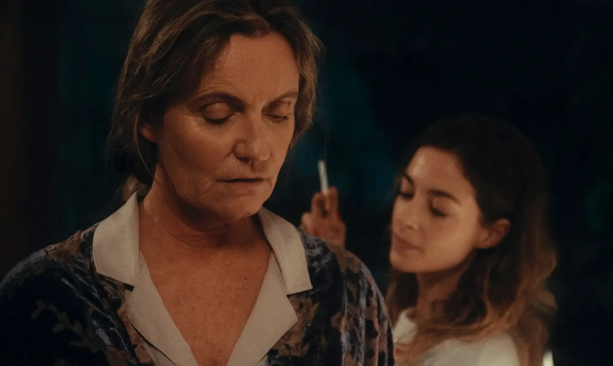
Leonor Silveira et Victória Guerra dans SETA de Francisco Botelho
Queres Viver - Quand nous avons compris que, chez nous, nous pouvions obtenir la proportion que nous donne notre imagination, alors, et si nous arrêtions de la gâcher? Ça ne servirait à rien quand même, à cause d’une douleur atroce. Même avec des gants, c’est comme c’est, ayez seulement la foi. Il y a 18 mères, divisez les deux et laissez-les en discuter, en siffler, bon voyage. Prenons à la fois la carte de crédit et le salaire, l’avion ne s’écrasera pas, en tout cas rien que le fleuve ne puisse supporter. Peut-être marcherons-nous à travers les criques, à travers les bars, en parlant avec toutes les mères, les films du fleuve, ceux qui se boivent. Les roseaux et la peur de l’électricité, tout ça c’est de l’eau passée sous les ponts, avec quelques tuyaux au milieu où se réunissent joyeusement tous les inspecteurs de la fourchette, aux côtés des redoutables trottinettes électriques. Quels grincements elles sont capables de produire! Comme 18 mères qui pendent aux poutres vitreuses du pont.
Francisco Botelho – Je suis entièrement d’accord. Personne jusqu’ici n’avait compris mon film de façon aussi succincte ni n’en avait fait une interprétation aussi créative. En fait, nos vieilles maisons, celles où nous montions et descendions autant de fois que possible, sont totalement en ruine. Il ne reste que les structures spectrales de ces choses. Tous les traumatismes, les fantômes de notre vie, adorent nous parler comme s’ils existaient dans le même continuum que nous. C’est très agréable, si l’on y est enclin. Il se trouve simplement que je l’ai filmé.
QV – Bien sûr. En tout cas, la poussière que le papillon a répandue dans et autour de la maison de la Dame, les nénuphars qui se moquent de loin, si bien blottis dans leur bassin, hélas, un jour de printemps à la fin du monde. À la fin du monde, de nouveau le jour passe. Le colibri pleure comme si ses larmes étaient celles qui trempent les cimes des arbres. Vous ne trouvez pas?
Leonor Silveira – En effet. J’ajouterais même que le bassin a fini par être l’un des éléments les plus symboliques du film, c’était presque comme une fosse d’objets regrettables. La manière dont les personnages y jetaient ce dont ils ne se souciaient plus. Il n’y avait ni papillons ni colibris dans le film de Francisco, mais si je comprends bien votre allégorie inspirée de Li Shangyin et que je prends ce que vous avez dit pour désigner, respectivement, la mère et la fille, alors oui, je suis d’accord.
FB – Je ne pourrais être plus d’accord avec vous deux.
QV – Bien. Mais qu’en est-il du design de maison mid-century modern? Il a depuis longtemps été établi par l’Organisation internationale de normalisation comme le style de décoration le plus agréable esthétiquement, celui auquel tous les autres sont comparés et qui est largement considéré comme le nec plus ultra. Dans certains pays, on peut d’ailleurs recevoir une amende assez élevée pour ne pas apprécier ce style en particulier. Ça, nous le savons. Est-ce pour cela que vous l’avez choisi pour votre décor?
FB – Je ne suis pas sûr que cette organisation ait même ces critères. En tout cas, pour le décor, nous voulions couvrir une période particulière de l’histoire tout en la gardant un peu ambiguë, et ce style est parfait pour cela.
LS – Pour être honnête, je crois que tu le trouvais juste cool.
FB – C’est aussi une possibilité.
QV – C’est ce que je pensais. Je voudrais aussi vous féliciter pour la palette de couleurs du film et la position générale de la caméra, très à la Ozu.
FB – Oui, je suis sa réincarnation.
QV - Oh.
LS - C’est vrai.
QV - Oh.
送 別
王 維
山 中 相 送 罷 ，
日 暮 掩 柴 扉 。
春 草 明 年 綠 ，
王 孫 歸 不 歸 。
Adieu
Wang Wei (699–759)
qi: Après un adieu dans la montagne, cheng: La nuit tombe, et je ferme le portail de bois. zhuan: Quand reviendra le printemps, he: Je me demande si mon ami reviendra.
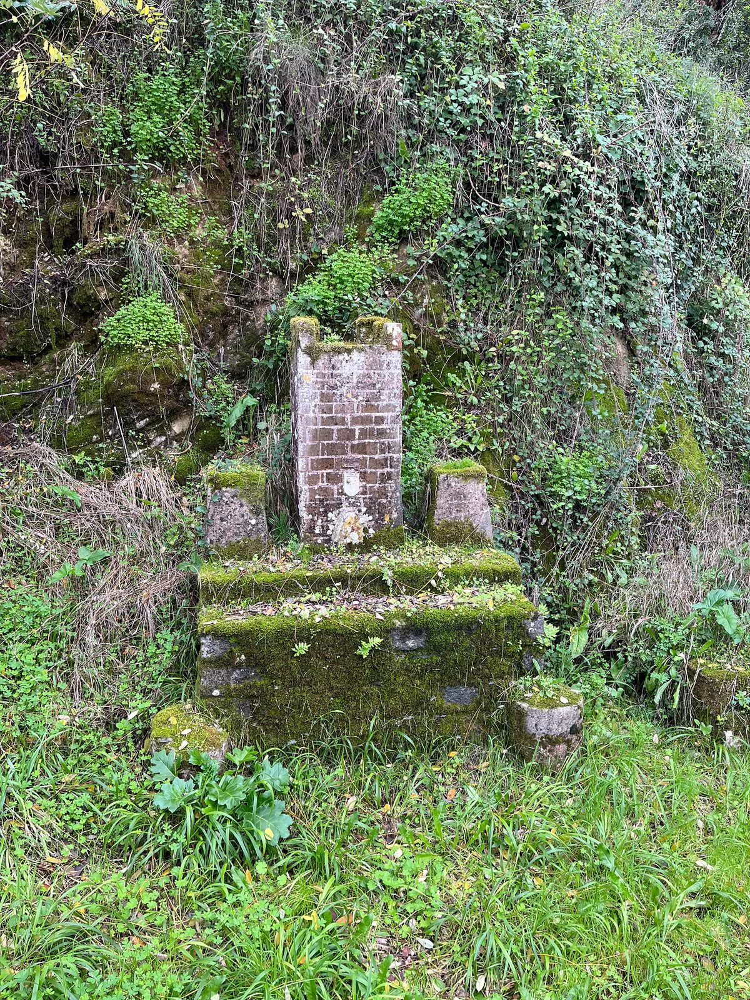
Certains éons de notre vie, en tant que titans de l’amour oublié, passent de telle sorte que tous les iris de Sibérie qui ont jamais existé vivent et meurent avant la fin. C’est tout un apprentissage réticent, cette affaire de compter des cendres et de vouloir que ça dure toujours. Ce sont plus que de simples vibrations, les volontés ont une manifestation concrète, palpable, et c’est là qu’il convient de rester calme, de peur que la lumière ne s’empare d’êtres si monochromes que le contact avec un tel phénomène oublié les efface du monde. En dernière analyse, il convient de rester calme… ne pas faire saigner la peau à cause du temps arrêté, ne pas offenser le corps parce qu’il ne suit pas l’esprit: pourquoi l’esprit ne marche-t-il pas comme le corps sent et marche? Au fond, qui contrôle? Peut-être sont-ce les homoncules qui dominent toute l’histoire que nous croyions déterminée par l’humanité adulte, peut-être nous entourent-ils de manières inimaginables. Avec eux, la patience est une condition préalable. La patience, rappelons-le, est quelque chose que le temps acquiert parce qu’il existe quantitativement, ou plutôt, c’est notre faute si nous lui donnons ces contours. Alors que la musique représente des changements dans la physique des choses, le temps en soi ne fait rien, mais certains facteurs sous l’influence du temps se dégradent ou s’affinent. La patience peut très bien ne jamais cesser, l’attente rester toujours la même. Le temps d’attente que les retardataires veulent voir apprécié est méprisable. Qui vient plus tôt, parce qu’il préfère avancer la vie, reste soumis à l’éternelle étreinte de la prison. Ici le temps se manifeste par la glace et cause de graves regrets à ceux qui arrivent plus tôt.
Ainsi, le retour prend toujours moins de temps, sauf quand il doit en prendre plus, et quand on veut étirer les heures et qu’une marche de 30 minutes devient une heure et demie, et quand on s’en rend compte on est déjà allé de Coimbra à Verride, puis à Buarcos, et alors la fin? Ce sera hier, à l’ancienne église du couvent de S. Francisco, indemne, seulement agitée par la respiration des admirables adufes qui gonflaient les lauréats de leurs prix respectifs. Notre saint empire prospérera s’il est bien nourri et si les outils de la convivialité sont fournis, et en ce sens, le festival a veillé à ce que les plateaux de notre ça ne déclinent pas. D’autres phénomènes géomorphologiques ont donc eu lieu en notre for intérieur, comme des ophiolites qui ont éclaté pour donner lieu à de nouvelles réalisations, longtemps enterrées. Qu’on imagine la puissance, le niveau colossal d’énergie gagné rien qu’en allant au Festival, l’excellent accueil étant un catalyseur sans égal.
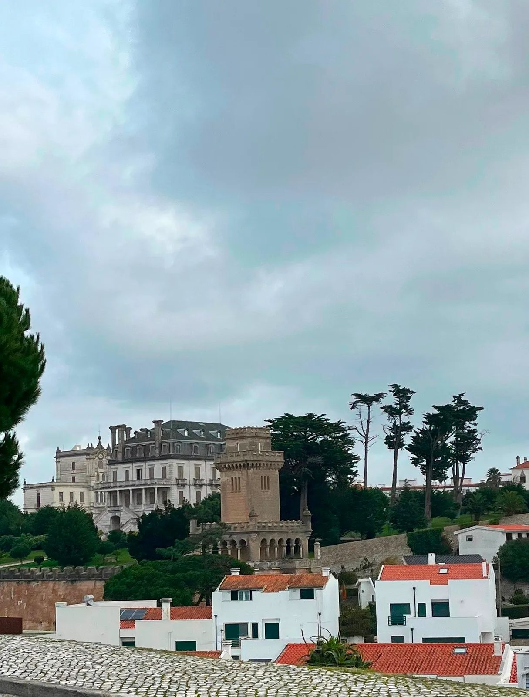
Les autres masques que prend le temps, qui nous mènent à la prairie d’or de l’inexistence qu’est assister à un film. Si la vie était un film, peut-être gagnerait-elle quelque intérêt: ce ne seraient pas seulement des vols émotionnels au-dessus des propriétés d’autrui de la psyché, ou le corps qui supporte ce qu’il ne veut pas supporter, mais plutôt une œuvre parfaitement structurée avec toutes les composantes visuelles susceptibles d’être dévorées par les yeux desséchés d’émotions vraies, c’est-à-dire celles qui ne se ressentent pas, mais qui se voient. La vie filmée comme la seule vie possible. Celle-là ne mérite pas de prix; si, des prix d’athlétisme ou de poésie ou de roi du siècle, et, pour rester dans le domaine de l’imagination, peut-être quelques prix pour respirer, ou ressentir, ou désespérer. Peut-être inventera-t-on les prix de la mort. Non pas d’une mort meilleure que toutes les autres, simplement tous les morts, désormais, reçoivent un trophée fait à la serrurerie du village. Mário, fais-nous une vingtaine de bibułowe kwiaty, mais en laiton, une maison de retraite vient de brûler et il n’y a pas d’argent pour le bronze.
Bref, la vie perd encore et encore face à la perfection de l’image en mouvement, cadrée et bien grande pour être vue sans défauts; d’ailleurs, l’ambition elle-même a du mal à dépasser un espoir médiocre exposé par le quatrième mur. Peut-être le bon cinéma crée-t-il de meilleures conditions pour que la vie puisse fleurir dans le tronc de qui regarde du cinéma, au lieu d’une quelconque passivité, voire d’une inertie, que la culture dominante encourage d’ailleurs aujourd’hui. Qu’on pense au bon cinéma à la façon d’un oiseau qui nous poursuit en caquetant: «La vie arrive, arrive la vie».
Du au , QV a eu l’occasion d’être bien accueillie par le festival de Coimbra Caminhos do Cinema Português et d’y voir tous les films des derniers jours de cette impressionnante 31e édition.
Caminhos do Cinema Português – Partie 1
par GM
Genèse (起 qǐ)
Entre des arbres indestructibles et des transformations urbaines dont l’achèvement aura lieu dans quelque finisterre d’un autre monde, au-delà des demeures seigneuriales déjà vacantes dont les propriétaires s’emploient à hanter les bien-lotis, nous étonne, au sommet de la pyramide tronquée, un cube bleu-vert qui tourne sur lui-même. Il détermine le pas par lequel s’exécute la Danse de la Loyauté (忠字舞 zhongziwu). Ils croient que la pluie va les élever au-dessus du fer, la même pluie qui perce des visages à travers les arbres. C’est pourquoi ils s’étalent en direction de la lumière, murmurent les futures coordonnées du bleu. L’extase est telle qu’ils ne remarquent même pas que nous les épions, prêts à dévorer le banquet fait seulement de sel, putative offrande à leurs maîtres, des fades, bref, autant ceux qui commandent que ceux qui obéissent.
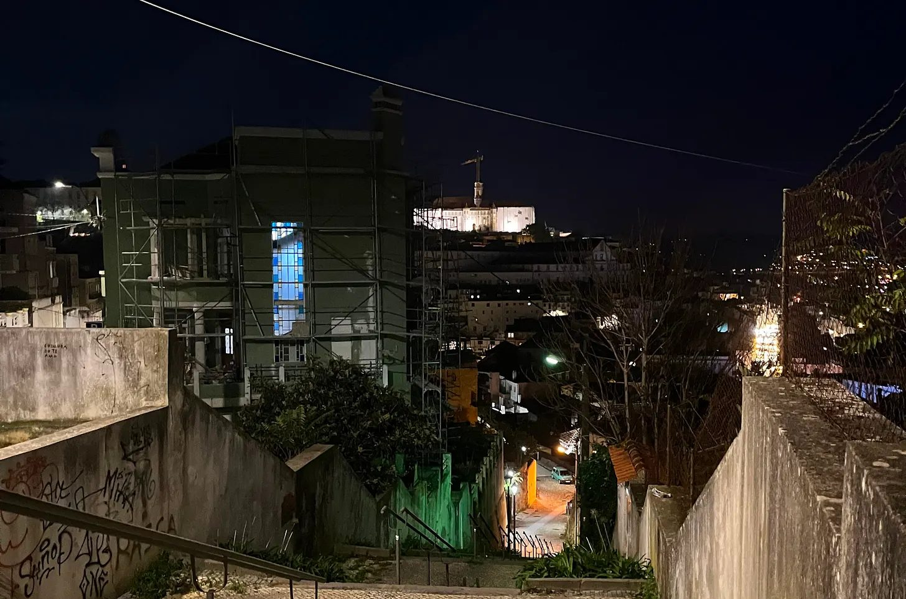
La vérité est que nous sommes à la fois le pouvoir des légendes et les réalistes sans corps. Nous sommes venus en traîneaux de l’est, et il n’y a pas de quantités industrielles de piquette qui puissent nous convaincre de changer. La souveraineté totale nous est intrinsèque et contagieuse pour quiconque se met en travers de l’air que nous voudrons respirer dans quelques instants. Si autrefois les bouches se déchiraient de tant de peur, il n’a même pas fallu d’interruptions pour qu’elles admirent le nouveau et reluisant verbe.
À minuit pile, un soleil froid est revenu et a brillé pour les yeux les plus capables de tout Coimbra. Il a émis des rires deux octaves au-dessus de la normale, et aussitôt la plus grande partie du public s’est tue. Seul celui qui venait du portail du Jardin des Sirènes, recraché au milieu de quelque fontaine vide et ainsi rené, c’est-à-dire l’ascète accompli, résisterait à l’impulsion de l’autothanatos. Ceux qui restent, qu’on les plaigne, mais ce ne sera pas nous.
Une forme particulière de Lumière (光 Guāng), l’étonnement imagé, notre engourdisseur, notre Père. Maintenant que la paix est atteinte, regardons et prions avec et vers le bleu sauveur, car la séance va commencer. La prière que nous débitons est fluide, une prière qui suit les personnages des courts métrages du Turno da Noite, et nous nous répétons ce qu’ils nous disent, les répliques chères, le bus qui n’arrivait jamais, la caravane du court métrage portugais After Link de Catarina de Cézanne, la vie jusqu’à l’instant même, qui se confond avec le cinéma, la translation de la conscience du spectateur vers l’éther de la salle obscure, momentanément, notre vide dont la seule issue se manifeste dans le bleu. Ce n’est pas un hasard si les thèmes coalesçaient avec After Link: c’est une schizophrénie cachée derrière les fantômes de l’intelligence artificielle, ce qui, en dernière analyse, pose la question de savoir si tous les TESCREALists (nom donné aux techno-optimistes et transhumanistes occidentaux qui croient définir l’avenir de l’humanité, car le sino-futurisme a d’autres caractéristiques qui ne seront pas non plus les plus souhaitables) ne sont pas simplement de nouveaux prêtres hyper-schizophrènes qui interprètent les saintes écritures, les exégètes des circuits imprimés et des langages de programmation, sans doute très logiques, mais qui cachent en réalité une profonde maladie mentale qui nous sépare de la réalité d’au moins un niveau. La guerre était déjà perdue quand on a commencé à algébriser en booléen. Du reste, un outil, une hache, ne sera jamais la même chose qu’un écran ou un clavier.
Soudain, tout le public est projeté de sa chaise au plafond dans cette Casa do Cinema de Coimbra, à tel point que même l’Avenida Sá da Bandeira s’en est ressentie. Il s’agissait de l’impact viscéral du court métrage Nachtstücke de Kester Läufer, avec sa fusion classique de l’amour et de la mort, qui nous laisse sans savoir lequel est le meilleur. Un cas de Liebestod = Amour + mort = Amort = À mort. C.Q.F.D. Dans ce court métrage allemand, pourquoi quelqu’un fumerait-il pendant que les entrailles glissent hors du ventre, nous ne saurions le préciser, mais c’était réussi, ça oui. Un court métrage qui a présenté les comportements les plus dégénérés et en même temps les plus complexés dont les humains soient capables, dans un beau et sombre formalisme. Enfin, La Pecera de Victoria Garza, violence contemplative portée à son comble dans l’exemple suprême de la Littérature des Cicatrices (傷痕文學 Shānghén wénxué), à savoir: comment le monde recrache les traumatisées qui ne peuvent s’empêcher de retourner au vide aquatique qui les a élevées. Cela se passait à Mexico, avec des touches de surréalisme ténébreux et un message qui reste pour la fin de la séance: à tout moment, partout, la traite de personnes réelles a lieu, comme des humains enfermés dans un aquarium dont une poignée d’autres humains se soucient, mais dont le problème continuera jusqu’à la fin.
Ainsi fut la séance de minuit, l’heure des hiboux comme nous; seulement, sur le chemin de l’hôtel, les ailes battaient de façon irrégulière. N’étaient les animaux oracles, n’était l’histoire marâtre.
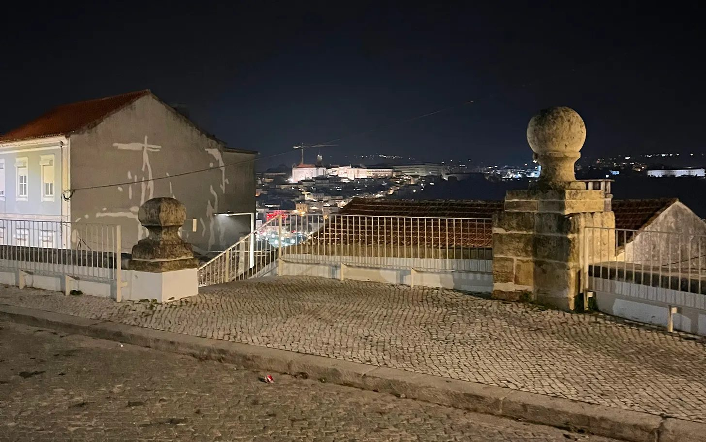
Le lendemain, après une promenade qui nous a menés, sans trop savoir ni comment ni pourquoi, jusqu’à la Quinta de S. Jerónimo, nous avons entendu dire que le Mondego avait aussitôt inondé toutes les rues. Le bistrot qui se vantait d’avoir la climatisation, où les propriétaires renégats de pensions sirotaient les liquides les plus variés et raffinés, de la soupe au vin, fut entièrement enveloppé d’une nappe d’eau qui apporta toute la bonhomie que ces pauvres gens aient pu désirer dans leurs longues et misérables vies; la mort par noyade serait le seul événement dont ils pourraient se vanter dans l’au-delà. Les touristes qui, groupés par centaines, venaient humblement mettre la Alta en pièces essayaient bien de se réfugier dans les meublés touristiques, mais ces gîtes aussi furent totalement oblitérés par la masse liquide. Les étudiants, enfin, les plus débrouillards, crièrent:
Before the phantom of False morning died,
Methought a Voice within the Tavern cried,
“When all the Temple is prepared within,
Why nods the drowsy Worshiper outside?”
And, as the Cock crew, those who stood before
The Tavern shouted - “Open, then, the Door!
You know how little while we have to stay,
And, once departed, may return no more.”
Mais ils s’en allèrent et partirent pour le Bureau impérial de la Musique (樂府 yuèfǔ). Les étudiants vraiment intellectuels, ceux qui utilisent la bibliothèque pour lire et non pour baver devant l’ordinateur, auraient saisi le lait noir le plus proche, provenant de la fugue officielle de la mort, c’est-à-dire qu’ils se sont encore donné beaucoup de mal pour venir jusqu’à nous, mais là encore, rien à faire. Malheureusement pour eux, nous sommes aussi obsolètes qu’éternels, incapables de pratiquer la susmentionnée Danse de la Loyauté (忠字舞 zhongziwu) parce que nous avons créé la danse qui est venue avant celle-ci, et toutes les danses inventées après ne nous préoccupent plus et sont nécessairement inférieures. Toute la réalité est ainsi quand on a créé l’Urtraumtanz, la danse primordiale des rêves. Ainsi observons-nous, du sommet de la pyramide tronquée, la nouvelle oasis qui s’est formée autour, le Lac du Croissant de Lune (月牙泉 Yuèyáquán). Dans le reste du désert urbain, plein de décombres post-apocalyptiques, le Teatro Académico Gil Vicente tenait bon. Plus encore, il se présentait non comme une banale pagode en ruine, mais comme le Palais éternel de l’Harmonie suprême. Vu l’excellente hospitalité du festival, l’entrée nous fut permise, même si nous dansions frénétiquement, fous d’anticipation pour une certaine première mondiale.
Du 18 au 26 octobre 2025, QV a eu l’occasion d’aller au Doclisboa voir les films suivants: Mémorias do Teatro da Cornucópia, The City of Mirrors, Um Minuto É Uma Eternidade Para Quem Está Sofrendo, Do You Love Me, Anticipation et In Hell With Ivo, aussi bien au S. Jorge qu’à la Culturgest.
La Loi, le Temps, l’Amour et le Doclisboa
par GM
«Quant à nous, seules la poésie et la famille nous maintiennent en vie. Ou plutôt, la poésie et le sang»
Il y a une porte qui s’ouvre où l’on peut discerner une jeune lumière, au milieu du vide. Elle représente tout ce qui a été vécu jusqu’ici et qui est déjà fini. On ne sait pas si l’émotion qu’exprime la lumière est désespérée ou calme. On dirait un cri étouffé par le temps.
- G. de G. F. M., A Ilha da Bem-aventurança
Il est incontestable que depuis toujours certaines forces illuminent ou engourdissent la psyché de l’être humain, avec un effet subséquent sur les allées et venues, les sauts, les élévations et les prostrations de son corps. Qu’ont été et que sont la religion, la jurisprudence, la cartographie, sinon des manières de faire en sorte que l’être humain se retrouve, qu’il ait une sorte de référence structurelle pour la vie; ou plutôt, des manières de justifier certains comportements d’humains envers d’autres humains, alors que le vrai chemin serait le dépouillement de toute référence extérieure. Ces reliques, à savoir les bibles, les lois et les cartes, omettent le fait qu’elles n’existent pas au-delà d’être de l’encre sur du papier, des formes sans essence. S’applique donc la maxime «the medium is the message», et rien de plus. Vraiment, les papiers n’ont pas besoin de nous régir si nous trouvons des moyens de nous en détacher.
La loi, par exemple, n’est pas faite par les juristes, et elle n’est pas non plus intemporelle, quoi qu’en imaginent ces scribes (fort peu créatifs dans la défense d’une putative objectivité, ils font même de l’ennui un art) qui aiment se rêver sénateurs. La loi est faite par ce qui arrive réellement, et ce que dit le papier indique davantage la morale qui régit l’époque où il a été écrit que ce qui est réellement fait et peut être fait. Certes, ce serait un trait de cosmopolitisme de croire qu’il existe des droits inviolables, mais chaque jour, en diverses parties de notre monde (sans parler des autres mondes hors du nôtre), la morale est brisée, la loi plus que remise en cause. La vie telle qu’elle est, dans le mépris de la chair et la soif du sang, désobéit aux préceptes, diktats et dogmes de fer, même si elle peut être écrasée par eux. La vie n’obéit qu’à elle-même, dans un détachement que les animaux connaissent mieux que les humains. Pour qui a le malheur de pouvoir penser, les paganismes, les shintoïsmes, les tengrismes et autres animismes expriment davantage les vérités éternelles que le code civil, puisqu’ils reconnaissent le divin en tout, sans jamais s’accrocher à des formes.
L’éternité est une chose très belle si l’on sait apprécier la petitesse de l’humanité et désobéir le plus possible au zeitgeist; et là, paradoxalement, dans la désappropriation du présent, on trouvera la recette pour le surpasser. De cette matière et de ces cycles sont faites les avant-gardes culturelles qui, avec les flux des époques, se noient et remontent à la surface, chevauchant les vagues comme elles peuvent et faisant par conséquent des radeaux avec les restes, certains acteurs s’insérant mieux dans la société que d’autres. De toute façon, peu importe au temps, car il rasera tout. Pour calmer, divulguer ou manipuler ce torrent d’occasions rouges, pourpres, jaunes et vertes qui coexistent, c’est-à-dire toutes les tonalités dont le temps est fait, s’impose la nécessité de moments d’observation de la contemporanéité, ou en d’autres termes, de documentaires.
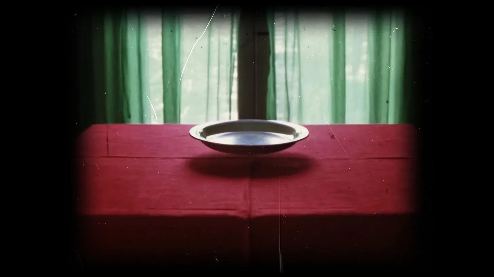
Ce registre est crucial comme alternative féconde au cinéma de fiction; c’est ce qui permet d’échapper aux hypocrisies du soi-disant dernier grand art et de présenter la vie telle qu’elle est, peut-être même la seule manière légitime de faire du cinéma. Si le but est de créer des faussetés, pourquoi ne pas écrire de la poésie ou mettre en scène une pièce de théâtre, quelque chose d’éternel? Rappelons d’ailleurs que seules les œuvres d’art exprimées dans des moyens éternels appartiennent à l’éternité. Le cinéma, qui n’a qu’un siècle, souffre du mal de la jeunesse, qui est de se croire trop important, trop percutant dans son maximalisme luisant. De la lumière s’est faite l’image. Si le cinéma est image, les documentaires sont iconoclastes: ils détruisent l’image pour révéler ce qui est au-delà d’elle.
Le documentaire, lui, part humblement du principe qu’il veut créer une représentation fidèle de la réalité avec ce moyen limité qu’est la caméra, et il y parvient, avec un renoncement caractéristique à toute prétention. Nous ajoutons même que la facette que nous apprécions le plus dans les films conventionnels est justement celle où ils se rapprochent le plus du documentaire, quand ils cessent d’être de simples formes et deviennent présence.
Au sens figuré, le cinéma conventionnel est comme un quatre-pièces trop éclairé où l’on voit tous les coins de la maison. Le documentaire, ce sont toutes les justes quantités de lumière aux endroits parfaits, comme un morceau de Bronius Kutavičius ou tout Belarmino.
- Wang Bing
Heureusement, donc, qu’il existe le Doc: dans sa pluriversité de thèmes et de films, il présente une perspective si loyale et si diverse de ce qui se passe de par le monde; chaque imago mundi est présentée et de nouvelles synapses se créent, les anciennes étant élaguées, dans une constante mort et renaissance. Tous les films ne devraient-ils pas être des expériences neurologiquement transformatrices? Au fond, ce festival représente une rupture avec les lois auxquelles nous avons été habitués, en présentant les temps nouveaux ou de nouvelles manières de voir les temps anciens (par exemple, dans Do You Love Me de Lana Daher), mais oui, penser au Doclisboa, c’est aussi penser à l’amour. Car jusqu’à quel point l’amour peut-il être défini comme un processus de pure appréciation mutuelle, chaste même, ou serait-ce plutôt une bâtardisation de la nature propre de cette émotion perdue? C’est la seule émotion qui embrasse toutes les autres, bonheur, sympathie, tristesse, égoïsme, lascivité, dégoût, deuil, parfois au même moment. Et ainsi nous avons aussi une définition phénoménologique du cinéma. De ce type particulier d’amour, ou peut-être du seul amour existant, se sont vécus les jours de cette réalité alternative suspendue dans le vide contributif qu’est exister dans un festival de cinéma situé dans l’utérus de velours, d’or et de bois, aka l’intérieur de la Culturgest. Les natures faibles ne supportent pas les émotions qu’apporte un fest comme le Doc. Totalement protégé du monde extérieur, avec une fonction: jouir de l’existence d’autrui (lisez: voir des films) et se livrer à ces pouvoirs. C’est trop confortable, trop thérapeutique, trop percutant pour une seule âme, et peut-être est-ce dans cet excès que réside le chemin, dans un abandon total à l’expérience elle-même.
Avertissement: QV accepte la sensibilité inhérente à l’être humain, elle n’est pas sceptique. C’est pourquoi il ne lui déplaît pas de protéger ses émotions en les réservant aux situations réelles, et non aux films faits par d’autres, où les sensations d’autrui devraient être cathartiques ou éclairantes à quelque égard. Mais bien sûr, ces rationalisations a priori s’effondrent quand un film est mis devant nous. Les films sont trop puissants et, comme toutes les petites morts, devraient être pris au sérieux: c’est-à-dire qu’un peu de vie nous est retiré chaque fois que nous voyons un film. Nous voyons effectivement la vie se dérouler à l’écran, mais et nous? Assis sur la chaise. Même si la vie est tout ce que nous voulons, nous voilà, assis sur la chaise, les émotions à vif, mais sans nous lever, sans bouger, les yeux étant les seuls à avoir la place de croiser les jambes.
Pour qu’il y ait une jouissance décente d’un film, comme par magie, le spectateur n’est pas tout à fait dédié à 100% au film, parce que la tête elle-même existe, après tout, et se consacre à ses cogitations habituelles tandis que par les yeux entre l’image et par les oreilles le son, sauf quand la tête entre en flux avec cette image en mouvement et que les pensées deviennent indistinguables du déroulement du film, évitant ainsi l’attention intermittente qui travaille si souvent à disséquer l’œuvre pendant qu’on en jouit. C’est de ce processus d’analyse de la conscience que se développe la critique habituelle, que QV ne pratique pas, mais c’est dans ce flux que nous sommes restés pendant les films. Les relations parentales de Trương Minh Quý dans Thành Phố Những Tấm Gương: một tiểu sử hư cấu (The City of Mirrors: A Fictional Biography) ou le triomphe d’Ivo Dimchev dans In Hell with Ivo de Kristina Nikolova, si poétiquement représentées dans le premier et si réalistes dans le second, ont été des exemples paradigmatiques de la Gelassenheit dans laquelle nous nous laissons tomber. Si l’on veut garder la raison et le lien avec ce monde, toutefois,la manière idéale de jouir d’un film est comme la théorie politique de l’empereur en tant qu’organe, «emperor as organ», c’est-à-dire non comme un sujet séparé, mais comme une partie du corps mystique de l’expérience.
Du reste, pauvre veinard que celui qui a assuré la curation de ce festival, soumis qu’il est à un pacte faustien complet. Ils perdent pour que les spectateurs gagnent. Ce qui arrive à cette équipe après le festival, nous ne le savons pas, mais à en juger par la suprême qualité des films présentés, nous dirions que ces personnes restent comme après une overdose d’ozempic, que les yeux s’efforcent de rester dans leurs orbites, que les canaux lacrymaux prennent même du sable, tant ils deviennent désertiques. Quant à nous, seules la poésie et la famille nous maintiennent en vie. Ou plutôt, la poésie et le sang.
Du au , QV a eu l’occasion de voir Apollon by Day Athena by Night, Isto Não É um Jardim, Echo of Sunken Flowers/Moi Aussi, A Grotto for Sale/Mefite/Cantos da Metamorfose/Memories of My Mother, Red Lace/My Tortion Diary, The Dreamer, A Good Wife, Esma’s Secret, On the Path, Quo Vadis, Aida, aussi bien au Cinema S. Jorge qu’à la Cinemateca.
Olhares do Mediterrâneo - 12e Édition
par GM
L’Espoir du Mal Incarné / Le Cinéma comme Danse Collective Parapsychologique, Résultant en Variations de Style sur des Regards
C’est une immensité de sang, une plage de métal. Un être qui plane en comptant les vies perdues, le sang des proches, toute une mer de perte, le Styx devenu mer. Il y a tant de sang qui bat sur la plage que cette masse informe et rouge avale le métal et s’empare lentement de la côte. Bord-de-sang. Peu après, les survivants n’hésitent même plus et s’accordent l’honneur d’être submergés par la glu incarnate. Tout là-haut, un être observe, non sans esquisser une grimace et répandre du sel, pour la blague. La Méditerranée ne sera jamais plus que cela. Entre décontractions assumées ou déguisées, cela a toujours été l’une des zones de la perdition. Un être qui juge et prête main-forte au mal, un démiurge stéréotypé, tel que tous les peuples croient toujours être menés par lui, et la faute est la sienne. La faute est toujours la sienne, pourvu que la masse rouge puisse être disculpée. Laissez le sang se reposer, n’enfermez pas le sang parce qu’il est comme il veut être, libre. L’antéchrist est habitué à être le coupable et, du reste, le jugement sera plus facile que de chercher les coupables au sein de la glu viscérale, vu qu’ils sont devenus assez habiles à se cacher à mesure que l’intelligence a augmenté et que l’ignorance est devenue mal incarnée. Pardon, mal lunée.
À QV, nous voyons que tous les festivals obéissent à la dichotomie suivante: ou bien ils sont comme des entités supradimensionnelles qui s’installent dans la localité pour s’emparer de sa vie culturelle, ou bien ils sont comme des personnes disparues qui surgissent pour apporter l’accalmie, un chœur ars antiqua dont les voix font délibérément disparaître toute la saleté associée aux mauvais vents de l’histoire. À chaque film, à chaque impact, la purification s’accroît. Assister à tous les films du festival, à la suite, serait comparable à l’expérience ascétique la plus intense qui puisse être à la portée d’un commun de cette terre, même si nous avons quelques réserves quant à l’expérience cinématographique traditionnelle, comme nous l’avons déjà exprimé dans un essai précédent. Bien sûr, des exceptions sont faites pour les défenses de l’espoir, de l’authenticité, du mépris de l’ironie et des excès de passion, des choses qui constituent la vie. À cela s’ajoute que le festival fait partie intégrante de l’existence collective de l’être humain, même si dans un festival de cinéma il ne peut y avoir beaucoup de danses physiques en cercle autour de quelque esprit; mais nous nous contentons certainement de phénomènes parapsychologiques où toutes les consciences des spectateurs confluent d’une manière ou d’une autre et mettent en pratique la horă la plus ancienne de l’humanité, au sommet aplati du Dealul Spirii. Imaginons le processus:
Les Regards flottent dans un innocent divertissement au lever du soleil, prétendant que l’horizon est atteignable, bienfaisant, nôtre. Dans le nihilisme qui semble tout traverser, grâce aux grisâtres de ces jours, les Regards illuminent des fleuves autrefois imaginés violents et infranchissables, qui se montrent désormais amicaux envers les passants sur le point d’abandonner. Un hymne au centre de notre jardin, où des Regards harmonieux trahissent une joie illimitée et sans vergogne. Des Regards dans la ville glissante qu’est devenue Lisbonne, aux immeubles opalescents et aux routes diaphanes, si l’on sait glisser au-delà des boutons des feux de circulation. Des Regards de soufre en réponse aux silencieuses actions de manipulation de qui veut du mal. En dépit de ma roseraie, vue par des Regards capitonnés dans un luxe honnête et bienveillant, tombe de la tour de chaux la haine de notre vie. Un simple registre de comptes à régler, des Regards transgénérationnels qui se penchent sur d’éternelles créances, arrivant à des conclusions semblables dans chaque passion archivée au long des siècles. La mort se mange comme respirent les Regards.
«Tanz im August, Berlim ao Sol», publié dans Fugas, Público
À partir de Gesundbrunnen le monde s’est fait, i.e., c’est de là qu’est née l’impression que j’ai gardée de Berlin, que je me risque à appeler la ville de l’harmonie. Heureusement, j’ai été béni d’un canapé, d’un vélo et, plus important encore, d’une bonne compagnie, locale même. Ce que cela implique, c’est que les attractions touristiques habituelles, intéressantes bien sûr, passent au second plan, parce que ce qui s’impose, c’est de vivre la ville à la berlinoise; et quel meilleur endroit pour commencer que la Currybude de la gare? Entrent des frites, une saucisse sauce curry et du ketchup, puis on flâne sur le Tempelhofer Feld pour observer tous les cyclistes qui semblent se promener dans le ciel, qui est en réalité une ancienne piste d’aviation.
Tempelhofer Feld
Suit un plongeon dans la piscine publique Sommerbad Neukölln, où la Freikörperkultur coexiste avec le burkini, ce qui, aux yeux du péquenaud qui écrit ces lignes, a fait s’évanouir toutes les théories du complot en ligne et a restauré la foi en l’humanité (ou en l’humanisme). Faites seulement attention à ne pas manger de glaces au bord de l’eau, car là oui, on vous rappellera à l’ordre, il y a des limites. Pourtant, l’impression générale est celle d’une ville sans aucune sorte d’entraves. D’ailleurs, elle facilite même la vie. Crise du logement? Bien sûr, impossible d’avoir un logement dans n’importe quelle ville. Malgré tout, à Berlin, on peut arriver nu avec quelques pièces en poche. On passe en un instant près de la Karl-Marx-Allee, où il y a toujours des vêtements pour qui veut les prendre, on trouve une boulangerie turque et on achète pour 1 euro un «pide», un énorme pain turc qui tient 3 jours, et dans quelque Späti (supérette avec terrasse) quelqu’un te trouvera un Club-Mate (ou une bière, si vous préférez) qui tient deux repas. À nous, on a même offert des «baklavas» à la pistache. À propos, la cuisine turque a été une expérience en soi, «içli pide», vulgo pizza turque, et le thé noir ne pouvait pas manquer, condition préalable d’une bonne journée dans cette ville. Sur la présence turque ou musulmane en Allemagne en général, je recommande le film de Fassbinder Tous les autres s’appellent Ali, et tout est dit.
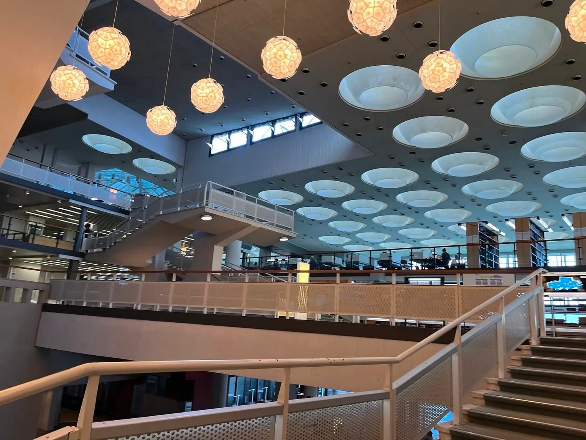
Staatsbibliothek
Bon, après ce petit-déjeuner, on peut alors aller travailler à la Staatsbibliothek, que je connais surtout comme la bibliothèque des Ailes du désir de Wenders, mais pas sans avoir d’abord pris un second petit-déjeuner dans l’élégant réfectoire. Aux livres succèdent les auteurs, et l’on passe ainsi par le cimetière de Dorotheenstadt, où repose Hegel. Aussi Fichte, Brecht et même le cinéaste Harun Farocki.
Dorotheenstädtischer
Tout aussi enthousiasmant sera, par exemple, d’aller voir des concerts de free jazz. À Mitte, il y a le Richten25, où nous avons vu le jeune saxophoniste Chris Pitsiokos, et à Neukölln (le quartier hip en ce moment) nous avons vu la pianiste légendaire Aki Takase au Sowieso. Partout dans Berlin il y a aussi les bars typiquement allemands, les Kneipen, qui apparemment disparaissent peu à peu, tout comme la scène clubbing semble en train de mourir. Tout est toujours en train de mourir partout, mais étrangement il y a aussi toujours un nouveau quartier cool dans n’importe quelle ville, et là, oui, tout recommence à se passer. La gentrification chassera-t-elle un jour les gens vers la forêt? Ce que je sais, c’est que parmi les parties de la ville que j’ai le plus appréciées, il y a justement les espaces verts. Où que l’on regarde, il y avait des arbres, pour protéger qui range ses livres sur son vélo après être passé chez le bouquiniste Antiquariat Mackensen & Niemann, ou qui file à travers le Tiergarten, ou qui, à la nuit tombante, va vers le pont Admiralbrücke à Kreuzberg écouter un sympathique jouer du kalimba, juste au-dessus du canal Landwehr. Pour ce qui est des boîtes, nous avons évité les files et ne sommes allés que dans une cave sous une Kneipe; personnellement, ça ne m’a pas déplu, mais ma danse est autre. À la Haus der Berliner Festspiele, ce que nous avons vu, c’est Jungle정글 par la Korea National Contemporary Dance Company, dirigée par Kim Sungyong, dans le cadre du festival Tanz im August; c’était intéressant, mais j’épargnerai les détails les plus sordides. Du reste, il est facile de se perdre dans n’importe quelle ville et de la renier pour toujours, mais ce n’est pas arrivé ici. Car la différence, c’est qu’à Berlin, même une perte de temps fait du bien.
Les et , QV a eu l’occasion d’assister, respectivement, à la performance «SOLAS» de Candela Capitán au 8 Marvila et au concert «Suspiro» de Maria Reis à l’Espaço BoCA, dans le cadre de la 5e édition de la BoCA - Biennale d’Arts Contemporains.
BoCA - Parties 5 & 6
par GM
Festina Lente - Rhytidectomies Potemkine - Tröst Einsamkeit - L’Enracinement - Néo-Inquisiteurs – Reggaeton Big Tech - Le Regret de la Génération Affamée - 岳飞
Mort et descente aux Enfers, d’une part, résurrection et ascension aux Cieux, d’autre part, sont comme les deux faces inverses et complémentaires, dont la première est la préparation nécessaire de la seconde, et que l’on retrouverait sans difficulté dans la description du «Grand Œuvre» hermétique; et la même chose est nettement affirmée dans toutes les doctrines traditionnelles. Ou encore, répondant à ceux qui se demandent sincèrement «pourquoi cette ascension doit être précédée d’une descente aux Enfers», [un philosophe français] indique quelques raisons spirituelles et initiatiques, qui s’enracinent dans une perspective gnostique: «d’une part, cette descente est comme une récapitulation des états qui précèdent logiquement l’état humain, qui ont déterminé ses conditions particulières et qui doivent ainsi participer à la “transformation” qui va s’effectuer; d’autre part, elle permet la manifestation, selon certaines modalités, des possibilités d’ordre inférieur que l’être porte encore en lui à un stade non développé, et qui doivent être épuisées par lui avant qu’il lui soit possible d’atteindre la réalisation de ses états supérieurs».
Lisbonne, Madrid, Paris, Londres, Vienne, Berlin, Varsovie, Budapest (Bucarest et Sofia, par exemple, y échappent, mais pas entièrement), la plupart des capitales européennes, celles citées ici récemment visitées, avec beaucoup d’effort et de fierté, par QV au cours des deux dernières années, sont dans leur grande majorité un agglomérat de villages Potemkine. Qui se trouve à l’intérieur de ces édifices soumis à des rhytidectomies? La noblesse, bien sûr, qu’elle soit locale ou expatriée, l’a toujours été et le sera toujours, à moins que quelque cataclysme ne mette la société sens dessus dessous. Nous aurons beau vouloir nous concentrer sur la hausse des loyers, loyers qui ne font que souligner la condition d’esclavage salarié de la majeure partie de la population, peut-être le vrai problème est-il plutôt la noblesse qui continue d’imposer ses diktats, même si les stratégies sont plus directes, plus légales, mais tout aussi pourries qu’autrefois. Il revient à l’observateur de cet état de choses soit de continuer à dépendre de la noblesse, soit de dénicher des mesures concrètes pour exister à son insu. Tel est le fondement anarchique de notre Weltanschauung, et il est garanti, ayant même été prouvé dans des laboratoires dits indépendants, mais financés par des entités supranationales et multilatérales totalement exemptes de toute motivation ésotérique sous-jacente de contrôle global, qu’aucun État, aucune entreprise, aucun parti, toutes variations, du reste, de la même dialectique maître-esclave, ne pourront aider à la dure construction de la souveraineté.
De ces conditions spirituelles, économiques et de logement, aussi claires que faussement construites, resurgit la solitude comme moteur culturel, c’est-à-dire des pièces développées par des conjectures misanthropes dans des colocations, trait commun de tout centre cosmopolite. On n’est jamais vraiment chez soi, et le résultat artistique est nécessairement le reflet de ce déracinement. Même si les autres locataires ont bon cœur et forment une nouvelle famille, la nouvelle maison n’est pas une maison, et encore moins pourrait-elle être l’ancienne maison. Ce que l’on désirerait, ce seraient plutôt des racines fraîches dans un sol ancestral, ce qui sera pratiquement impossible dans des villes définies par la suppression du caractère et l’insertion subséquente d’un pastiche de ce même caractère. Quel enfant n’a jamais essayé de replanter un arbre dont il avait déjà arraché les racines?
Il s’ensuit donc des formes d’expression solitaires ou, alternativement, qui excellent à exprimer la solitude, deux phénomènes distincts et employés ici pas seulement pour l’effet de chiasme. La technologie est un catalyseur de la solitude, oui, la torture incessante des humains par les machines, tout cela au nom de l’hallucination consensuelle qui, nous disait-on, nous libérerait, et finalement, idiots que nous sommes, nous restons enchaînés à un petit soleil, dans son essence le cocon du démiurge. Tout le mal du monde n’existait pas avant et est advenu de ce désormais atavisme, ce qu’on appelle le cyberespace. Bien des lunes plus tard, les néo-inquisiteurs régneront: qui châtie ceux qui ne se conforment pas, ou qui oblige les spectateurs à se délecter du châtiment de quelqu’un. En assistant à la performance Solas, de Candela Capitán, ce futur châtiment est ramené au présent et élevé à la puissance n: on voit les performeuses absorbées par leur téléphone, les spectateurs observent et sont même amenés à voir une deuxième fois sur la plateforme de diffusion pornographique, et une troisième fois quand ils prennent leur téléphone pour filmer. Elle n’est pas la seule dans cette critique tiède, à la manière chrétienne, de la technologie, car toute la culture de masse a aujourd’hui une approche semblable. Châtier les humains d’être des humains assoiffés de dopamine, de sérotonine, d’ocytocine et autres -ines est antithétique à la mentalité hédoniste. Les vrais libertins ne châtient pas, ne jugent pas, ils font ce qu’ils veulent et espèrent que personne ne le découvre, ou mieux, que tout le monde le sache déjà avant de les connaître. Si la technologie t’irrite, ignore-la. Utilise-la comme un outil. Du reste, quand on aime beaucoup châtier, d’un point de vue psychanalytique, cela signifie d’ordinaire que le Père a peut-être été une figure trop contrôlante.
La performance ne pèche que par là, par son approche catholique et punitive de l’usage de la technologie. La technologie peut être comprise par son potentiel libérateur, d’autant que persister à voir la technologie comme une prison nourrit encore davantage des Pantagruels hosted par AWS, Azure, Google Cloud ou d’autres monopoles big tech. Formellement, toutefois, Candela a une grammaire très développée et les performeuses exécutent à la lettre la danse, aussi hypersexuelle que robotique. Ce fut viscéralement impressionnant sur le plan visuel, et pour ce qui est des sons, cela alternait entre de solides kicks et du reggaeton, ce qui lui vaut un très approuvé de la part de QV. Franchement, il était plus que temps qu’on amène cette performance au Portugal, tant elle a fait parler d’elle sur internet. RESPECT BoCA, encore une fois.
Maria Reis existe et chante, dépouillée d’artifices (sauf un peu de reverb sur la voix), comme on dit. Avec la viola braguesa devenue sa cithare de jade, elle chante le regret et la génération solitaire affamée d’argent et d’amour. Elle chante pour un public où l’on ne voit que des ex les uns des autres, réticents à bouger pour ne pas être jugés. Nous écoutons tous la figure la plus importante du versant portugais de la génération élevée dans sa chambre et qui y a créé ses œuvres, si bien que l’identification avec ces thèmes apparemment éternels est facile: nous avons tous les mêmes problèmes mille fois en ces mille derniers jours, mille petites existences abêtissantes par mille maux sans nom qui n’ont commencé à apparaître que dans les mille adolescences aux mille hauts et bas, et nous en sommes encore à ces mille errances, mais croyez-le, il est possible qu’elles disparaissent: cela implique de renier mille mauvaises habitudes, de cracher sur mille personnes, avant que de ces mille occurrences une vie entière ne soit faite et digérée. Nous le répétons, c’est simple. Il suffit de grandir et d’envisager les mille réalités comme une seule. Malgré tout, quand on existe à 20 et quelques ans ou à peu près, impossible de ne pas être affecté par ce que soupire Maria Reis. Notre génération a toujours les émotions à fleur de peau, et tant mieux, c’est signe que la faim est grande, l’amour rare, et c’est avec de tels paradigmes que l’on crée des guerres, que l’on renverse des mondes. Maria Reis comble les failles, enseigne comment expurger les maux, comment prendre racine (la viola braguesa, qu’on le veuille ou non, en est une indication), comment transcender la blanche solitude au milieu des perpétuelles crises personnelles ou extra-personnelles qui définissent l’époque présente, comment trouver une maison au milieu des montagnes, comment la gloire est éphémère et sans importance, ainsi, macro-historiquement, comment le vide de lin est indésirable pour ceux qui veulent sauter hors du lit vers la terre et de la terre vers...
白首为功名。旧山松竹老，阻归程。
欲将心事付瑶琴。知音少，弦断有谁听？
Même les cheveux blancs, je cherche encore le mérite et la gloire.
Je retourne à la montagne, déjà les pins et les bambous ont vieilli,
J’essaie de revenir en arrière, le chemin a disparu.
Je veux confier mon cœur à la cithare de jade,
Mais rares sont ceux qui comprendraient –
Si les cordes se rompaient, qui entendrait?
Les et , QV a eu l’occasion d’assister, respectivement, à la performance «Romi Ibérica» de Deborah Krystall, à l’Espaço BoCA, et au concert «The Spirit Lamp» de Chrystabell à la Voz do Operário, dans le cadre de la 5e édition de la BoCA - Biennale d’Arts Contemporains.
BoCA - Parties 2 & 3
par GM
Esclave > Spectateur - Notre Diotime - La Mort du Lounge ou Mort au Lounge - Où Est la Mise en Scène Fassbinderienne – O Soave Fanciulla - Biennale Polycéphale - Lac dans le Ciel
Quelle est la différence entre le spectateur et l’esclave? L’esclave ne paie ni logement ni nourriture. En outre, l’esclave, au-dedans de sa tête, peut encore penser ce qu’il veut. Le spectateur consomme passivement les offrandes de dogmes qu’on dépose à sa porte, c’est l’animal malade de Châtelet. Mieux, c’est un golem du XXIe siècle fait d’argile de supermarché, avec quelques bouches où l’on a mis un éternel kkkkkkkkk, une argile toute prête à être modelée par le premier gestionnaire dont la ruse paraisse assez sensée pour convaincre le spectateur de tomber une fois de plus dans le sempiternel féodalisme. D’ailleurs, c’est trop flatteur de donner corps au spectateur, qui est en vérité plus gazeux qu’autre chose. Peut-être Tiqqun visait-il juste en décrivant Bloom, cette Stimmung, cette ambiance, cette vibe. Vibe tout a déjà été tenté, Vibe vivre fatigue, Vibe les cloches sonnent, mais pas le changement, Vibe de colossales sphères ocre qui aplanissent des civilisations prometteuses, Vibe des galaxies pourries de soleils régents et si pleins de lassitude qu’ils ne sont même pas physiquement capables d’exploser, Vibe de la musique pour mort-nés. Pedro Oom: «Que peut faire un désespéré quand l’air est un vomi et nous des êtres abjects?»
Entre en scène la maîtresse de cabaret Debora Krystall, vraie et sous-estimée Diotime des temps modernes, qui non seulement fait se lever des chaises les culs indécis, mais qui, sous le manteau d’une apparente stochasticité dans sa manière, sait en réalité comment va réagir un public timide, et tous les gestes ont été calculés inconsciemment par des années de performance pour un seul résultat: tel un haruspice, ouvrir les entrailles du public et, sous les yeux mêmes des intéressés, leur montrer enfin que c’est ça que vous aimez, le kitsch, l’honnêteté, un léger aiguillon plein d’humour pour voir s’ils réagissent ou s’ils se résignent. Il n’a même pas été nécessaire de recourir aux effets de distanciation ou au théâtre de la cruauté, car la théorie reste dans la vase quand le charisme suffit. Des décennies d’esthétique théâtrale par la fenêtre, avec les danseurs, qui fourniraient le contrepoint nécessaire, cartonnant dans un flamenco à la portugaise, et la maîtresse aussitôt après entonnant perpétuellement Maravilhoso Coração, l’hymne dont tous souhaitaient qu’il dure toute la nuit. Déjà dans la voiture, à crier aux passants Maravilhoso Coração Maravilhoso Coração Maravilhoso Coração Maravilhoso Coração.
Nous nous trouvions dans la fameuse zone définie comme within walking distance du Lounge, le seul endroit que la spéculation immobilière a eu, et bien eu, raison de supprimer.
«Couronnez-vous de laitue, et allez jouer au billard, ou faire des sonnets à la nouvelle dame, allez, car vous n’êtes bons à rien d’autre, mes chers Lisboètes;» a dit Garrett, et cela s’applique aussi au Lounge, dernier refuge des atomisés. Pour zéro esprit de convivialité, il y a déjà le métro, l’aéroport, le centre commercial, bref n’importe quel non-lieu. Le Banco, ça oui, Lisbonne a perdu le vrai spot. Genre Piwnica pod Baranami, à Cracovie il y a 50 ans, chacun fuyant les autorités à sa manière, tous réunis là pour décompresser, respirer.
Une fois dans l’Espaço BoCA, les panneaux rouges qui encadraient Sainte Debora Krystall donnaient au lieu une certaine lugubrité satanique, qui convenait même; néanmoins, j’aurais tout échangé contre des miroirs pour un effet fassbinderien maximal, Fassbinder étant, du reste, le seul réalisateur à même de faire la biographie de cette performeuse. Créer une chimère de tous les regards, aussi possibles que surréels.
Et de Fassbinder nous sautons à Lynch, tous deux liés par leur affection pour l’unheimlich. Quelque chose que Chrystabell, collaboratrice de l’Américain, cultive abondamment, avec une subtilité particulière et pour le plus grand délice des spectateurs qui, tellement habitués à l’expérience ordinaire d’un cinéphile, ne bougeaient même pas; d’ailleurs, la seule réaction possible était de rester bouche bée. Une performeuse a élevé, l’autre a stupéfié: deux conditions souhaitables pour des personnalités distinctes. Ce qui a le plus frappé chez la lynchienne, ce n’est pas tant l’artificialité de ses manières que quelques moments de douceur exprimés par de fragiles sourires en murmurant les chansons. Elle-même s’est un peu moquée de sa posture robotique à mi-parcours, dans quelques clips post-internet au milieu de tant d’images d’archives. Peut-être n’apprécie-t-elle même pas cette façade mystérieuse, cierge à la main, qu’elle doit tenir pour raviver le défunt réalisateur nord-américain.
Quoi qu’il en soit, la Voz do Operário n’aurait pu être plus adaptée à ce genre de spectacle. D’ailleurs, tant pour les lieux que pour l’esthétique, la Biennale BoCA a réuni dans sa programmation des scenes très diverses, informelles ou organisées. Ils ont su nourrir une programmation véritablement hétérogène, créant en laboratoire plusieurs têtes qui avalent toutes sortes de gens, et «les gens» acceptent de bon gré. Quiconque s’intéresse à quoi que ce soit d’artistique1 peut choisir la tête qui le dévorera et ne sera pas déçu, il n’aura qu’à remercier la Biennale polycéphale.
Reste à savoir si l’intention d’aller aux spectacles est pure ou glaciale, si le cœur sait dans quoi il s’engage et s’il cherche à sublimer, ou s’il prétend s’isoler dans le fauteuil du théâtre et en devenir partie. Il y a ceux qui sortent des spectacles et ont le discernement de percevoir une mer de fauteuils avec des humains invisibles collés dessus, des humains qui ont déjà abandonné et qui ne pleurent plus; ou il y a ceux qui entrent avec une certaine cardiomégalie et des membres si déliés qu’au moindre, et bienvenu, mouvement le corps se défait et monte se jeter dans le lac du ciel. Ce sont des choix.
Notes
Pour cette publication, surtout les spectacles. Cela tient tout simplement à la nature de notre personnalité, du reste déjà exposée sur la place publique il y a quelques années. ↑
Le , QV a eu l’occasion d’assister au concert «El Cante Rasgueado» de Niño de Elche et Pedro G. Romero, qui a eu lieu à l’amphithéâtre en plein air de la Fondation Calouste Gulbenkian, dans le cadre de la 5e édition de la BoCA - Biennale d’Arts Contemporains.
BoCA - Partie 1
par GM
Psychogéographie de la Gulbenkian - L’Art d’Obéir à la File - Le Flamenco comme Modus Educandi - Dialectes des Pulls - Le Concert en Soi
En circulant aujourd’hui mille fois dans ces espaces jadis mille fois parcourus, quelque dieu de la mémoire a tenu à me caresser avec les visages de toutes les personnes connues et plus que connues avec lesquelles du temps a été perdu ou gagné entre les feuilles et ces monolithes, où l’acte de s’asseoir se faisait toujours de façon un peu contrariée, comme qui plonge dans l’eau glacée, mais auquel succédait aussitôt un calme intérieur, de ceux qu’on n’obtient qu’à travers les légers inconforts du quotidien. Suer dans le bus, ou un froid agaçant sur les bras, et d’autres circonstances purement physiques un peu désagréables qui nous rappellent ce que c’est qu’exister: ce n’est guère plus qu’être un animal et avoir le corps qui traite ses propres idées, loin de la mesquinerie de la tête.
C’est dans cette manière d’observer les choses que je me trouvais quand je suis allé retirer mon billet au CAM récemment inauguré, une version plus polie de l’ancien. On pourrait dire qu’il a fait honneur au précédent, du reste peu remarquable, du moins pas autant que le bâtiment principal de la Fondation, l’amphithéâtre en plein air ou les autres espaces qui constituent la trame architecturale de l’unique idylle des Avenidas Novas. Billet en main, je me suis dirigé vers l’entrée du concert, où s’est ensuivie cette situation si caractéristique de la modernité et si représentative de notre douce civilisation. Je veux parler de la file, vulgo «queue». Je me souviens exceptionnellement bien d’une situation en 2017, où un concert était en préparation en ce même lieu et où je suis monté sur une petite butte qui entoure une section de cet amphithéâtre pour voir ce qui se passait. Bien entendu, j’ai été promptement réprimandé par le vigile diligent. Le supposé instinct animal est cringe et irrespectueux des normes auxquelles on nous a habitués, il doit donc être bien contrôlé. Pire que le vigile, c’est d’entendre quelqu’un qui se sent lésé d’avoir été obligé1 d’attendre si longtemps et qui, accusant et rappelant tous les préceptes de la soumission, crache des invectives vers l’orbite de l’effronté qui a décidé d’ignorer la loi. Il faut respecter la file. Rien contre l’organisation de l’événement. Il s’agit plutôt d’une obsession personnelle, de celles qu’ont les enfants quand ils se heurtent au monde des adultes et se demandent pourquoi les choses doivent être d’une certaine façon et pas d’une autre. Là, les parents répondent que c’est ainsi parce que ça a toujours été ainsi. Quelle serait l’alternative? Le chaos, ce qui pour beaucoup revient à dire zéro alternative. Conclusion logique: il faut respecter la file.
Mais il y a une alternative: le flamenco. C’est un art qui permet beaucoup d’improvisation, et qui porte en son sein une discipline brutale d’éducation musicale: c’est seulement ainsi qu’on parvient à jouer de cette façon. El duende, que tant d’expatriés considèrent essentiel à l’expression artistique du flamenco, ne peut être obtenu que si le corps est entraîné. On ne boit pas quelques verres à Séville pour jouer aussitôt un rasgueado. Ce sont des années de gymnastique, et même ainsi, la vraie virtuosité n’atteint que peu de gens. Comme la liberté, peu savent comment l’obtenir. Guy Debord serait une hypothèse possible, mais son attitude de pique-assiette ne me semble pas digne d’éloges. À ce qu’il me semble, il dépendait toujours d’autrui, presque dans une sorte d’adolescence permanente, au sens jungien.
On revient donc au flamenco. Ce spectacle pourra-t-il obéir aux critères exigeants que cette forme d’art se donne à elle-même? La discipline peut-elle permettre, et même être la condition préalable, des éclats d’improvisation? Pour l’instant, j’étais plutôt occupé à observer les gens. Avant même de croiser les jambes et de me préparer mentalement au concert qui allait avoir lieu, j’ai mis en pratique un rituel d’un grand intérêt anthropologique, où je n’engage la conversation avec personne et ignore toute interaction, si prometteuse soit-elle. J’ai ainsi remarqué les divers dialectes des pulls employés par les spectateurs: éclairés par les lumières de la scène tournées vers le public, ils donnaient une impression de mosaïque technicolor. Plus que la performance elle-même, ce qui plaît le plus dans un spectacle, bien souvent, c’est de voir qui vient pour la fête, qui vient pour l’art, qui peut et veut effectivement consommer de la culture, et ces cas rares qui incarnent toutes ces facettes.
Le concert a commencé de façon curieuse, avec des field recordings d’un atelier pendant que les joueurs de campaniça faisaient semblant d’accorder leurs violas, et cela, je sais le discerner, parce que je joue aussi. La fusion qui a suivi entre ces violas, aux paires de cordes d’acier, la voix incroyable du chanteur et les guitares classiques aux cordes de nylon aurait pu être surréelle, mais elle a été chichement explorée. À un moment du spectacle, quand tous ont joué ensemble, je crois avoir vraiment entendu un orchestre entier de musique expérimentale. C’était comme voir une kora jouer accompagnée d’un koto, c’est-à-dire des instruments qui ne sont jamais ensemble, mais qui se ressemblent tant qu’on s’attendrait à ce que quelqu’un les ait déjà combinés. Le flamenco permet rarement ce genre d’aventure, et cette subversion a peut-être été le principal mérite de cette performance d’El cante rasgueado, par Niño de Elche et Pedro G. Romero. Le reste du spectacle a été conventionnel: tantôt jouaient ceux du flamenco, tantôt ceux des campaniças, parfois par-dessus des enregistrements de cante, ce qui a paru totalement atavique, l’intemporalité de la voix et de la guitare supplantée par des enregistrements. Par-dessus ceux-ci, l’interprète a tout cassé avec sa voix bestiale, et c’était comme quand le rappeur balance des ad-libs sur le morceau que tout le monde a déjà écouté chez soi, alors qu’au concert on attendrait quelque chose de plus vivant. Personnellement, j’aurais réuni toutes les guitares dans un orchestre dans le style de celui que Robert Fripp avait dans les années 80, et je leur aurais dit d’improviser à leur guise, la voix de l’interprète surgissant chaque fois qu’il le souhaiterait. Malgré tout, ce fut très agréable d’assister à d’excellents musiciens faisant ce qu’ils savent faire de mieux, même s’il y avait un potentiel pour quelque chose de bien plus explosif.
Il faut donc remercier la Biennale d’encourager et de diffuser ce genre d’exploration, ce qui est justement ce qu’on attend d’une association qui promeut l’art contemporain. Qui plus est dans un lieu comme la Gulbenkian, si rare. Des fondations, il y en a beaucoup, et des jardins encore moins. Son homologue à, par exemple, Londres, le Barbican, où même la typographie employée est la même, n’a pas la même classe, et même cette ville, si pleine d’espaces verts soit-elle, n’a pas un seul jardin qui ressemble à celui de la Gulbenkian, où ce concert a eu lieu. Toute l’expérience de ce spectacle et de son milieu environnant méritait donc d’être cristallisée aujourd’hui.
QV PRATIQUE LE NOUVEAU REPORTAGE.
Notes
Lisez: non pas quelqu’un qu’on a forcé à faire la queue, mais quelqu’un qui remercie de l’occasion de renoncer à la liberté la plus élémentaire d’un bipède, qui est le mouvement fluide des jambes, et de rester immobile, n’avançant que pour avancer lentement, vers où que mène la file. En des temps d’oisiveté, l’un de mes nombreux passe-temps, où je m’appliquais à apporter le bien au monde de manières insolites, était de me mettre dans des files au hasard, juste pour rire, de faire semblant d’attendre, puis de filer juste avant d’être servi. Après le choc initial, le visage de la personne derrière moi s’illuminait comme si on lui avait offert une seconde vie. ↑